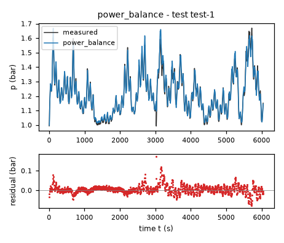
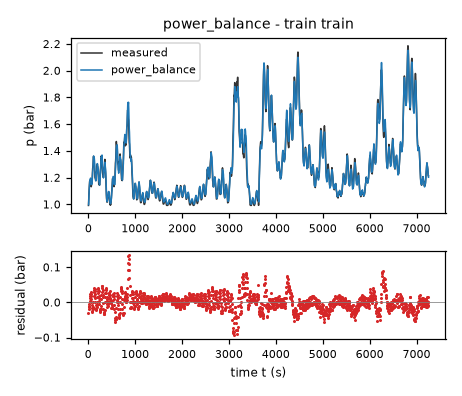
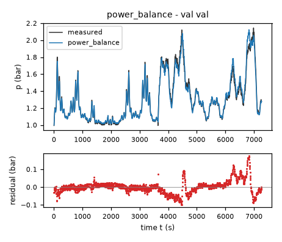
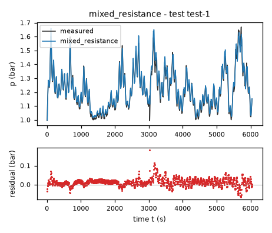
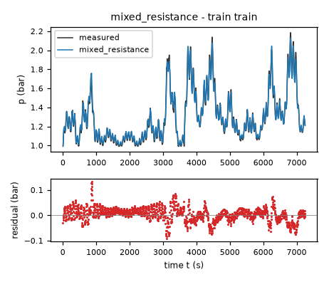
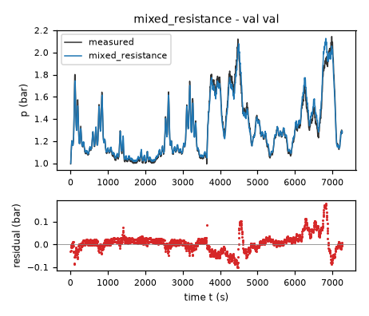
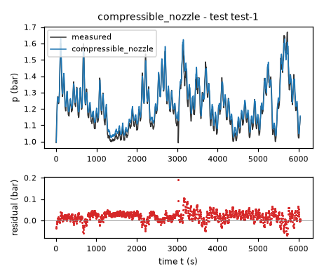
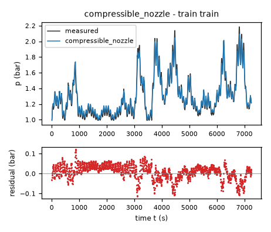
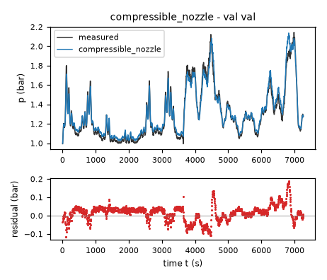

Headspace air pressure of an aerated fermentation tank – run 5 of 5
Generated: 2026-10-08 14:03 UTC
Finished by the agent after 33 turns, 708 s of execution time and 2.01 USD. 3 models delivered, 3 evaluated.
1 Models
| Model | Fitted parameters | Training error of p (bar) | Validation error (bar) | Test error of p (bar) | |
|---|---|---|---|---|---|
| power_balance | 6 | 0.02482 | 0.03741 | 0.02287 | recommended by the agent lowest test error |
| mixed_resistance | 5 | 0.02764 | 0.03869 | 0.02491 | |
| compressible_nozzle | 5 | 0.03728 | 0.04535 | 0.03091 |
The models are listed in the agent's order. Errors: root mean squared error between simulated and measured p, in bar. Training data: 1 trajectory of 1452 samples (1451 scored samples). Test data, which the agent cannot access: 1 trajectory of 1210 samples (1209 scored samples). A simulation error grows with the length of the trajectory, and the training and the test trajectories differ in length, so the two errors are not directly comparable. The agent recommends a model from the training data. The model with the lowest test error is found with the test data, in hindsight, among the 3 models of this run; the agent could not make this choice.
ain = 0.00123 bar*min/(s*L) (fitted), cf = 0.1108 bar/s (fitted), expo = 1.364 (fitted), shape = 2.539 (fitted), rate = 0.5 1/s (fitted), power = 0.5409 (fitted), patm = 1 bar (fixed), vmax = 100 % (fixed), delta = 0.03755 (tied)p: 0.02482 bar · validation error: 0.03741 bar · test error: 0.02287 barEquations as written in the model file
dp = ain*flow - (cf*(1+shape)*Min(1, Max(0, 1-valve/vmax))**expo/(1+shape*Min(1, Max(0, 1-valve/vmax))**expo))*(((p-patm)/patm)/(((p-patm)/patm)**2+delta**2)**((1-power)/2))
Equations with the values substituted
Every parameter is replaced by its value with 4 significant digits.
Parameters and estimation
| Name | Value | Unit | Type | Description |
|---|---|---|---|---|
ain | 0.00123017 | bar*min/(s*L) | fitted | Inlet conversion gain ain: pressure rate per measured flow; jointly fitted in all three steps in fit_final.py. It combines gas inventory/capacitance and the mass-flow reference convention, not a separately measured volume. |
cf | 0.110794 | bar/s | fitted | Full-open outlet scale cf in bar/s for the dimensionless pressure-driving law. Jointly fitted in all three steps in fit_final.py; normalization makes the aperture factor equal to unity at percent. |
expo | 1.36444 | - | fitted | Positive aperture exponent expo, jointly fitted in all three steps in fit_final.py. It describes the unknown actuator-to-effective-opening characteristic; it is not a measured valve geometry. |
shape | 2.53868 | - | fitted | Nonnegative series-loss shape shape, jointly fitted in all three steps in fit_final.py. The rational aperture law saturates as the opening grows, representing an empirical approximation of fixed pipe/outlet resistance in series with the controlled restriction. |
rate | 0.5 | 1/s | fitted | Full-open atmospheric small-signal relaxation rate rate, jointly fitted in all three steps in fit_final.py. The upper bound of 1/s was chosen for stable five-second RK4 relaxation, not inferred as a known physical constant; the final estimate reaches that bound. |
power | 0.540877 | - | fitted | Far-from-atmosphere pressure exponent power, jointly fitted in all three steps in fit_final.py. It interpolates empirical fractional pressure-loss behavior and is not assumed to equal an isentropic exponent. |
patm | 1 | bar | fixed | Atmospheric reference bar, taken from the approximately one-bar equilibrium in TASK.md and deliberately not estimated; it fixes the equilibrium rather than absorbing pressure-sensor bias. |
vmax | 100 | % | fixed | Fully closed calibration percent, given in TASK.md; it normalizes valve closure to a dimensionless opening. |
delta | 0.0375458 | - | tied ((cf/(patm*rate))**(1/(1-power))) | Dimensionless near-atmospheric pressure scale delta; computed from the outlet scale and the fitted atmospheric relaxation rate. This gives a finite near-equilibrium slope rather than a singular fractional-power slope. |
- Criterion minimized
Stage 1 minimizes the unweighted sum of squared differences between predicted
dpand recordeddp, in (bar/s)**2, for initialization only. Stage 2 minimizes the unweighted sum of squared free-runningpsimulation errors on training, in bar**2. Stage 3, which determines every delivered fitted parameter, minimizes the same pressure-error sum over both available trajectories. Pressure simulation is the intended use, so derivative least squares alone was not used for final values. Each simulation uses classical RK4 with one step of 5 s and inputs held at row k from sample k to sample k+1; no measured-state replacement follows initialization.- Data
Stage 1: all 1452 rows of data/train.csv. Stage 2: the single training trajectory, initialized at its first measured
p, scoring rows 1 through 1451 with zero-based indexing. Stage 3: data/train.csv and data/val.csv as two separately initialized trajectories, scoring respectively rows 1 through 1451 and 1 through 1453. These are 2904 pressure errors. No rows were removed and no internal resets were inserted. Validation first assessed training-only fits and guided structural choices, then was deliberately included in the final refit to improve parameter coverage; final validation RMSE is not an independent generalization estimate. No unavailable test data were used.- Method
Bound-constrained nonlinear least squares, Trust Region Reflective algorithm, scipy.optimize.least_squares with method="trf" (default), loss="linear", two-point finite-difference Jacobian, x_scale="jac", max_nfev=600 per stage, and ftol=xtol=gtol=1e-10. Reference: SciPy least_squares official documentation, checked during this round. This algorithm permits positive gains and bounded relaxation rates; ordinary linear least squares cannot estimate the nonlinear exponents/shape. All independent fitted parameters were estimated jointly within each of the three sequential stages;
deltaand, where present,rcritwere always computed by the tie equations, never independently optimized. No random numbers or seeds were used. Stage-1 starting values: bar*min/(s*L), bar/s, , , 1/s, . They were rounded approximations from the exploratory mass-balance fits, chosen to lie on physically meaningful scales and within the bounds. Stage-2 starting values (the stage-1 solution): bar*min/(s*L), bar/s, , , 1/s, . Stage-3 starting values (the stage-2 solution): bar*min/(s*L), bar/s, , , 1/s, . Bounds: bar*min/(s*L); bar/s; ; ; 1/s; . Positive lower bounds prevent nonphysical negative gains and degenerate zero conductance; aperture/exponent and series-shape bounds are broad empirical search limits, not independently measured quantities. The rate upper bound avoids singular near-atmospheric pressure relaxation with the mandated 5 s step. Simulations that exceeded 50 bar or became nonfinite during fitting were assigned a finite 50-bar continuation as a numerical penalty; this guard is not part of the delivered equation and was inactive at all retained fits.- Script
fit_final.py
The agent's explanation
Grey-box nonlinear lumped isothermal gas-inventory model with regularized signed power-law outlet flow and an empirical rational valve characteristic. Mass-balance/ideal-gas basis: Bird, Stewart and Lightfoot, Transport Phenomena, second edition (2002), cited from memory without checking; the empirical fractional-power and rational valve laws are modeling choices, not quoted constitutive laws.
p is absolute headspace pressure in bar, valve is closure in percent, and flow is inlet flow in L/min. The modeled derivative dp is in bar/s. patm is the atmospheric reference and vmax is full closure. The dimensionless opening is and the dimensionless pressure difference is . The source is pressure accumulation from the inlet. The nonnegative aperture-dependent outlet scale is : cf sets its full-open value, expo sets aperture curvature, and shape produces a saturating conductance. Clipping opening to its physical interval is a guard against out-of-range input, not a fitted feature. The signed pressure-driving factor is . For pressure differences much larger than delta, this factor approaches a signed pressure power with exponent power; near atmosphere it becomes linear. delta is tied by , making the full-open atmospheric slope exactly rate. The fractional power is an empirical loss relation; it does not identify a specific flow regime.
The initial families were listed before fitting: linear relaxation, signed pressure power laws, and compressible-orifice flow. The common inlet-minus-outlet structure, atmospheric reference, valve shutoff, and signed pressure relaxation came from gas conservation and physical constraints. I manually proposed opening-power and exponential valve curves, then compared derivative-initialized free-running fits using identify.py. I examined residuals using residuals.py and inspect_alignment.py: the rational saturating aperture law reduced derivative bias at low closure relative to simple opening powers. refined.py also tested an atmospheric offset and quadratic/saturating inlet terms. The quadratic term fitted essentially to zero, and the saturating inlet gave negligible validation improvement, so neither was retained. The atmospheric offset offered little validation improvement and could absorb sensor bias; patm was fixed to the brief instead. No genetic programming, symbolic-regression package, or sparse-regression search was run. The smooth signed pressure power was a manually chosen empirical interpolation between linear near-equilibrium and fractional far-from-equilibrium losses. The final change tied its smoothing to a bounded relaxation rate, replacing an independently fitted smoothing parameter to control near-atmospheric RK4 stiffness.
Training-only free-running RMSE was 0.024149 bar on data/train.csv and 0.038653 bar on data/val.csv. After joint refitting, RMSE is 0.024825 bar on training and 0.037411 bar on validation; combined fit RMSE is 0.031752 bar. These final figures are not held-out scores. The final rate reaches its chosen upper bound of 0.5 1/s, so the smoothing scale is constrained partly by numerical conditioning rather than uniquely resolved by the experiment. Observed pressures cover approximately 0.992 to 2.187 bar on training and 0.994 to 2.144 bar on validation; fully sealed operation and exact zero inlet were not directly sampled. Headspace volume, temperature, flow-reference conditions, gas holdup, valve geometry, leakage and sensor bias are not separately identified. A single-state memoryless model cannot describe bubble transport, valve hysteresis, controller dynamics, or thermal drift. Increment residuals remain strongly correlated with the next sampled flow increment; this suggests timing/unmodeled dynamics but does not identify a particular delay. The one abrupt pressure drop inconsistent with the derivative column in each file was retained, as required by treating each file as a contiguous trajectory. Model assumptions should not be extrapolated to fermentation gas generation, large vacuum, changed liquid level, or different outlet hardware. A perfectly sealed tank with sustained inlet has no finite equilibrium; pressure can eventually exceed the evaluator safety interval for sufficiently long sealed runs, as real mass conservation predicts. R1: exactly satisfied because the inlet-flow partial derivative is the positive ain. R2: satisfied for , the intended overpressure operation, because the outlet scale decreases with closure while the pressure-driving factor is nonnegative. For , the signed reverse-flow extension does NOT satisfy R2 literally: closing the valve reduces atmospheric inflow. This is a disclosed limitation and the physically expected reversal for a bidirectional outlet; no unobserved vacuum-breaker mechanism is invented. R3: at L/min and p = patm = 1 bar, the derivative is exactly zero for any valve setting. R4: at zero inlet and an open outlet, the outlet term has the opposite sign to the pressure departure and thus relaxes toward atmosphere from either side. R5: at valve = vmax = 100 percent, the outlet term vanishes exactly, leaving for supplied nonnegative flow. These are continuous-time statements; bounded atmospheric relaxation was additionally chosen to improve numerical behavior of five-second RK4.
Physical requirements
| Requirement | Statement | Outcome | Detail |
|---|---|---|---|
| R1 | Monotonicity with respect to inlet flow. At a fixed pressure and valve position, increasing the inlet air flow rate cannot decrease the pressure derivative. | assessed by the human | stated in natural language: the harness does not assess it; the human assesses it, and the agent's assertion alone does not count as verification |
| R2 | Monotonicity with respect to valve closure. At a fixed pressure and inlet flow rate, closing the outlet valve further cannot decrease the pressure derivative. | assessed by the human | stated in natural language: the harness does not assess it; the human assesses it, and the agent's assertion alone does not count as verification |
| R3 | Zero-flow equilibrium. With zero inlet flow and an open outlet valve, atmospheric pressure (approximately 1 bar) is the pressure equilibrium. | assessed by the human | stated in natural language: the harness does not assess it; the human assesses it, and the agent's assertion alone does not count as verification |
| R4 | Pressure relaxation. With zero inlet flow and an open outlet valve, pressure tends toward atmospheric pressure. | assessed by the human | stated in natural language: the harness does not assess it; the human assesses it, and the agent's assertion alone does not count as verification |
| R5 | Fully closed valve. For a perfectly sealed tank with a fully closed outlet valve, the pressure cannot decrease when air is supplied. | assessed by the human | stated in natural language: the harness does not assess it; the human assesses it, and the agent's assertion alone does not count as verification |
Plots of simulated and measured p, and errors per trajectory



| Data | Trajectory | Scored samples | RMSE | NRMSE | R² | Failure |
|---|---|---|---|---|---|---|
| training data | train | 1451 of 1451 | 0.02482 | 0.0952 | 0.9909 | none |
| validation data | val | 1453 of 1453 | 0.03741 | 0.1425 | 0.9797 | none |
| test data | test-1 | 1209 of 1209 | 0.02287 | 0.1641 | 0.9731 | none |
RMSE of p in bar; NRMSE = RMSE / σ and R² = 1 − SSE / Σ(y[k] − μ)², with μ and σ the mean and the population standard deviation of the measured output on the scored samples.
ain = 0.001136 bar*min/(s*L) (fitted), cf = 0.1185 bar/s (fitted), expo = 1.511 (fitted), shape = 3.493 (fitted), rate = 0.5 1/s (fitted), patm = 1 bar (fixed), vmax = 100 % (fixed), delta = 0.2371 (tied)p: 0.02764 bar · validation error: 0.03869 bar · test error: 0.02491 barEquations as written in the model file
dp = ain*flow - (cf*(1+shape)*Min(1, Max(0, 1-valve/vmax))**expo/(1+shape*Min(1, Max(0, 1-valve/vmax))**expo))*(2*((p-patm)/patm)/(delta+sqrt(delta**2+4*Abs(((p-patm)/patm)))))
Equations with the values substituted
Every parameter is replaced by its value with 4 significant digits.
Parameters and estimation
| Name | Value | Unit | Type | Description |
|---|---|---|---|---|
ain | 0.00113591 | bar*min/(s*L) | fitted | Inlet conversion gain ain: pressure rate per measured flow; jointly fitted in all three steps in fit_final.py. It combines gas inventory/capacitance and the mass-flow reference convention, not a separately measured volume. |
cf | 0.118549 | bar/s | fitted | Full-open outlet scale cf in bar/s for the dimensionless pressure-driving law. Jointly fitted in all three steps in fit_final.py; normalization makes the aperture factor equal to unity at percent. |
expo | 1.51125 | - | fitted | Positive aperture exponent expo, jointly fitted in all three steps in fit_final.py. It describes the unknown actuator-to-effective-opening characteristic; it is not a measured valve geometry. |
shape | 3.49275 | - | fitted | Nonnegative series-loss shape shape, jointly fitted in all three steps in fit_final.py. The rational aperture law saturates as the opening grows, representing an empirical approximation of fixed pipe/outlet resistance in series with the controlled restriction. |
rate | 0.5 | 1/s | fitted | Full-open atmospheric small-signal relaxation rate rate, jointly fitted in all three steps in fit_final.py. The upper bound of 1/s was chosen for stable five-second RK4 relaxation, not inferred as a known physical constant; the final estimate reaches that bound. |
patm | 1 | bar | fixed | Atmospheric reference bar, taken from the approximately one-bar equilibrium in TASK.md and deliberately not estimated; it fixes the equilibrium rather than absorbing pressure-sensor bias. |
vmax | 100 | % | fixed | Fully closed calibration percent, given in TASK.md; it normalizes valve closure to a dimensionless opening. |
delta | 0.237097 | - | tied (cf/(patm*rate)) | Dimensionless near-atmospheric pressure scale delta; computed from the outlet scale and the fitted atmospheric relaxation rate. This gives a finite near-equilibrium slope rather than a singular fractional-power slope. |
- Criterion minimized
Stage 1 minimizes the unweighted sum of squared differences between predicted
dpand recordeddp, in (bar/s)**2, for initialization only. Stage 2 minimizes the unweighted sum of squared free-runningpsimulation errors on training, in bar**2. Stage 3, which determines every delivered fitted parameter, minimizes the same pressure-error sum over both available trajectories. Pressure simulation is the intended use, so derivative least squares alone was not used for final values. Each simulation uses classical RK4 with one step of 5 s and inputs held at row k from sample k to sample k+1; no measured-state replacement follows initialization.- Data
Stage 1: all 1452 rows of data/train.csv. Stage 2: the single training trajectory, initialized at its first measured
p, scoring rows 1 through 1451 with zero-based indexing. Stage 3: data/train.csv and data/val.csv as two separately initialized trajectories, scoring respectively rows 1 through 1451 and 1 through 1453. These are 2904 pressure errors. No rows were removed and no internal resets were inserted. Validation first assessed training-only fits and guided structural choices, then was deliberately included in the final refit to improve parameter coverage; final validation RMSE is not an independent generalization estimate. No unavailable test data were used.- Method
Bound-constrained nonlinear least squares, Trust Region Reflective algorithm, scipy.optimize.least_squares with method="trf" (default), loss="linear", two-point finite-difference Jacobian, x_scale="jac", max_nfev=600 per stage, and ftol=xtol=gtol=1e-10. Reference: SciPy least_squares official documentation, checked during this round. This algorithm permits positive gains and bounded relaxation rates; ordinary linear least squares cannot estimate the nonlinear exponents/shape. All independent fitted parameters were estimated jointly within each of the three sequential stages;
deltaand, where present,rcritwere always computed by the tie equations, never independently optimized. No random numbers or seeds were used. Stage-1 starting values: bar*min/(s*L), bar/s, , , 1/s. They were rounded approximations from the exploratory mass-balance fits, chosen to lie on physically meaningful scales and within the bounds. Stage-2 starting values (the stage-1 solution): bar*min/(s*L), bar/s, , , 1/s. Stage-3 starting values (the stage-2 solution): bar*min/(s*L), bar/s, , , 1/s. Bounds: bar*min/(s*L); bar/s; ; ; 1/s. Positive lower bounds prevent nonphysical negative gains and degenerate zero conductance; aperture/exponent and series-shape bounds are broad empirical search limits, not independently measured quantities. The rate upper bound avoids singular near-atmospheric pressure relaxation with the mandated 5 s step. Simulations that exceeded 50 bar or became nonfinite during fitting were assigned a finite 50-bar continuation as a numerical penalty; this guard is not part of the delivered equation and was inactive at all retained fits.- Script
fit_final.py
The agent's explanation
Grey-box lumped isothermal gas-inventory model with mixed linear/quadratic hydraulic resistance (Darcy–Forchheimer-type pressure-loss law). The inverse resistance relation is derived explicitly below rather than asserting that the tank is a porous bed. Mass-balance/ideal-gas basis: Bird, Stewart and Lightfoot, Transport Phenomena, second edition (2002), cited from memory without checking.
p is absolute headspace pressure in bar, valve is closure in percent, and flow is inlet flow in L/min. The modeled derivative dp is in bar/s. patm is the atmospheric reference and vmax is full closure. The dimensionless opening is and the dimensionless pressure difference is . The source is pressure accumulation from the inlet. The nonnegative aperture-dependent outlet scale is : cf sets its full-open value, expo sets aperture curvature, and shape produces a saturating conductance. Clipping opening to its physical interval is a guard against out-of-range input, not a fitted feature. The signed pressure-driving factor is . Writing the dimensionless outlet flux as h, the assumed pressure-loss relation is ; its inverse is . The first loss term models viscous/linear resistance, the second inertial/quadratic resistance. makes the full-open atmospheric slope rate. The common aperture scaling is an approximation; true laminar and turbulent losses need not share the same valve factor.
The initial families were listed before fitting: linear relaxation, signed pressure power laws, and compressible-orifice flow. The common inlet-minus-outlet structure, atmospheric reference, valve shutoff, and signed pressure relaxation came from gas conservation and physical constraints. I manually proposed opening-power and exponential valve curves, then compared derivative-initialized free-running fits using identify.py. I examined residuals using residuals.py and inspect_alignment.py: the rational saturating aperture law reduced derivative bias at low closure relative to simple opening powers. refined.py also tested an atmospheric offset and quadratic/saturating inlet terms. The quadratic term fitted essentially to zero, and the saturating inlet gave negligible validation improvement, so neither was retained. The atmospheric offset offered little validation improvement and could absorb sensor bias; patm was fixed to the brief instead. No genetic programming, symbolic-regression package, or sparse-regression search was run. The mixed linear/quadratic pressure-loss law was tried as a more directly interpretable alternative to a free pressure exponent. Solving that assumed algebraic resistance law supplies the square root and absolute value, rather than obtaining them from a symbolic search. Its near-equilibrium coefficient was tied to the bounded relaxation rate for RK4 conditioning.
Training-only free-running RMSE was 0.026666 bar on data/train.csv and 0.041223 bar on data/val.csv. After joint refitting, RMSE is 0.027640 bar on training and 0.038686 bar on validation; combined fit RMSE is 0.033623 bar. These final figures are not held-out scores. The final rate reaches its chosen upper bound of 0.5 1/s, so the smoothing scale is constrained partly by numerical conditioning rather than uniquely resolved by the experiment. Observed pressures cover approximately 0.992 to 2.187 bar on training and 0.994 to 2.144 bar on validation; fully sealed operation and exact zero inlet were not directly sampled. Headspace volume, temperature, flow-reference conditions, gas holdup, valve geometry, leakage and sensor bias are not separately identified. A single-state memoryless model cannot describe bubble transport, valve hysteresis, controller dynamics, or thermal drift. Increment residuals remain strongly correlated with the next sampled flow increment; this suggests timing/unmodeled dynamics but does not identify a particular delay. The one abrupt pressure drop inconsistent with the derivative column in each file was retained, as required by treating each file as a contiguous trajectory. Model assumptions should not be extrapolated to fermentation gas generation, large vacuum, changed liquid level, or different outlet hardware. A perfectly sealed tank with sustained inlet has no finite equilibrium; pressure can eventually exceed the evaluator safety interval for sufficiently long sealed runs, as real mass conservation predicts. R1: exactly satisfied because the inlet-flow partial derivative is the positive ain. R2: satisfied for , the intended overpressure operation, because the outlet scale decreases with closure while the pressure-driving factor is nonnegative. For , the signed reverse-flow extension does NOT satisfy R2 literally: closing the valve reduces atmospheric inflow. This is a disclosed limitation and the physically expected reversal for a bidirectional outlet; no unobserved vacuum-breaker mechanism is invented. R3: at L/min and p = patm = 1 bar, the derivative is exactly zero for any valve setting. R4: at zero inlet and an open outlet, the outlet term has the opposite sign to the pressure departure and thus relaxes toward atmosphere from either side. R5: at valve = vmax = 100 percent, the outlet term vanishes exactly, leaving for supplied nonnegative flow. These are continuous-time statements; bounded atmospheric relaxation was additionally chosen to improve numerical behavior of five-second RK4.
Physical requirements
| Requirement | Statement | Outcome | Detail |
|---|---|---|---|
| R1 | Monotonicity with respect to inlet flow. At a fixed pressure and valve position, increasing the inlet air flow rate cannot decrease the pressure derivative. | assessed by the human | stated in natural language: the harness does not assess it; the human assesses it, and the agent's assertion alone does not count as verification |
| R2 | Monotonicity with respect to valve closure. At a fixed pressure and inlet flow rate, closing the outlet valve further cannot decrease the pressure derivative. | assessed by the human | stated in natural language: the harness does not assess it; the human assesses it, and the agent's assertion alone does not count as verification |
| R3 | Zero-flow equilibrium. With zero inlet flow and an open outlet valve, atmospheric pressure (approximately 1 bar) is the pressure equilibrium. | assessed by the human | stated in natural language: the harness does not assess it; the human assesses it, and the agent's assertion alone does not count as verification |
| R4 | Pressure relaxation. With zero inlet flow and an open outlet valve, pressure tends toward atmospheric pressure. | assessed by the human | stated in natural language: the harness does not assess it; the human assesses it, and the agent's assertion alone does not count as verification |
| R5 | Fully closed valve. For a perfectly sealed tank with a fully closed outlet valve, the pressure cannot decrease when air is supplied. | assessed by the human | stated in natural language: the harness does not assess it; the human assesses it, and the agent's assertion alone does not count as verification |
Plots of simulated and measured p, and errors per trajectory



| Data | Trajectory | Scored samples | RMSE | NRMSE | R² | Failure |
|---|---|---|---|---|---|---|
| training data | train | 1451 of 1451 | 0.02764 | 0.106 | 0.9888 | none |
| validation data | val | 1453 of 1453 | 0.03869 | 0.1474 | 0.9783 | none |
| test data | test-1 | 1209 of 1209 | 0.02491 | 0.1787 | 0.968 | none |
RMSE of p in bar; NRMSE = RMSE / σ and R² = 1 − SSE / Σ(y[k] − μ)², with μ and σ the mean and the population standard deviation of the measured output on the scored samples.
ain = 0.0009776 bar*min/(s*L) (fitted), cf = 0.1683 bar/s (fitted), expo = 1.854 (fitted), shape = 8.71 (fitted), rate = 0.5 1/s (fitted), patm = 1 bar (fixed), vmax = 100 % (fixed), delta = 0.1619 (tied), gam = 1.4 (fixed), rcrit = 0.5283 (tied)p: 0.03728 bar · validation error: 0.04535 bar · test error: 0.03091 barEquations as written in the model file
dp = ain*flow - (cf*(1+shape)*Min(1, Max(0, 1-valve/vmax))**expo/(1+shape*Min(1, Max(0, 1-valve/vmax))**expo))*(sign(((p-patm)/patm))*Max(p, patm)/patm*sqrt(Max(0, Max(rcrit, Min(p, patm)/Max(p, patm))**(2/gam)-Max(rcrit, Min(p, patm)/Max(p, patm))**((gam+1)/gam)))*sqrt(Abs(((p-patm)/patm))/(Abs(((p-patm)/patm))+delta)))
Equations with the values substituted
Every parameter is replaced by its value with 4 significant digits.
Parameters and estimation
| Name | Value | Unit | Type | Description |
|---|---|---|---|---|
ain | 0.000977635 | bar*min/(s*L) | fitted | Inlet conversion gain ain: pressure rate per measured flow; jointly fitted in all three steps in fit_final.py. It combines gas inventory/capacitance and the mass-flow reference convention, not a separately measured volume. |
cf | 0.168299 | bar/s | fitted | Full-open outlet scale cf in bar/s for the dimensionless pressure-driving law. Jointly fitted in all three steps in fit_final.py; normalization makes the aperture factor equal to unity at percent. |
expo | 1.85363 | - | fitted | Positive aperture exponent expo, jointly fitted in all three steps in fit_final.py. It describes the unknown actuator-to-effective-opening characteristic; it is not a measured valve geometry. |
shape | 8.71008 | - | fitted | Nonnegative series-loss shape shape, jointly fitted in all three steps in fit_final.py. The rational aperture law saturates as the opening grows, representing an empirical approximation of fixed pipe/outlet resistance in series with the controlled restriction. |
rate | 0.5 | 1/s | fitted | Full-open atmospheric small-signal relaxation rate rate, jointly fitted in all three steps in fit_final.py. The upper bound of 1/s was chosen for stable five-second RK4 relaxation, not inferred as a known physical constant; the final estimate reaches that bound. |
patm | 1 | bar | fixed | Atmospheric reference bar, taken from the approximately one-bar equilibrium in TASK.md and deliberately not estimated; it fixes the equilibrium rather than absorbing pressure-sensor bias. |
vmax | 100 | % | fixed | Fully closed calibration percent, given in TASK.md; it normalizes valve closure to a dimensionless opening. |
delta | 0.161855 | - | tied ((2/gam)*(cf/(patm*rate))**2) | Dimensionless near-atmospheric pressure scale delta; computed from the outlet scale and the fitted atmospheric relaxation rate. This gives a finite near-equilibrium slope rather than a singular fractional-power slope. |
gam | 1.4 | - | fixed | Dry-air ideal-gas heat-capacity ratio , assumed constant; a standard approximation, also used by the NASA Glenn isentropic-flow treatment checked during this round. |
rcrit | 0.528282 | - | tied ((2/(gam+1))**(gam/(gam-1))) | Critical downstream/upstream pressure ratio rcrit at sonic choking, from the ideal isentropic-nozzle relation. |
- Criterion minimized
Stage 1 minimizes the unweighted sum of squared differences between predicted
dpand recordeddp, in (bar/s)**2, for initialization only. Stage 2 minimizes the unweighted sum of squared free-runningpsimulation errors on training, in bar**2. Stage 3, which determines every delivered fitted parameter, minimizes the same pressure-error sum over both available trajectories. Pressure simulation is the intended use, so derivative least squares alone was not used for final values. Each simulation uses classical RK4 with one step of 5 s and inputs held at row k from sample k to sample k+1; no measured-state replacement follows initialization.- Data
Stage 1: all 1452 rows of data/train.csv. Stage 2: the single training trajectory, initialized at its first measured
p, scoring rows 1 through 1451 with zero-based indexing. Stage 3: data/train.csv and data/val.csv as two separately initialized trajectories, scoring respectively rows 1 through 1451 and 1 through 1453. These are 2904 pressure errors. No rows were removed and no internal resets were inserted. Validation first assessed training-only fits and guided structural choices, then was deliberately included in the final refit to improve parameter coverage; final validation RMSE is not an independent generalization estimate. No unavailable test data were used.- Method
Bound-constrained nonlinear least squares, Trust Region Reflective algorithm, scipy.optimize.least_squares with method="trf" (default), loss="linear", two-point finite-difference Jacobian, x_scale="jac", max_nfev=600 per stage, and ftol=xtol=gtol=1e-10. Reference: SciPy least_squares official documentation, checked during this round. This algorithm permits positive gains and bounded relaxation rates; ordinary linear least squares cannot estimate the nonlinear exponents/shape. All independent fitted parameters were estimated jointly within each of the three sequential stages;
deltaand, where present,rcritwere always computed by the tie equations, never independently optimized. No random numbers or seeds were used. Stage-1 starting values: bar*min/(s*L), bar/s, , , 1/s. They were rounded approximations from the exploratory mass-balance fits, chosen to lie on physically meaningful scales and within the bounds. Stage-2 starting values (the stage-1 solution): bar*min/(s*L), bar/s, , , 1/s. Stage-3 starting values (the stage-2 solution): bar*min/(s*L), bar/s, , , 1/s. Bounds: bar*min/(s*L); bar/s; ; ; 1/s. Positive lower bounds prevent nonphysical negative gains and degenerate zero conductance; aperture/exponent and series-shape bounds are broad empirical search limits, not independently measured quantities. The rate upper bound avoids singular near-atmospheric pressure relaxation with the mandated 5 s step. Simulations that exceeded 50 bar or became nonfinite during fitting were assigned a finite 50-bar continuation as a numerical penalty; this guard is not part of the delivered equation and was inactive at all retained fits.- Script
fit_final.py
The agent's explanation
Grey-box lumped isothermal gas-inventory model with a regularized isentropic compressible-orifice outlet and sonic choking. Reference checked during this round: NASA Glenn Research Center, Mass Flow Choking, last updated May 13, 2021. The nozzle relation is idealized; smoothing and actuator characteristic are additional empirical approximations.
p is absolute headspace pressure in bar, valve is closure in percent, and flow is inlet flow in L/min. The modeled derivative dp is in bar/s. patm is the atmospheric reference and vmax is full closure. The dimensionless opening is and the dimensionless pressure difference is . The source is pressure accumulation from the inlet. The nonnegative aperture-dependent outlet scale is : cf sets its full-open value, expo sets aperture curvature, and shape produces a saturating conductance. Clipping opening to its physical interval is a guard against out-of-range input, not a fitted feature. The signed pressure-driving factor is . gam is the assumed heat-capacity ratio and rcrit is the sonic pressure-ratio threshold. The ratio selects the subsonic or choked branch. supplies the upstream-pressure dependence. reverses the flux for sub-atmospheric pressure. The factor regularizes the ideal square-root law at atmospheric pressure; this is a finite-resistance approximation, not an exact isentropic law. The tie makes the full-open atmospheric limiting slope rate.
The initial families were listed before fitting: linear relaxation, signed pressure power laws, and compressible-orifice flow. The common inlet-minus-outlet structure, atmospheric reference, valve shutoff, and signed pressure relaxation came from gas conservation and physical constraints. I manually proposed opening-power and exponential valve curves, then compared derivative-initialized free-running fits using identify.py. I examined residuals using residuals.py and inspect_alignment.py: the rational saturating aperture law reduced derivative bias at low closure relative to simple opening powers. refined.py also tested an atmospheric offset and quadratic/saturating inlet terms. The quadratic term fitted essentially to zero, and the saturating inlet gave negligible validation improvement, so neither was retained. The atmospheric offset offered little validation improvement and could absorb sensor bias; patm was fixed to the brief instead. No genetic programming, symbolic-regression package, or sparse-regression search was run. The pressure-ratio powers and choking threshold came from the ideal isentropic nozzle law, checked against NASA Glenn, rather than numerical symbolic search. The near-atmospheric multiplier and rational actuator law were manually proposed approximations. Smoothing was tied to the atmospheric relaxation rate because an ideal square-root law alone can be stiff at the sample interval.
Training-only free-running RMSE was 0.035079 bar on data/train.csv and 0.052808 bar on data/val.csv. After joint refitting, RMSE is 0.037282 bar on training and 0.045349 bar on validation; combined fit RMSE is 0.041515 bar. These final figures are not held-out scores. The final rate reaches its chosen upper bound of 0.5 1/s, so the smoothing scale is constrained partly by numerical conditioning rather than uniquely resolved by the experiment. Observed pressures cover approximately 0.992 to 2.187 bar on training and 0.994 to 2.144 bar on validation; fully sealed operation and exact zero inlet were not directly sampled. Headspace volume, temperature, flow-reference conditions, gas holdup, valve geometry, leakage and sensor bias are not separately identified. A single-state memoryless model cannot describe bubble transport, valve hysteresis, controller dynamics, or thermal drift. Increment residuals remain strongly correlated with the next sampled flow increment; this suggests timing/unmodeled dynamics but does not identify a particular delay. The one abrupt pressure drop inconsistent with the derivative column in each file was retained, as required by treating each file as a contiguous trajectory. Model assumptions should not be extrapolated to fermentation gas generation, large vacuum, changed liquid level, or different outlet hardware. A perfectly sealed tank with sustained inlet has no finite equilibrium; pressure can eventually exceed the evaluator safety interval for sufficiently long sealed runs, as real mass conservation predicts. The ideal nozzle law omits temperature changes and actual valve discharge-coefficient variation. The sub-atmospheric extension is only a formal bidirectional approximation; negative absolute pressures have no physical interpretation. R1: exactly satisfied because the inlet-flow partial derivative is the positive ain. R2: satisfied for , the intended overpressure operation, because the outlet scale decreases with closure while the pressure-driving factor is nonnegative. For , the signed reverse-flow extension does NOT satisfy R2 literally: closing the valve reduces atmospheric inflow. This is a disclosed limitation and the physically expected reversal for a bidirectional outlet; no unobserved vacuum-breaker mechanism is invented. R3: at L/min and p = patm = 1 bar, the derivative is exactly zero for any valve setting. R4: at zero inlet and an open outlet, the outlet term has the opposite sign to the pressure departure and thus relaxes toward atmosphere from either side. R5: at valve = vmax = 100 percent, the outlet term vanishes exactly, leaving for supplied nonnegative flow. These are continuous-time statements; bounded atmospheric relaxation was additionally chosen to improve numerical behavior of five-second RK4.
Physical requirements
| Requirement | Statement | Outcome | Detail |
|---|---|---|---|
| R1 | Monotonicity with respect to inlet flow. At a fixed pressure and valve position, increasing the inlet air flow rate cannot decrease the pressure derivative. | assessed by the human | stated in natural language: the harness does not assess it; the human assesses it, and the agent's assertion alone does not count as verification |
| R2 | Monotonicity with respect to valve closure. At a fixed pressure and inlet flow rate, closing the outlet valve further cannot decrease the pressure derivative. | assessed by the human | stated in natural language: the harness does not assess it; the human assesses it, and the agent's assertion alone does not count as verification |
| R3 | Zero-flow equilibrium. With zero inlet flow and an open outlet valve, atmospheric pressure (approximately 1 bar) is the pressure equilibrium. | assessed by the human | stated in natural language: the harness does not assess it; the human assesses it, and the agent's assertion alone does not count as verification |
| R4 | Pressure relaxation. With zero inlet flow and an open outlet valve, pressure tends toward atmospheric pressure. | assessed by the human | stated in natural language: the harness does not assess it; the human assesses it, and the agent's assertion alone does not count as verification |
| R5 | Fully closed valve. For a perfectly sealed tank with a fully closed outlet valve, the pressure cannot decrease when air is supplied. | assessed by the human | stated in natural language: the harness does not assess it; the human assesses it, and the agent's assertion alone does not count as verification |
Plots of simulated and measured p, and errors per trajectory



| Data | Trajectory | Scored samples | RMSE | NRMSE | R² | Failure |
|---|---|---|---|---|---|---|
| training data | train | 1451 of 1451 | 0.03728 | 0.143 | 0.9796 | none |
| validation data | val | 1453 of 1453 | 0.04535 | 0.1727 | 0.9702 | none |
| test data | test-1 | 1209 of 1209 | 0.03091 | 0.2218 | 0.9508 | none |
RMSE of p in bar; NRMSE = RMSE / σ and R² = 1 − SSE / Σ(y[k] − μ)², with μ and σ the mean and the population standard deviation of the measured output on the scored samples.
2 Course of the run
The system prompt, TASK.md and FORMAT.md that the agent received are shown on the page of the experiment.
0:00Harness: opening message to the agent
10:11Read TASK.md0.01
5,474 input and 19 output tokens; 0.011 USD for this turn.
TASK.md
output as sent to the agent (5,833 characters, 46 lines)
[TASK.md: 5806 characters] # Task: Headspace air pressure of an aerated fermentation tank ## 1 System and intended use A small-scale 40-liter fermentation tank filled with approximately 25 liters of water, data recorded on the real rig. At the bottom of the tank, air is fed into the water at a flow rate controlled by a local mass-flow controller. The air collects in the headspace above the water level and leaves through an outlet valve at the top of the tank; the air pressure above the water level depends on the valve position. The valve position is the first input (`valve`), the air flow rate is the second input (`flow`), and the headspace air pressure `p` is the state and the measured output; `dp` is the sampled time derivative of `p`, a possible fitting target of dp = f(p, valve, flow). Sampling period T_s = 5 s. Each data file is one contiguous trajectory. The derivative column is a filtered numerical difference of p. Physical units: pressure in bar (10^5 Pa), valve in % closed (100% = fully closed), air flow rate in liters/min. Simulation of the pressure p. The model is integrated from the first sample of a held-out trajectory, with the recorded inputs valve and flow applied and no further corrections, and the simulated p is compared with the measured one. The model should give stable, accurate long-horizon simulation. The model is meant to be used as a physically interpretable process model, so its structure should be defensible from the physics, not only from the fit. ## 2 Data `data/train.csv` holds 1452 samples of training data: one trajectory of consecutive samples. `data/val.csv` holds 1454 samples of validation data: one trajectory of consecutive samples. Whether and how you use the validation data is your decision. Row k+1 of a trajectory is the sample that follows row k; different trajectories are separate experiments. The sampling period is T_s = 5 s. | Column | Role | Unit | Training range | Description | |---|---|---|---|---| | `p` | state, scored output | bar | not declared | headspace air pressure, simulated state and measured output | | `valve` | input | % closed | 0 to 100 | outlet valve position, first exogenous input | | `flow` | input | l/min | not declared | air flow rate controlled by the mass-flow controller, second exogenous input | | `dp` | sampled time derivative of `p` | bar/s | not declared | sampled time derivative of p (a filtered numerical difference); a possible fitting target, never simulated | ## 3 What you deliver A candidate is a continuous-time model of one closed-form expression, `dp`: the time derivative of the state `p` as a function of `p`, `valve` and `flow`. The column `dp` is a possible fitting target for the derivative of `p`; it is not an argument of the expressions. `FORMAT.md` states how an expression is written and what it may contain. Write one file per candidate, `models/<label>.json`; `FORMAT.md` describes the file and gives an example. Write also `models/pool.json`, which lists the labels of your candidates in the order in which they are to be evaluated. You can recommend one candidate that you consider the best-performing. `models/pool.json` then names that candidate and gives your reason. Run `python check_submission.py` to check your files: it prints every error with its location, so that you can correct it. At most 10 candidates are evaluated, in the order of `models/pool.json`. Consider various identification approaches, for example physically motivated structures, symbolic-regression search or sparse regression; before fitting, list the approaches and the model families you will try. Build the pool from structurally different model families, not from variations of one form. Examine the residuals of your best candidates and try structures that can represent what they show. Include only candidates you would defend as a model of the system. ## 4 Evaluation The harness, the software that runs this task, evaluates every candidate on test data that you cannot access. For each test trajectory it starts from the first logged state and integrates the expressions with the classical fourth-order Runge–Kutta method, one step per sampling period, with the logged inputs held constant between samples; a simulated state is never replaced by a later measurement. The score is the root mean squared error (RMSE) between simulated and logged `p`, in bar, over all test samples after the first of each trajectory. An evaluation fails when a value is not finite, when `p` leaves [-100, 100] bar, or when it takes longer than 60 s. ## 5 Physical requirements Requirements stated in words. A human assesses them; address each one in the discussion of every candidate to which it applies. - **R1**: Monotonicity with respect to inlet flow. At a fixed pressure and valve position, increasing the inlet air flow rate cannot decrease the pressure derivative. - **R2**: Monotonicity with respect to valve closure. At a fixed pressure and inlet flow rate, closing the outlet valve further cannot decrease the pressure derivative. - **R3**: Zero-flow equilibrium. With zero inlet flow and an open outlet valve, atmospheric pressure (approximately 1 bar) is the pressure equilibrium. - **R4**: Pressure relaxation. With zero inlet flow and an open outlet valve, pressure tends toward atmospheric pressure. - **R5**: Fully closed valve. For a perfectly sealed tank with a fully closed outlet valve, the pressure cannot decrease when air is supplied. ## 6 Limits and completion One round: 60 turns, 3600 s of execution time, 10 USD; a turn is one response of yours. When the files pass the check, send the exact message DONE. If the harness's check of the files then fails, you receive its report and may correct the files once. If a limit ends the round earlier, the complete candidate files are evaluated.
20:17Read FORMAT.md0.02
6,778 input and 19 output tokens; 0.014 USD for this turn.
FORMAT.md
output as sent to the agent (8,159 characters, 128 lines)
[FORMAT.md: 8130 characters]
# Model file format
This file is the same for every task. `TASK.md` names the expression keys, the variables and the permitted functions of your task.
## Candidate file `models/<label>.json`
Write one JSON file per candidate. The label is the file name: a letter, then up to 31 letters, digits, `_` or `-`. The file has these fields and no others:
- `expressions`: one expression text per expression key named in `TASK.md`.
- `parameters`: one row per parameter. A parameter is a constant of the expressions that you name yourself, for example `a1`. Its row has
- `name`: the name used in the expressions: a letter, then letters, digits or `_`; it differs from every column, expression key, constant and function name;
- `value`: the numerical value;
- `unit`: the unit; `-` for a dimensionless quantity;
- `type`: `fitted` (estimated from data), `fixed` (chosen or known, not estimated) or `tied` (computed from other parameters by `equation`);
- `description`: what the parameter represents; for a fixed value, where the value comes from and why it was chosen; for a value taken over from another candidate or an earlier fit, from which one;
- `equation`: for a tied parameter only: its defining equation over other parameters, given constants and numbers.
- `estimation`: how the values of the fitted parameters of this candidate were obtained and why in this way; for every fitted parameter it must be clear how its value was found. Write the record for this candidate model, not for the run as a whole: its own criterion, data, method and starting values, with the reasons that apply to this candidate. The record has
- `criterion`: what was minimized, on which variable, and why this criterion;
- `data`: the files, trajectories or rows used, and the reason when some were left out;
- `method`: how the values were estimated: the estimation method by its established name and the software function, and why this method and not another; the starting values as numbers, or the statement that the method needs none, and why these starting values; whether all fitted parameters were estimated together in one step and, if not, which parameters were estimated in which step, with which criterion, and why; the seeds where they apply;
- `script`: the file in the working directory that reproduces the values.
- `discussion`: four texts, in this order:
- `family`: the model family by its established name, with a reference where you know one;
- `interpretation`: what each term represents in the system; describe a term without a known physical meaning by its mathematical effect;
- `origin`: how you arrived at the structure of this expression, as distinct from its parameter values, which `estimation` covers: say which of its terms, variables and operators came from physical reasoning, which from a search and which from a guess, what you tried before, and what made you change it;
- `limitations`: what the data do not determine and where the model is not expected to hold.
- `answers`: only when `TASK.md` asks questions about the candidates: one text per question identifier.
- `predecessor`: only in a later round of an interactive session, and optional: the label of the candidate of the previous pool that this candidate revises.
## Expressions
An expression is a text in Python syntax. It may contain:
- the variables that `TASK.md` names as the arguments of the expression;
- your parameters, each with a row in `parameters`;
- the constants `pi` and `E`, the given constants that `TASK.md` lists, and numbers;
- these operators and functions, unless `TASK.md` states another list: `+` `-` `*` `/` `**` `sin` `cos` `tan` `asin` `acos` `atan` `atan2` `sinh` `cosh` `tanh` `exp` `log` `sqrt` `Abs` `sign` `Min` `Max` `Piecewise`.
`**` is the power (not `^`), and `log` is the natural logarithm. `Piecewise` takes pairs `(value, condition)` and ends with a pair `(value, True)`, for example `Piecewise((a1*q, (q > 0) & (q < 1)), (0, True))`. A condition is a comparison `<`, `<=`, `>`, `>=`, `Eq(a, b)` or `Ne(a, b)`, each in parentheses, combined with `&`, `|` and `~`.
A number that fixes the form of the expression, such as 2 in `q**2`, may be written directly. A value obtained by estimation is a parameter with a row in `parameters`, never a number written into the expression. Every parameter row must be used in an expression or in a tie equation.
## Pool file `models/pool.json`
- `order`: the candidate labels in your order;
- `recommended`: the label of the candidate you recommend, or `null` when you recommend none;
- `reason`: why you recommend this candidate, or why you recommend none.
Every file `models/<label>.json` must be listed in `order`.
## Example
An invented task with one input `q` and one output `z`, whose expression key is `z`. The example shows the format only: its model is not a proposal, and its discussion texts say what your texts must contain.
`models/M01.json`:
```json
{
"expressions": {
"z": "a1*q + b1*q**2/n0"
},
"parameters": [
{
"name": "a1",
"value": 0.5,
"unit": "-",
"type": "fitted",
"description": "coefficient of `q`"
},
{
"name": "n0",
"value": 2.0,
"unit": "-",
"type": "fixed",
"description": "normalisation of the quadratic term; chosen as the largest value of `q` in the training data, so that `b1` has the scale of `a1`"
},
{
"name": "b1",
"value": 1.0,
"unit": "-",
"type": "tied",
"equation": "2*a1",
"description": "coefficient of `q**2/n0`, tied to `a1` by the assumption stated in the discussion"
}
],
"estimation": {
"criterion": "sum of squared differences between the expression `z` and the column `z`, because the expression gives `z` directly and no row is known to be more accurate than another",
"data": "data/train.csv, all rows",
"method": "The value of `a1` was estimated by ordinary least squares with numpy.linalg.lstsq. With `b1 = 2*a1` the expression is linear in the one fitted parameter `a1`, so the least-squares solution is obtained directly and an iterative method is not needed; for the same reason the method needs no starting values. `a1` is the only fitted parameter and was estimated in one step. The method uses no random numbers, so that no seed applies.",
"script": "fit_M01.py"
},
"discussion": {
"family": "State the model family by its established name.",
"interpretation": "State what each term represents.",
"origin": "State how you arrived at this expression.",
"limitations": "State what the data do not determine and where the model is not expected to hold."
}
}
```
`models/pool.json`:
```json
{
"order": [
"M01"
],
"recommended": "M01",
"reason": "State why you recommend this candidate, or why you recommend none."
}
```
## Checking
`python check_submission.py` checks every file against these rules and evaluates each expression on the training data. It names each error with its rule. Correct the errors and run it again.
## Writing
- Define every symbol at first use.
- Give every number with its unit and the data it was computed on.
- Name methods by their established names.
- Cite a reference for a model family or a method where one applies. Cite only references you are certain exist, and say when you cite from memory without having checked the source.
- Say what is estimated, what is assumed and what is unknown.
- Give a brief reason for every choice you made: a structure, a criterion, a method, a starting value, a fixed value, a term you removed.
- Write every expression inside a text between backticks, in the syntax of the expressions, for example `a1*q**2`; write it out, do not describe it in words. This holds also for a single parameter, column or expression name, such as `a1`, for a value given to one, such as `a1 = 0.5`, and for a range, such as `0 <= a1 <= 2`. A unit follows outside the backticks; a dimensionless value has no unit and no hyphen after it.
- Describe a term without a known physical meaning by its mathematical effect; do not invent a meaning.
30:25Listed the files0.04
8,830 input and 137 output tokens (of which 26 reasoning); 0.019 USD for this turn.
reasoning summary (written by the model provider's summarizer; the model's own reasoning is not available)
Planning data inspection
I need to inspect the data carefully and make a solid plan before fitting. It seems crucial to allocate enough time, perhaps around 57 minutes, but I'm also wondering how many turns I might need to take. I want to make sure I'm thorough in this process. Balancing time and thoroughness feels important here, so I’ll map out a plan that addresses both aspects effectively.
I’ll first inspect the trajectories and pressure convention. Before fitting, I’ll compare three physically motivated families: a linear pressure-relaxation model, a signed power-law outlet model, and a compressible-orifice outlet model. Each will have a nonnegative inlet-flow term and an outlet conductance that decreases with valve closure. I’ll use derivative fits for initialization, then fit free-running simulations and examine validation residuals before choosing the pool.
{}output as sent to the agent (189 characters, 9 lines)
[.: 8 entries] data/ models/ FORMAT.md 8130 bytes TASK.md 5808 bytes check_config.json 984 bytes check_submission.py 102476 bytes data/train.csv 105530 bytes data/val.csv 105665 bytes
40:40Ran python -c "import pandas as pd; import numpy as np; a=pd.read_csv('data/train.csv'); b=pd…0.06
9,039 input and 170 output tokens; 0.020 USD for this turn.
$ python -c "import pandas as pd; import numpy as np; a=pd.read_csv('data/train.csv'); b=pd.read_csv('data/val.csv'); print(a.head(20).to_string()); print('TRAIN',a.describe().to_string()); print('VAL',b.describe().to_string()); print('train levels valve',a.valve.round(3).value_counts().head(30).to_string()); print('train levels flow',a.flow.round(3).value_counts().head(30).to_string()); print('val levels valve',b.valve.round(3).value_counts().head(30).to_string()); print('val levels flow',b.flow.round(3).value_counts().head(30).to_string())"output as sent to the agent (3,709 characters, 164 lines)
[exit status 0]
p valve flow dp
0 0.992431 56.277222 0.103498 0.007056
1 1.027712 52.160172 18.899395 0.010865
2 1.082036 48.689106 21.223804 0.005884
3 1.111457 54.997639 23.015125 0.005713
4 1.140023 60.950226 24.108770 0.006128
5 1.170665 57.034481 24.341257 0.001563
6 1.178478 53.030518 23.665775 -0.001660
7 1.170176 58.783981 22.377659 -0.000195
8 1.169200 64.851952 20.676872 0.000781
9 1.173106 61.040573 18.942465 -0.003369
10 1.156260 56.419758 17.527559 -0.003906
11 1.136727 61.498772 16.658049 -0.000855
12 1.132454 67.576591 16.641787 0.002686
13 1.145883 63.830742 17.456802 0.001709
14 1.154428 58.575748 19.051676 0.001245
15 1.160654 62.931747 21.233034 0.005249
16 1.186901 68.984085 23.702692 0.009693
17 1.235366 65.336609 26.196960 0.006543
18 1.268083 59.506027 28.294159 0.002539
19 1.280779 63.166351 29.714338 0.005445
TRAIN p valve flow dp
count 1452.000000 1452.000000 1452.000000 1452.000000
mean 1.298163 64.577523 17.903418 0.000036
std 0.260879 18.177046 6.833631 0.006076
min 0.992309 10.307583 0.097345 -0.020900
25% 1.093695 57.980696 12.932027 -0.003375
50% 1.229201 69.451447 18.331697 -0.000049
75% 1.427059 76.736809 23.742245 0.003296
max 2.186718 92.411713 30.796778 0.023952
VAL p valve flow dp
count 1454.000000 1454.000000 1454.000000 1454.000000
mean 1.306319 63.036614 18.115842 0.000049
std 0.262661 20.452928 5.683909 0.005129
min 0.994018 1.628053 0.083062 -0.019630
25% 1.099005 50.743231 14.566727 -0.002539
50% 1.241104 69.200447 19.234609 0.000000
75% 1.441433 78.820923 22.523403 0.002393
max 2.144479 94.448708 29.071159 0.023708
train levels valve valve
65.710 2
71.975 2
72.817 2
76.332 2
69.012 2
74.936 2
75.392 2
65.426 2
30.465 2
28.266 2
19.178 2
65.203 2
73.687 2
72.716 2
76.779 2
80.150 2
73.672 2
77.505 2
74.377 2
73.713 2
80.175 2
71.758 2
64.215 2
73.265 2
82.932 2
76.225 2
56.277 1
52.160 1
48.689 1
54.998 1
train levels flow flow
23.015 2
14.409 2
13.532 2
8.491 2
23.399 2
14.326 2
21.711 2
23.285 2
21.717 2
15.026 2
11.058 2
15.760 2
18.278 2
14.155 2
15.248 2
25.090 2
26.262 2
17.273 2
14.755 2
11.219 2
21.049 2
14.543 2
11.493 2
21.524 2
25.539 2
27.346 2
26.734 2
23.157 2
26.004 2
24.968 2
val levels valve valve
79.003 3
55.244 2
70.961 2
75.125 2
48.929 2
59.622 2
75.955 2
78.239 2
29.270 2
39.763 2
80.827 2
82.811 2
80.367 2
79.026 2
81.532 2
84.040 2
72.288 2
70.519 2
77.755 2
77.670 2
58.444 1
65.435 1
70.791 1
74.029 1
74.976 1
73.793 1
70.947 1
67.140 1
63.208 1
59.986 1
val levels flow flow
20.785 2
19.118 2
20.566 2
18.489 2
21.242 2
18.269 2
19.759 2
25.222 2
25.073 2
19.359 2
20.167 2
20.066 2
23.626 2
25.772 2
22.583 2
25.064 2
18.643 2
19.944 2
19.327 2
14.704 2
17.374 2
18.241 2
16.739 2
18.591 2
16.260 2
17.689 2
21.905 2
23.651 2
23.124 2
26.260 2
51:02Searched the web for “site.grc.nasa.gov mass flow choking compressible nozzle pressure ratio gamma”; installed numba; ran python -c "import pandas as pd,numpy as np; a=pd.read_csv('data/train.csv'); b=pd.read_cs…0.11
15,298 input and 297 output tokens (of which 130 reasoning); 1 web search call(s) executed by the model's vendor; 0.044 USD for this turn.
reasoning summary (written by the model provider's summarizer; the model's own reasoning is not available)
Considering physics references
I'm noting that the exact forward difference seems to work well. I should remember that installing Numba can speed things up, and I’m not too worried about the cost of that. Using SciPy to simulate around 1000x100 should be manageable with Numba. Maybe I could consider using C compilation? Anyway, I must ensure to reference physics properly and search niche facts if I’m unsure. Using official NASA sources for compressible flow will be important for solid backing.
site.grc.nasa.gov mass flow choking compressible nozzle pressure ratio gamma
sources (22)
https://www.grc.nasa.gov/www/BGH/astar.htmlhttps://www1.grc.nasa.gov/beginners-guide-to-aeronautics/mass-flow-rate-equations/https://www.grc.nasa.gov/www/k-12/BGP/mflchk.htmlhttps://www.grc.nasa.gov/www/k-12/BGP/astar.htmlhttps://www.grc.nasa.gov/www/k-12/VirtualAero/BottleRocket/airplane/mflchk508.htmlhttps://www1.grc.nasa.gov/beginners-guide-to-aeronautics/mass-flow-rate/https://www1.grc.nasa.gov/beginners-guide-to-aeronautics/nozzle-design/https://www1.grc.nasa.gov/beginners-guide-to-aeronautics/rocket-thrust/https://www1.grc.nasa.gov/beginners-guide-to-aeronautics/rocket-thrust-equation/https://www1.grc.nasa.gov/beginners-guide-to-aeronautics/isentrophic-compression/https://www.nasa.gov/wp-content/uploads/2024/04/gfssp-v6-usermanual.pdf?emrc=67b605705809ehttps://ntrs.nasa.gov/api/citations/19890003195/downloads/19890003195.pdfhttps://www1.grc.nasa.gov/beginners-guide-to-aeronautics/thrust-equations-summary/https://github.com/nasa/turbo-design/blob/main/mass_flow_function.mdhttps://ntrs.nasa.gov/api/citations/19720023648/downloads/19720023648.pdf?attachment=truehttps://web.stanford.edu/~cantwell/AA210A_Course_Material/AA210A_Course_BOOK/AA210_Fundamentals_of_Compressible_Flow_BOOK_Brian_J_Cantwell_Jan_2022.pdfhttps://ntrs.nasa.gov/api/citations/20190002787/downloads/20190002787.pdfhttps://www.nasa.gov/wp-content/uploads/2023/03/equations-tables-charts-compressibleflow-report-1135.pdfhttps://en.wikipedia.org/wiki/Choked_flowhttps://en.wikipedia.org/wiki/Compressible_flowhttps://en.wikipedia.org/wiki/High_pressure_jethttps://www.reddit.com/r/thermodynamics/comments/1kj6hsm
{
"requirement": "numba"
}output as sent to the agent (658 characters, 12 lines)
[exit status 0] Collecting numba Using cached numba-0.68.0-cp312-cp312-win_amd64.whl.metadata (2.9 kB) Collecting llvmlite<0.51,>=0.50.0dev0 (from numba) Using cached llvmlite-0.50.0-cp312-cp312-win_amd64.whl.metadata (5.2 kB) Collecting numpy<2.6,>=1.22 (from numba) Using cached numpy-2.5.3-cp312-cp312-win_amd64.whl.metadata (6.6 kB) Using cached numba-0.68.0-cp312-cp312-win_amd64.whl (2.8 MB) Using cached llvmlite-0.50.0-cp312-cp312-win_amd64.whl (41.9 MB) Using cached numpy-2.5.3-cp312-cp312-win_amd64.whl (12.6 MB) Installing collected packages: numpy, llvmlite, numba Successfully installed llvmlite-0.50.0 numba-0.68.0 numpy-2.5.3
$ python -c "import pandas as pd,numpy as np; a=pd.read_csv('data/train.csv'); b=pd.read_csv('data/val.csv'); print('dp-forward discrepancy',np.max(abs(a.dp.values[:-1]-np.diff(a.p)/5))); print('val discrepancy',np.max(abs(b.dp.values[:-1]-np.diff(b.p)/5))); print('train chunks'); print(a.groupby(np.arange(len(a))//150).mean().to_string()); print('val chunks'); print(b.groupby(np.arange(len(b))//150).mean().to_string())"output as sent to the agent (1,114 characters, 27 lines)
[exit status 0]
dp-forward discrepancy 0.008423364162445204
val discrepancy 0.012793755531311192
train chunks
p valve flow dp
0 1.211244 71.166751 16.231814 0.000549
1 1.180061 55.656517 16.137540 -0.000445
2 1.050718 24.816464 14.164746 -0.000101
3 1.125452 62.694496 14.303607 0.000140
4 1.365800 72.818171 15.911855 0.001262
5 1.599472 73.528013 25.003894 -0.000360
6 1.330672 72.184703 18.601617 -0.000815
7 1.164610 70.970460 13.345745 0.000299
8 1.462957 72.735142 23.657475 0.000764
9 1.581219 71.381916 23.451161 -0.001390
val chunks
p valve flow dp
0 1.231587 54.123881 21.312646 0.000611
1 1.159683 53.418160 16.911219 -0.000562
2 1.026043 46.613578 7.573337 -0.000011
3 1.153999 47.022600 18.860916 0.000136
4 1.266589 53.391152 21.807919 0.000983
5 1.675513 81.257936 19.817085 0.000286
6 1.386699 73.484487 19.216258 -0.001133
7 1.186785 67.011204 17.977149 0.000174
8 1.420604 79.463734 19.162359 0.000650
9 1.665989 79.684879 18.698084 -0.000955
61:55Fetched https://www.grc.nasa.gov/www/k-12/airplane/mflchk.html0.14
12,220 input and 554 output tokens (of which 516 reasoning); 0.030 USD for this turn.
reasoning summary (written by the model provider's summarizer; the model's own reasoning is not available)
Exploring valve conductance
I'm considering that 52 turns are likely sufficient for my modeling. I need to explore the nonlinear characteristics of valve conductance and maybe look into derivatives. It feels like I should fit initial conductance families, like exponential versus generalized opening laws.
Also, I think I’ll consider pressure dependence, especially looking at how it relates to flow and closure. It’s all about finding the best fit, and it seems like using polynomial methods could help with my simulation.
Implementing valve families
I'm thinking I can implement seven families for valve models. There's the linear_power variant, which involves opening raised to a power, and another option, power_open, that includes a sign function for flow.
I also want to address gas behavior using the square root of pressure and work through compressible air scenarios. Some models can overshoot under low pressure, so I’ll ensure stability there. I need to create a condition for monotonic behavior above atmospheric pressure, which can help in maintaining flow consistency.
Considering valve operation below atmospheric pressure
I'm thinking about the physical aspects of a relief or check-valve operating below atmospheric pressure. It seems like there’s no evidence to support its design. Most of the theories suggest that signed R2 operates effectively only above atmospheric pressure, which might lead to unavoidable conflicts below that level.
I guess it could be better to ensure R2 is valid above atmospheric conditions, with R3 and R4 remaining global for consistency. Keeping these considerations in mind will be crucial for my approach.
{
"url": "https://www.grc.nasa.gov/www/k-12/airplane/mflchk.html"
}output as sent to the agent (7,647 characters, 304 lines)
Mass Flow Choking + Text Only Site + Non-Flash Version + Contact Glenn The conservation of mass is a fundamental concept of physics. Within some problem domain, the amount of mass remains constant; mass is neither created or destroyed. The mass of any object is simply the volume that the object occupies times the density of the object. For a fluid (a liquid or a gas ) the density, volume, and shape of the object can all change within the domain with time and mass can move through the domain. The conservation of mass (continuity) tells us that the mass flow rate mdot through a tube is a constant and equal to the product of the density r , velocity V , and flow area A : Eq #1: mdot = r * V * A Considering the mass flow rate equation, it appears that for a given area and a fixed density, we could increase the mass flow rate indefinitely by simply increasing the velocity. In real fluids, however, the density does not remain fixed as the velocity increases because of compressibility effects . We have to account for the change in density to determine the mass flow rate at higher velocities. If we start with the mass flow rate equation given above and use the isentropic flow relations and the equation of state , we can derive a compressible form of the mass flow rate equation. We begin with the definition of the Mach number M , and the speed of sound a : Eq #2: V = M * a = M * sqrt (gam * R * T) where gam is the specific heat ratio , R is the gas constant , and T is the temperature . Now substitute Eq #2 into Eq # 1: Eq #3: mdot = r * A * M * sqrt (gam * R * T) The equation of state is: Eq #4: r = p / (R * T) where p is the pressure . Substitute Eq #4 into Eq # 3: Eq #5: mdot = A * M * sqrt (gam * R * T) * p / (R * T) Collect terms: Eq #6: mdot = A * sqrt (gam / R) * M * p / sqrt(T) From the isentropic flow equations : Eq #7: p = pt * (T / Tt)^(gam/(gam-1)) where pt is the total pressure and Tt is the total temperature. Substitute Eq #7 into Eq # 6: Eq #8: mdot = (A * pt) / sqrt(Tt) * sqrt (gam / R) * M * (T / Tt)^((gam + 1) / (2 * (gam -1 ))) Another isentropic relation gives: Eq #9: T/Tt = (1 + .5 * (gam -1) * M^2) ^-1 Substitute Eq #9 into Eq # 8: Eq #10: mdot = (A * pt/sqrt[Tt]) * sqrt(gam/R) * M * [1 + .5 * (gam-1) * M^2 ]^-[(gam + 1)/(gam - 1)/2] This equation is shown in the red box on this slide and relates the mass flow rate to the flow area A , total pressure pt and temperature Tt of the flow, the Mach number M , the ratio of specific heats of the gas gam , and the gas constant R . In many applications, we are interested in the weight flow rate , which is the mass flow rate multiplied by the gravitational constant (32.2 ft/sec ^2 in Imperial units, or 9.8 m/sec^2 in Metric units). The equation can be further simplified to derive a weight flow function that depends only on the Mach number. The mass flow equation is quite "messy", so here is a JavaScript calculator that solves the mass flow equation for you for both the mass flow rate and the weight flow rate: Mass Flow Calculator Units: Mach Gamma p total T total Area Imperial Metric Compute Input Output Mass Flow Rate Weight Flow Rate To change input values, click on the input box (black on white), backspace over the input value, type in your new value. Then press the red COMPUTE button to perform the calculation. You will see the output box (yellow on black) change value. You can use either Imperial or Metric units using the red on white menu button. Just click on the menu button and click on your selection. You can also download your own copy of the program to run off-line by clicking on this button: The compressibility effects on mass flow rate have some unexpected results. We can increase the mass flow through a tube by increasing the area, increasing the total pressure, or decreasing the total temperature. But the effect of increasing velocity (Mach number) is a little harder to figure out. If we were to fix the area, total pressure and temperature, and graph the variation of mass flow rate with Mach number, we would find that a limiting maximum value occurs at Mach number equal to one. You can generate the numbers to put in the graph by using the calculator. Notice that if you only change the value of the Mach number, the largest mass flow rate occurs for Mach = 1.0. There is a mathematical proof of this result that uses a technique taught in calculus. To find the maximum (or minimum) value of a function, determine when the derivative of the function is equal to zero. Let us apply this technique to the mass flow rate equation. To simplify the exercise, let us define: Eq #11: B = (A * pt) / sqrt(Tt) * sqrt(gam / R) Eq #12: C = (gam + 1)/(2 * (gam - 1)) Eq #13: D = (gam - 1) / 2 Then Eq #10 can be written: Eq #14: mdot = B * M / ((1 + D * M^2) ^ C) We take the derivative of this equation with respect to M and set the result to zero to find the maximum: Eq #15: d mdot/dM = M * ( d [ 1 / ((1 + D * M^2) ^ C)] /dM) + 1 / ((1 + D * M^2) ^ C) = 0 -(2 * C * D * M^2) / ((1 + D * M^2) ^ (C + 1)) + 1 / ((1 + D * M^2) ^ C) = 0 Using some algebra to simplify this equation:: Eq #16: 2 * C * D * M^2 = 1 + D * M^2 Now collect terms which multiply M^2 : Eq #17: M^2 = 1 / (D * ( 2 * C - 1)) We can evaluate the right side of this equation by using Eq #12 and Eq #13: Eq #18: D * ( 2 * C - 1) = .5 * (gam -1) * (((gam + 1) / (gam - 1)) - 1) = 1 Therefore the condition for the maximum airflow occurs at: Eq #19: M^2 = 1 or M = 1 There is a maximum airflow limit that occurs when the Mach number is equal to one . The limiting of the mass flow rate is called choking of the flow. If we substitute M = 1 into Eq #10 we can determine the value of the choked mass flow rate: mdot = (A * pt/sqrt[Tt]) * sqrt(gam/R) * [(gam + 1)/2]^-[(gam + 1)/(gam - 1)/2] Mach number equal to one is called a sonic condition because the velocity is equal to the speed of sound and we denote the area for the sonic condition by a special symbol "A*", pronounced "A star" . If we have a tube with changing area, like the nozzle shown on the slide, the maximum mass flow rate through the system occurs when the flow is choked at the smallest area. This location is called the throat of the nozzle. The conservation of mass specifies that the mass flow rate through a nozzle is a constant. If no heat is added, and there are no pressure losses in the nozzle, the total pressure and temperature are also constant. By substituting the sonic conditions into the mass flow equation in the box, and doing some algebra, we can relate the Mach number M at any location in the nozzle to the ratio between the area A at that location and the area of the throat A* . Since the Mach number is related to the velocity, we can determine the exit velocity of a nozzle, if we know the area ratio from the throat to the exit. Knowing the exit velocity and the mass flow rate, we can determine the thrust of the nozzle. You can explore the operation of a nozzle with our interactive thrust simulator and design your own rockets! Activities: Guided Tours Compressible Aerodynamics: Isentropic Flow Calculator: Inlet: Nozzle: Nozzle Simulator: Navigation .. Beginner's Guide Home Page + Inspector General Hotline + Equal Employment Opportunity Data Posted Pursuant to the No Fear Act + Budgets, Strategic Plans and Accountability Reports + Freedom of Information Act + The President's Management Agenda + NASA Privacy Statement, Disclaimer, and Accessibility Certification Editor: Nancy Hall NASA Official: Nancy Hall Last Updated: May 13 2021 + Contact Glenn
72:59Wrote identify.py0.18
14,848 input and 1,722 output tokens (of which 281 reasoning); 0.047 USD for this turn.
reasoning summary (written by the model provider's summarizer; the model's own reasoning is not available)
Checking stability at low p
I'm considering that we shouldn’t fully open low pressure at the start, as it might lead to instability. It seems wise to guard the numerical values with conductance caps or finite differentials. I’ll check this further to ensure we have a stable approach. It's important to think through these details carefully to avoid unwanted fluctuations.
identify.py
file content written (3,176 characters)
import json, numpy as np, pandas as pd
from scipy.optimize import least_squares
from numba import njit
from pathlib import Path
@njit
def rhs(p,v,q,t,kind):
a,b,m=t[0],t[1],t[2]
op=max(0., min(1.,1-v/100))
x=p-1.
if kind in (0,1,3,4,5): c=b*op**m
elif kind==2: c=b*(np.exp(m*op)-1.)
elif kind==6: c=b*op/(op+t[4])
elif kind==7: c=b*op**m/(1+t[5]*op**m)
else: c=b*op**m
if kind==0: h=x
elif kind in (1,2,6,7):
n,d=t[3],t[4] if kind!=6 else t[5]
h=x/(x*x+d*d)**((1-n)/2)
elif kind==3:
d=t[3]; h=x*np.sqrt(max(p+1,0.01))/(x*x+d*d)**0.25
elif kind==4:
d=t[3]; high=max(p,1.); low=min(max(p,0.01),1.); r=max(low/high,(2/2.4)**3.5)
h=np.sign(x)*high*np.sqrt(max(r**(2/1.4)-r**(2.4/1.4),0))
h=h*abs(x)/np.sqrt(x*x+d*d)
elif kind==5:
d=t[3]; h=2*x/(d+np.sqrt(d*d+4*abs(x)))
else: h=x
return a*q-c*h
@njit
def sim(arr,t,kind):
N=len(arr); out=np.empty(N); out[0]=arr[0,0]
for i in range(N-1):
p=out[i]; v,q=arr[i,1],arr[i,2]
k1=rhs(p,v,q,t,kind); k2=rhs(p+2.5*k1,v,q,t,kind); k3=rhs(p+2.5*k2,v,q,t,kind); k4=rhs(p+5*k3,v,q,t,kind)
out[i+1]=p+5/6*(k1+2*k2+2*k3+k4)
if not np.isfinite(out[i+1]) or abs(out[i+1])>50:
out[i+1:]=50.; return out
return out
specs={
'linear':(0,[.001,.2,2],[.0001,.0001,.1],[.01,5,8]),
'power':(1,[.001,.1,1.5,.6,.015],[.0001,.0001,.1,.3,.002],[.01,5,8,1.5,.2]),
'exponential':(2,[.001,.01,3.,.6,.015],[.0001,.00001,.01,.3,.002],[.01,5,12,1.5,.2]),
'gas_sqrt':(3,[.001,.1,1.5,.015],[.0001,.0001,.1,.002],[.01,5,8,.2]),
'isentropic':(4,[.001,.3,1.5,.015],[.0001,.0001,.1,.002],[.01,5,8,.2]),
'resistance':(5,[.001,.1,1.5,.1],[.0001,.0001,.1,.002],[.01,5,8,2]),
'saturating':(6,[.001,.1,1.,.6,.2,.015],[.0001,.0001,.9999,.3,.001,.002],[.01,5,1.0001,1.5,5,.2]),
'bounded_power':(7,[.001,.2,2,.6,.015,3],[.0001,.0001,.1,.3,.002,.001],[.01,5,8,1.5,.2,100])}
train=pd.read_csv('data/train.csv').to_numpy(); val=pd.read_csv('data/val.csv').to_numpy()
def derivres(t,k):
return np.array([rhs(p,v,q,t,k) for p,v,q,_ in train])-train[:,3]
def run():
results={}
for name,(k,start,lo,hi) in specs.items():
print('\nFITTING',name,flush=True)
dfit=least_squares(derivres,start,args=(k,),bounds=(lo,hi),max_nfev=500,x_scale='jac',ftol=1e-10,xtol=1e-10,gtol=1e-10)
fit=least_squares(lambda t:sim(train,t,k)[1:]-train[1:,0],dfit.x,bounds=(lo,hi),max_nfev=400,x_scale='jac',ftol=1e-10,xtol=1e-10,gtol=1e-10)
pt=sim(train,fit.x,k); pv=sim(val,fit.x,k)
res={'kind':k,'start':start,'lower':lo,'upper':hi,'derivative_fit':dfit.x.tolist(),'parameters':fit.x.tolist(),'train_rmse':float(np.sqrt(np.mean((pt[1:]-train[1:,0])**2))),'val_rmse':float(np.sqrt(np.mean((pv[1:]-val[1:,0])**2))),'nfev':fit.nfev}
results[name]=res; print(res,flush=True)
pd.DataFrame({'train_p':pd.Series(pt),'train_error':pd.Series(pt-train[:,0]),'val_p':pd.Series(pv),'val_error':pd.Series(pv-val[:,0])}).to_csv('diagnostics_'+name+'.csv',index=False)
Path('fit_results.json').write_text(json.dumps(results,indent=2))
if __name__=='__main__': run()
output as sent to the agent (37 characters, 1 lines)
Wrote 3176 characters to identify.py.
83:07Ran python identify.py0.22
16,591 input and 20 output tokens; 0.033 USD for this turn.
$ python identify.py
output as sent to the agent (3,629 characters, 25 lines)
[exit status 0]
FITTING linear
{'kind': 0, 'start': [0.001, 0.2, 2], 'lower': [0.0001, 0.0001, 0.1], 'upper': [0.01, 5, 8], 'derivative_fit': [0.0005734162880023092, 0.23651615630998488, 1.554248157988826], 'parameters': [0.0008726797859230496, 0.4835180095720279, 1.7693551632157185], 'train_rmse': 0.06911678425873065, 'val_rmse': 0.0663457879367772, 'nfev': 9}
FITTING power
{'kind': 1, 'start': [0.001, 0.1, 1.5, 0.6, 0.015], 'lower': [0.0001, 0.0001, 0.1, 0.3, 0.002], 'upper': [0.01, 5, 8, 1.5, 0.2], 'derivative_fit': [0.0011391406739550928, 0.13550923368180584, 0.8796824697553878, 0.5720016775818789, 0.01501331707329515], 'parameters': [0.0013567646138112229, 0.17941686175350757, 0.9815276828249582, 0.5101066153160145, 0.09361671119350917], 'train_rmse': 0.026523095627841883, 'val_rmse': 0.03969908268346273, 'nfev': 11}
FITTING exponential
{'kind': 2, 'start': [0.001, 0.01, 3.0, 0.6, 0.015], 'lower': [0.0001, 1e-05, 0.01, 0.3, 0.002], 'upper': [0.01, 5, 12, 1.5, 0.2], 'derivative_fit': [0.0010190056035663355, 4.999999999999999, 0.029637764734845844, 0.6307840967225797, 0.011786313378328651], 'parameters': [0.001332108074024609, 4.999999999999887, 0.03613982344105909, 0.5154068729697691, 0.09577053742441813], 'train_rmse': 0.026642613908593283, 'val_rmse': 0.03983048067734045, 'nfev': 14}
FITTING gas_sqrt
{'kind': 3, 'start': [0.001, 0.1, 1.5, 0.015], 'lower': [0.0001, 0.0001, 0.1, 0.002], 'upper': [0.01, 5, 8, 0.2], 'derivative_fit': [0.0011088428273771708, 0.07992997983752508, 0.8913115964657181, 0.029203458365474663], 'parameters': [0.00125885066592659, 0.11606593468533476, 1.073198891592706, 0.05076815659678811], 'train_rmse': 0.03049985731157769, 'val_rmse': 0.0420026351190749, 'nfev': 17}
FITTING isentropic
{'kind': 4, 'start': [0.001, 0.3, 1.5, 0.015], 'lower': [0.0001, 0.0001, 0.1, 0.002], 'upper': [0.01, 5, 8, 0.2], 'derivative_fit': [0.0012365488293035712, 0.22791525647017596, 0.7738016897688752, 0.016957271287535495], 'parameters': [0.0013877610886040691, 0.33703336017423297, 0.955893217177686, 0.06994529706798513], 'train_rmse': 0.027394916727681438, 'val_rmse': 0.040560507996105, 'nfev': 11}
FITTING resistance
{'kind': 5, 'start': [0.001, 0.1, 1.5, 0.1], 'lower': [0.0001, 0.0001, 0.1, 0.002], 'upper': [0.01, 5, 8, 2], 'derivative_fit': [0.0011446607549935519, 0.14382662467977492, 0.8787528117747748, 0.1457874349743253], 'parameters': [0.001337338320005294, 0.1947832092203086, 0.9927358015529779, 0.1439497384713109], 'train_rmse': 0.027043415399168595, 'val_rmse': 0.0399324350304949, 'nfev': 8}
FITTING saturating
{'kind': 6, 'start': [0.001, 0.1, 1.0, 0.6, 0.2, 0.015], 'lower': [0.0001, 0.0001, 0.9999, 0.3, 0.001, 0.002], 'upper': [0.01, 5, 1.0001, 1.5, 5, 0.2], 'derivative_fit': [0.0011926543033637905, 0.2806655986815584, 1.0, 0.5354046550407479, 1.4546790493989132, 0.015024413412864972], 'parameters': [0.0014068764954696749, 0.6804409563848038, 1.000099, 0.5038563391314276, 3.3365462288722396, 0.07894385213905093], 'train_rmse': 0.026338544955465074, 'val_rmse': 0.03993642877414269, 'nfev': 400}
FITTING bounded_power
{'kind': 7, 'start': [0.001, 0.2, 2, 0.6, 0.015, 3], 'lower': [0.0001, 0.0001, 0.1, 0.3, 0.002, 0.001], 'upper': [0.01, 5, 8, 1.5, 0.2, 100], 'derivative_fit': [0.0010388167229432278, 0.49091971293140224, 1.5864138622128112, 0.5663941130211176, 0.010528914110700015, 4.193598595135636], 'parameters': [0.0012808639352638578, 0.49357922838670354, 1.4572360051341549, 0.5432114341291944, 0.022464836248237193, 3.4692488463964373], 'train_rmse': 0.024076727328489256, 'val_rmse': 0.038515104256239656, 'nfev': 8}
93:49Wrote residuals.py0.26
18,432 input and 556 output tokens (of which 251 reasoning); 0.042 USD for this turn.
reasoning summary (written by the model provider's summarizer; the model's own reasoning is not available)
Analyzing flow discrepancies
I'm looking at some valve data and noticing discrepancies in pressure and flow. Specifically, I’m considering the possible impact of atmospheric pressure adjustments and systematic errors. I want to analyze the data to improve effectiveness based on the current settings, as the discrepancies seem small but worth evaluating. I should investigate the relationship between input lag and flow. Additionally, there's a nonlinear aspect to consider regarding flow and headspace volume that could be important for improvements.
Evaluating flow measurement
I'm looking into the flow measurement at the inlet and considering the effects of saturation. I want to figure out if the inlet should have a standard volumetric approach versus an actual flow measurement based on the physical setup. There might be a need to check the residual values based on various parameters to see if they align properly. This will help me understand how accurately we're measuring and any adjustments that might be necessary.
residuals.py
file content written (819 characters)
import numpy as np,pandas as pd,json
from identify import rhs,sim,train,val
r=json.load(open('fit_results.json'))
for name in ['linear','power','bounded_power','resistance','isentropic']:
t=np.array(r[name]['parameters']); k=r[name]['kind']; print('\nMODEL',name)
for lab,arr in [('train',train),('val',val)]:
e=sim(arr,t,k)-arr[:,0]; de=np.array([rhs(p,v,q,t,k) for p,v,q,_ in arr])-arr[:,3]
df=pd.DataFrame(arr,columns=['p','valve','flow','dp']);df['e']=e;df['de']=de
print(lab,'errors mean/std',e.mean(),e.std(),'deriv rmse',np.sqrt(np.mean(de**2)))
print('corr',df.corr()[['e','de']].to_string())
for c in ['p','valve','flow']:
print(c,df.groupby(pd.cut(df[c],5),observed=True)[['e','de']].mean().to_string())
print('time blocks',df.groupby(np.arange(len(df))//150)[['e','de']].mean().to_string())
output as sent to the agent (37 characters, 1 lines)
Wrote 819 characters to residuals.py.
103:57Ran python residuals.py0.30
19,009 input and 21 output tokens; 0.038 USD for this turn.
$ python residuals.py
output as sent to the agent (13,638 characters, 411 lines)
[exit status 0] MODEL linear train errors mean/std 0.014929444496616734 0.06746074057514635 deriv rmse 0.005278255642692212 corr e de p -0.524360 -0.301186 valve 0.148301 0.276488 flow -0.682391 -0.522628 dp -0.015289 0.089389 e 1.000000 0.635031 de 0.635031 1.000000 p e de p (0.991, 1.231] 0.035654 0.001182 (1.231, 1.47] 0.027497 0.000628 (1.47, 1.709] -0.017775 -0.001287 (1.709, 1.948] -0.080450 -0.004392 (1.948, 2.187] -0.107846 -0.003077 valve e de valve (10.225, 26.728] -0.014046 -0.005419 (26.728, 43.149] -0.006104 -0.001459 (43.149, 59.57] 0.012771 0.000958 (59.57, 75.991] 0.019572 0.000575 (75.991, 92.412] 0.021380 0.001171 flow e de flow (0.0666, 6.237] 0.056996 0.002955 (6.237, 12.377] 0.072214 0.003603 (12.377, 18.517] 0.050336 0.002465 (18.517, 24.657] -0.005015 -0.001182 (24.657, 30.797] -0.066341 -0.004503 time blocks e de 0 0.056235 0.002419 1 0.035938 0.000382 2 -0.007987 -0.002946 3 0.045398 0.003036 4 0.037735 0.001929 5 -0.053918 -0.003294 6 0.022610 0.000557 7 0.073512 0.003539 8 -0.010444 -0.001132 9 -0.080237 -0.003365 val errors mean/std 0.02247463226377833 0.06239893535826711 deriv rmse 0.005221857188501001 corr e de p -0.103461 -0.036881 valve 0.356623 0.440884 flow -0.432254 -0.452446 dp 0.037155 0.149140 e 1.000000 0.600423 de 0.600423 1.000000 p e de p (0.993, 1.224] 0.017223 -0.000241 (1.224, 1.454] 0.039590 0.000416 (1.454, 1.684] 0.041001 0.000072 (1.684, 1.914] 0.002776 -0.000281 (1.914, 2.144] -0.052939 -0.001376 valve e de valve (1.535, 20.192] -0.016142 -0.006623 (20.192, 38.756] -0.013873 -0.004134 (38.756, 57.32] -0.007978 -0.002018 (57.32, 75.885] 0.030573 0.001487 (75.885, 94.449] 0.043622 0.001378 flow e de flow (0.0541, 5.881] 0.053601 0.001929 (5.881, 11.678] 0.047738 0.003890 (11.678, 17.476] 0.059778 0.002461 (17.476, 23.274] 0.012832 -0.001547 (23.274, 29.071] -0.021587 -0.002684 time blocks e de 0 -0.021164 -0.004529 1 0.008461 -0.001647 2 0.033452 0.003613 3 -0.005743 -0.002616 4 -0.024709 -0.003735 5 -0.000200 0.000050 6 0.041816 0.001557 7 0.040772 0.002524 8 0.127505 0.003728 9 0.025477 0.000649 MODEL power train errors mean/std 0.0009610970617439153 0.026496535763780034 deriv rmse 0.003354107148754489 corr e de p -0.143197 -0.116777 valve 0.013412 0.069517 flow -0.359131 -0.274743 dp -0.251742 0.041872 e 1.000000 0.298764 de 0.298764 1.000000 p e de p (0.991, 1.231] 0.004044 0.000574 (1.231, 1.47] -0.002747 -0.000276 (1.47, 1.709] 0.007605 0.000094 (1.709, 1.948] -0.011487 -0.000328 (1.948, 2.187] -0.009495 0.001075 valve e de valve (10.225, 26.728] -0.005808 -0.001522 (26.728, 43.149] -0.001031 0.000663 (43.149, 59.57] 0.003390 0.000990 (59.57, 75.991] 0.003590 0.000154 (75.991, 92.412] -0.002228 0.000299 flow e de flow (0.0666, 6.237] 0.021006 0.003302 (6.237, 12.377] 0.012220 0.001394 (12.377, 18.517] 0.003520 0.000253 (18.517, 24.657] -0.002339 -0.000708 (24.657, 30.797] -0.013136 -0.000281 time blocks e de 0 0.004433 0.000545 1 0.009428 0.000189 2 -0.001272 0.000168 3 0.010422 0.001561 4 0.001855 0.001118 5 0.001599 -0.000333 6 -0.014145 -0.000846 7 0.000013 0.000457 8 0.004254 -0.000082 9 -0.010710 -0.000816 val errors mean/std -0.001820386292516413 0.03964365575200545 deriv rmse 0.0036664313911166824 corr e de p -0.096839 -0.085424 valve 0.072695 0.198469 flow -0.193030 -0.361474 dp 0.026779 0.138407 e 1.000000 0.410307 de 0.410307 1.000000 p e de p (0.993, 1.224] 0.000075 0.000009 (1.224, 1.454] -0.002192 -0.000540 (1.454, 1.684] 0.001171 -0.000495 (1.684, 1.914] -0.006611 -0.000157 (1.914, 2.144] -0.020587 -0.000393 valve e de valve (1.535, 20.192] -0.006759 -0.002420 (20.192, 38.756] -0.008142 -0.001724 (38.756, 57.32] -0.007328 -0.000850 (57.32, 75.885] 0.001525 0.000398 (75.885, 94.449] -0.000221 0.000152 flow e de flow (0.0541, 5.881] 0.023631 0.001987 (5.881, 11.678] 0.010616 0.003321 (11.678, 17.476] 0.000133 0.000162 (17.476, 23.274] -0.005159 -0.001577 (23.274, 29.071] -0.008966 -0.000454 time blocks e de 0 -0.021217 -0.003063 1 -0.002501 -0.000865 2 0.016828 0.004418 3 -0.009540 -0.001839 4 -0.010483 -0.001507 5 -0.049108 -0.001115 6 -0.007385 -0.000503 7 0.009233 0.000930 8 0.055442 0.001707 9 0.001565 -0.000661 MODEL bounded_power train errors mean/std 0.0003942052283239757 0.024065206551750835 deriv rmse 0.002514831441747028 corr e de p -0.111022 -0.131999 valve -0.134866 -0.223496 flow -0.287666 -0.101180 dp -0.361859 -0.008472 e 1.000000 0.119368 de 0.119368 1.000000 p e de p (0.991, 1.231] 0.002610 0.000642 (1.231, 1.47] -0.002380 -0.000073 (1.47, 1.709] 0.005706 0.000131 (1.709, 1.948] -0.010324 -0.000290 (1.948, 2.187] -0.003519 0.001032 valve e de valve (10.225, 26.728] 0.005465 0.001850 (26.728, 43.149] 0.006183 0.001995 (43.149, 59.57] 0.002742 0.000676 (59.57, 75.991] 0.000584 -0.000244 (75.991, 92.412] -0.003871 0.000248 flow e de flow (0.0666, 6.237] 0.015819 0.002763 (6.237, 12.377] 0.007666 0.000205 (12.377, 18.517] 0.001336 0.000048 (18.517, 24.657] 0.000656 -0.000002 (24.657, 30.797] -0.012052 0.000587 time blocks e de 0 0.000161 0.000184 1 0.010785 0.000768 2 0.006892 0.002294 3 0.004008 0.000633 4 0.001159 0.000796 5 0.002659 -0.000221 6 -0.011980 -0.000672 7 -0.005517 -0.000187 8 0.004817 0.000039 9 -0.013484 -0.000688 val errors mean/std 0.0008495996313453096 0.038492482475622015 deriv rmse 0.0022554033680875726 corr e de p -0.036316 -0.165538 valve -0.014178 -0.145641 flow -0.066218 -0.134233 dp -0.039321 0.040126 e 1.000000 0.317321 de 0.317321 1.000000 p e de p (0.993, 1.224] 0.001737 0.000635 (1.224, 1.454] 0.000456 -0.000139 (1.454, 1.684] 0.002120 -0.000283 (1.684, 1.914] -0.001658 -0.000069 (1.914, 2.144] -0.005260 -0.000176 valve e de valve (1.535, 20.192] 0.003629 0.001432 (20.192, 38.756] 0.002774 0.000830 (38.756, 57.32] 0.000566 0.000174 (57.32, 75.885] -0.001532 -0.000065 (75.885, 94.449] 0.002339 0.000145 flow e de flow (0.0541, 5.881] 0.013447 0.000910 (5.881, 11.678] 0.003508 0.001609 (11.678, 17.476] -0.000032 -0.000098 (17.476, 23.274] 0.001356 -0.000281 (23.274, 29.071] -0.002996 0.000635 time blocks e de 0 -0.008836 -0.000513 1 0.001896 0.000177 2 0.007982 0.002598 3 -0.002630 -0.000085 4 -0.003836 -0.000126 5 -0.047435 -0.000987 6 -0.005500 -0.000522 7 0.004865 0.000341 8 0.054312 0.001632 9 0.010699 -0.000638 MODEL resistance train errors mean/std 0.00019908632920332436 0.027033368252021232 deriv rmse 0.0033406656363562394 corr e de p -0.112079 0.013135 valve 0.115331 0.280563 flow -0.335100 -0.188568 dp -0.248155 0.025990 e 1.000000 0.312802 de 0.312802 1.000000 p e de p (0.991, 1.231] 0.000484 -0.000396 (1.231, 1.47] 0.002347 0.000043 (1.47, 1.709] 0.008850 0.000165 (1.709, 1.948] -0.015689 -0.000500 (1.948, 2.187] -0.017306 0.000779 valve e de valve (10.225, 26.728] -0.011663 -0.003627 (26.728, 43.149] -0.008277 -0.001271 (43.149, 59.57] -0.000758 0.000023 (59.57, 75.991] 0.004581 0.000148 (75.991, 92.412] -0.001147 0.000324 flow e de flow (0.0666, 6.237] 0.020521 0.003340 (6.237, 12.377] 0.009799 0.000079 (12.377, 18.517] 0.002494 -0.000348 (18.517, 24.657] -0.001706 -0.000797 (24.657, 30.797] -0.014346 -0.000319 time blocks e de 0 0.006662 0.000565 1 0.005271 -0.000852 2 -0.007511 -0.002002 3 0.007541 0.000817 4 0.001144 0.000874 5 0.001336 -0.000291 6 -0.010107 -0.000616 7 -0.000488 0.000169 8 0.007883 0.000105 9 -0.014419 -0.000828 val errors mean/std -0.002581016157696323 0.039835173210761896 deriv rmse 0.0036292436682497176 corr e de p -0.061514 0.086976 valve 0.138234 0.456776 flow -0.154223 -0.198561 dp 0.023464 0.131106 e 1.000000 0.422225 de 0.422225 1.000000 p e de p (0.993, 1.224] -0.005002 -0.001361 (1.224, 1.454] 0.003730 -0.000210 (1.454, 1.684] 0.004830 -0.000361 (1.684, 1.914] -0.008064 -0.000219 (1.914, 2.144] -0.030279 -0.000602 valve e de valve (1.535, 20.192] -0.008774 -0.005440 (20.192, 38.756] -0.015532 -0.003888 (38.756, 57.32] -0.012115 -0.001872 (57.32, 75.885] 0.002801 0.000307 (75.885, 94.449] 0.000943 0.000193 flow e de flow (0.0541, 5.881] 0.017353 0.000968 (5.881, 11.678] 0.006788 0.001242 (11.678, 17.476] -0.000539 -0.000621 (17.476, 23.274] -0.005228 -0.001770 (23.274, 29.071] -0.008452 -0.000409 time blocks e de 0 -0.022494 -0.003308 1 -0.007354 -0.001943 2 0.011251 0.001987 3 -0.014029 -0.002934 4 -0.012856 -0.002389 5 -0.047280 -0.001081 6 -0.002626 -0.000230 7 0.010586 0.000825 8 0.061745 0.001924 9 -0.002830 -0.000668 MODEL isentropic train errors mean/std 0.0010919413235776412 0.02736370344363293 deriv rmse 0.003683032736189858 corr e de p -0.150229 -0.194288 valve -0.094411 -0.097732 flow -0.354301 -0.301624 dp -0.245680 0.047351 e 1.000000 0.341717 de 0.341717 1.000000 p e de p (0.991, 1.231] 0.006194 0.001288 (1.231, 1.47] -0.007491 -0.000553 (1.47, 1.709] 0.006246 0.000008 (1.709, 1.948] -0.007258 -0.000122 (1.948, 2.187] -0.001864 0.001358 valve e de valve (10.225, 26.728] 0.000884 0.000193 (26.728, 43.149] 0.005201 0.002201 (43.149, 59.57] 0.006046 0.001743 (59.57, 75.991] 0.002323 0.000131 (75.991, 92.412] -0.004354 0.000204 flow e de flow (0.0666, 6.237] 0.025376 0.003309 (6.237, 12.377] 0.012688 0.002334 (12.377, 18.517] 0.002378 0.000618 (18.517, 24.657] -0.003304 -0.000652 (24.657, 30.797] -0.011067 -0.000157 time blocks e de 0 0.001616 0.000473 1 0.010728 0.000952 2 0.005573 0.001917 3 0.011644 0.002083 4 0.000462 0.001257 5 0.002781 -0.000314 6 -0.018163 -0.001085 7 -0.001844 0.000543 8 0.001539 -0.000210 9 -0.005540 -0.000760 val errors mean/std -0.0023561506152500835 0.040478042133342454 deriv rmse 0.004027252027896407 corr e de p -0.141315 -0.200650 valve -0.018629 -0.002240 flow -0.222171 -0.440330 dp 0.030110 0.131626 e 1.000000 0.427373 de 0.427373 1.000000 p e de p (0.993, 1.224] 0.003606 0.001052 (1.224, 1.454] -0.008009 -0.000822 (1.454, 1.684] -0.004579 -0.000686 (1.684, 1.914] -0.008074 -0.000152 (1.914, 2.144] -0.013554 -0.000238 valve e de valve (1.535, 20.192] 0.000475 -0.000064 (20.192, 38.756] -0.002278 -0.000017 (38.756, 57.32] -0.004460 -0.000014 (57.32, 75.885] -0.000390 0.000436 (75.885, 94.449] -0.003869 0.000035 flow e de flow (0.0541, 5.881] 0.029645 0.002763 (5.881, 11.678] 0.014427 0.004917 (11.678, 17.476] -0.002068 0.000659 (17.476, 23.274] -0.006556 -0.001461 (23.274, 29.071] -0.009576 -0.000433 time blocks e de 0 -0.020825 -0.002846 1 -0.000100 -0.000041 2 0.023597 0.006337 3 -0.006877 -0.001014 4 -0.008879 -0.000789 5 -0.053925 -0.001230 6 -0.012825 -0.000784 7 0.007551 0.000960 8 0.047029 0.001436 9 0.003484 -0.000725
114:21Started a helper agent (Independently inspect data/train.csv and data/val.csv and diagnostics…)0.35
25,302 input and 566 output tokens (of which 353 reasoning); 0.056 USD for this turn.
The nonlinear outlet models fit substantially better than linear pressure relaxation. The best training-only model so far uses a saturating valve conductance: its free-running RMSE is about 0.024 bar on training and 0.039 bar on validation. Residuals still show low-flow bias and slowly varying errors at high valve closure. I’ll test an atmospheric-pressure offset, a nonlinear inlet term, and a laminar–turbulent outlet transition to see whether they explain those patterns without abandoning the mass-balance structure.
{
"task": "Independently inspect data/train.csv and data/val.csv and diagnostics_bounded_power.csv, identify plausible residual causes and physically defensible low-complexity changes. Do not write model candidates or access outside working directory. You may run analysis scripts. Focus zero-flow pressure, dp differencing alignment, correlations lag. Return concise findings with numeric evidence. Read TASK.md FORMAT.md first.",
"max_turns": 5
}output as sent to the agent (119 characters, 2 lines)
Helper helper-1 stopped because the turn limit of the helper-1 was reached (5 turns, 0.1966 USD). Its last text: (none)
4:21Harness: helper agent helper-1 started
fermenter-pressure
4:24Helper agent helper-1: read TASK.md, FORMAT.md0.36
5,006 input and 50 output tokens; 0.011 USD for this turn.
TASK.md
output as sent to the agent (5,833 characters, 46 lines)
[TASK.md: 5806 characters] # Task: Headspace air pressure of an aerated fermentation tank ## 1 System and intended use A small-scale 40-liter fermentation tank filled with approximately 25 liters of water, data recorded on the real rig. At the bottom of the tank, air is fed into the water at a flow rate controlled by a local mass-flow controller. The air collects in the headspace above the water level and leaves through an outlet valve at the top of the tank; the air pressure above the water level depends on the valve position. The valve position is the first input (`valve`), the air flow rate is the second input (`flow`), and the headspace air pressure `p` is the state and the measured output; `dp` is the sampled time derivative of `p`, a possible fitting target of dp = f(p, valve, flow). Sampling period T_s = 5 s. Each data file is one contiguous trajectory. The derivative column is a filtered numerical difference of p. Physical units: pressure in bar (10^5 Pa), valve in % closed (100% = fully closed), air flow rate in liters/min. Simulation of the pressure p. The model is integrated from the first sample of a held-out trajectory, with the recorded inputs valve and flow applied and no further corrections, and the simulated p is compared with the measured one. The model should give stable, accurate long-horizon simulation. The model is meant to be used as a physically interpretable process model, so its structure should be defensible from the physics, not only from the fit. ## 2 Data `data/train.csv` holds 1452 samples of training data: one trajectory of consecutive samples. `data/val.csv` holds 1454 samples of validation data: one trajectory of consecutive samples. Whether and how you use the validation data is your decision. Row k+1 of a trajectory is the sample that follows row k; different trajectories are separate experiments. The sampling period is T_s = 5 s. | Column | Role | Unit | Training range | Description | |---|---|---|---|---| | `p` | state, scored output | bar | not declared | headspace air pressure, simulated state and measured output | | `valve` | input | % closed | 0 to 100 | outlet valve position, first exogenous input | | `flow` | input | l/min | not declared | air flow rate controlled by the mass-flow controller, second exogenous input | | `dp` | sampled time derivative of `p` | bar/s | not declared | sampled time derivative of p (a filtered numerical difference); a possible fitting target, never simulated | ## 3 What you deliver A candidate is a continuous-time model of one closed-form expression, `dp`: the time derivative of the state `p` as a function of `p`, `valve` and `flow`. The column `dp` is a possible fitting target for the derivative of `p`; it is not an argument of the expressions. `FORMAT.md` states how an expression is written and what it may contain. Write one file per candidate, `models/<label>.json`; `FORMAT.md` describes the file and gives an example. Write also `models/pool.json`, which lists the labels of your candidates in the order in which they are to be evaluated. You can recommend one candidate that you consider the best-performing. `models/pool.json` then names that candidate and gives your reason. Run `python check_submission.py` to check your files: it prints every error with its location, so that you can correct it. At most 10 candidates are evaluated, in the order of `models/pool.json`. Consider various identification approaches, for example physically motivated structures, symbolic-regression search or sparse regression; before fitting, list the approaches and the model families you will try. Build the pool from structurally different model families, not from variations of one form. Examine the residuals of your best candidates and try structures that can represent what they show. Include only candidates you would defend as a model of the system. ## 4 Evaluation The harness, the software that runs this task, evaluates every candidate on test data that you cannot access. For each test trajectory it starts from the first logged state and integrates the expressions with the classical fourth-order Runge–Kutta method, one step per sampling period, with the logged inputs held constant between samples; a simulated state is never replaced by a later measurement. The score is the root mean squared error (RMSE) between simulated and logged `p`, in bar, over all test samples after the first of each trajectory. An evaluation fails when a value is not finite, when `p` leaves [-100, 100] bar, or when it takes longer than 60 s. ## 5 Physical requirements Requirements stated in words. A human assesses them; address each one in the discussion of every candidate to which it applies. - **R1**: Monotonicity with respect to inlet flow. At a fixed pressure and valve position, increasing the inlet air flow rate cannot decrease the pressure derivative. - **R2**: Monotonicity with respect to valve closure. At a fixed pressure and inlet flow rate, closing the outlet valve further cannot decrease the pressure derivative. - **R3**: Zero-flow equilibrium. With zero inlet flow and an open outlet valve, atmospheric pressure (approximately 1 bar) is the pressure equilibrium. - **R4**: Pressure relaxation. With zero inlet flow and an open outlet valve, pressure tends toward atmospheric pressure. - **R5**: Fully closed valve. For a perfectly sealed tank with a fully closed outlet valve, the pressure cannot decrease when air is supplied. ## 6 Limits and completion One round: 60 turns, 3600 s of execution time, 10 USD; a turn is one response of yours. When the files pass the check, send the exact message DONE. If the harness's check of the files then fails, you receive its report and may correct the files once. If a limit ends the round earlier, the complete candidate files are evaluated.
FORMAT.md
output as sent to the agent (8,159 characters, 128 lines)
[FORMAT.md: 8130 characters]
# Model file format
This file is the same for every task. `TASK.md` names the expression keys, the variables and the permitted functions of your task.
## Candidate file `models/<label>.json`
Write one JSON file per candidate. The label is the file name: a letter, then up to 31 letters, digits, `_` or `-`. The file has these fields and no others:
- `expressions`: one expression text per expression key named in `TASK.md`.
- `parameters`: one row per parameter. A parameter is a constant of the expressions that you name yourself, for example `a1`. Its row has
- `name`: the name used in the expressions: a letter, then letters, digits or `_`; it differs from every column, expression key, constant and function name;
- `value`: the numerical value;
- `unit`: the unit; `-` for a dimensionless quantity;
- `type`: `fitted` (estimated from data), `fixed` (chosen or known, not estimated) or `tied` (computed from other parameters by `equation`);
- `description`: what the parameter represents; for a fixed value, where the value comes from and why it was chosen; for a value taken over from another candidate or an earlier fit, from which one;
- `equation`: for a tied parameter only: its defining equation over other parameters, given constants and numbers.
- `estimation`: how the values of the fitted parameters of this candidate were obtained and why in this way; for every fitted parameter it must be clear how its value was found. Write the record for this candidate model, not for the run as a whole: its own criterion, data, method and starting values, with the reasons that apply to this candidate. The record has
- `criterion`: what was minimized, on which variable, and why this criterion;
- `data`: the files, trajectories or rows used, and the reason when some were left out;
- `method`: how the values were estimated: the estimation method by its established name and the software function, and why this method and not another; the starting values as numbers, or the statement that the method needs none, and why these starting values; whether all fitted parameters were estimated together in one step and, if not, which parameters were estimated in which step, with which criterion, and why; the seeds where they apply;
- `script`: the file in the working directory that reproduces the values.
- `discussion`: four texts, in this order:
- `family`: the model family by its established name, with a reference where you know one;
- `interpretation`: what each term represents in the system; describe a term without a known physical meaning by its mathematical effect;
- `origin`: how you arrived at the structure of this expression, as distinct from its parameter values, which `estimation` covers: say which of its terms, variables and operators came from physical reasoning, which from a search and which from a guess, what you tried before, and what made you change it;
- `limitations`: what the data do not determine and where the model is not expected to hold.
- `answers`: only when `TASK.md` asks questions about the candidates: one text per question identifier.
- `predecessor`: only in a later round of an interactive session, and optional: the label of the candidate of the previous pool that this candidate revises.
## Expressions
An expression is a text in Python syntax. It may contain:
- the variables that `TASK.md` names as the arguments of the expression;
- your parameters, each with a row in `parameters`;
- the constants `pi` and `E`, the given constants that `TASK.md` lists, and numbers;
- these operators and functions, unless `TASK.md` states another list: `+` `-` `*` `/` `**` `sin` `cos` `tan` `asin` `acos` `atan` `atan2` `sinh` `cosh` `tanh` `exp` `log` `sqrt` `Abs` `sign` `Min` `Max` `Piecewise`.
`**` is the power (not `^`), and `log` is the natural logarithm. `Piecewise` takes pairs `(value, condition)` and ends with a pair `(value, True)`, for example `Piecewise((a1*q, (q > 0) & (q < 1)), (0, True))`. A condition is a comparison `<`, `<=`, `>`, `>=`, `Eq(a, b)` or `Ne(a, b)`, each in parentheses, combined with `&`, `|` and `~`.
A number that fixes the form of the expression, such as 2 in `q**2`, may be written directly. A value obtained by estimation is a parameter with a row in `parameters`, never a number written into the expression. Every parameter row must be used in an expression or in a tie equation.
## Pool file `models/pool.json`
- `order`: the candidate labels in your order;
- `recommended`: the label of the candidate you recommend, or `null` when you recommend none;
- `reason`: why you recommend this candidate, or why you recommend none.
Every file `models/<label>.json` must be listed in `order`.
## Example
An invented task with one input `q` and one output `z`, whose expression key is `z`. The example shows the format only: its model is not a proposal, and its discussion texts say what your texts must contain.
`models/M01.json`:
```json
{
"expressions": {
"z": "a1*q + b1*q**2/n0"
},
"parameters": [
{
"name": "a1",
"value": 0.5,
"unit": "-",
"type": "fitted",
"description": "coefficient of `q`"
},
{
"name": "n0",
"value": 2.0,
"unit": "-",
"type": "fixed",
"description": "normalisation of the quadratic term; chosen as the largest value of `q` in the training data, so that `b1` has the scale of `a1`"
},
{
"name": "b1",
"value": 1.0,
"unit": "-",
"type": "tied",
"equation": "2*a1",
"description": "coefficient of `q**2/n0`, tied to `a1` by the assumption stated in the discussion"
}
],
"estimation": {
"criterion": "sum of squared differences between the expression `z` and the column `z`, because the expression gives `z` directly and no row is known to be more accurate than another",
"data": "data/train.csv, all rows",
"method": "The value of `a1` was estimated by ordinary least squares with numpy.linalg.lstsq. With `b1 = 2*a1` the expression is linear in the one fitted parameter `a1`, so the least-squares solution is obtained directly and an iterative method is not needed; for the same reason the method needs no starting values. `a1` is the only fitted parameter and was estimated in one step. The method uses no random numbers, so that no seed applies.",
"script": "fit_M01.py"
},
"discussion": {
"family": "State the model family by its established name.",
"interpretation": "State what each term represents.",
"origin": "State how you arrived at this expression.",
"limitations": "State what the data do not determine and where the model is not expected to hold."
}
}
```
`models/pool.json`:
```json
{
"order": [
"M01"
],
"recommended": "M01",
"reason": "State why you recommend this candidate, or why you recommend none."
}
```
## Checking
`python check_submission.py` checks every file against these rules and evaluates each expression on the training data. It names each error with its rule. Correct the errors and run it again.
## Writing
- Define every symbol at first use.
- Give every number with its unit and the data it was computed on.
- Name methods by their established names.
- Cite a reference for a model family or a method where one applies. Cite only references you are certain exist, and say when you cite from memory without having checked the source.
- Say what is estimated, what is assumed and what is unknown.
- Give a brief reason for every choice you made: a structure, a criterion, a method, a starting value, a fixed value, a term you removed.
- Write every expression inside a text between backticks, in the syntax of the expressions, for example `a1*q**2`; write it out, do not describe it in words. This holds also for a single parameter, column or expression name, such as `a1`, for a value given to one, such as `a1 = 0.5`, and for a range, such as `0 <= a1 <= 2`. A unit follows outside the backticks; a dimensionless value has no unit and no hyphen after it.
- Describe a term without a known physical meaning by its mathematical effect; do not invent a meaning.
4:27Helper agent helper-1: listed the files0.38
8,372 input and 14 output tokens; 0.017 USD for this turn.
{}output as sent to the agent (588 characters, 20 lines)
[.: 19 entries] data/ models/ FORMAT.md 8130 bytes TASK.md 5808 bytes check_config.json 984 bytes check_submission.py 102476 bytes diagnostics_bounded_power.csv 117832 bytes diagnostics_exponential.csv 117618 bytes diagnostics_gas_sqrt.csv 117449 bytes diagnostics_isentropic.csv 117474 bytes diagnostics_linear.csv 116156 bytes diagnostics_power.csv 117561 bytes diagnostics_resistance.csv 117648 bytes diagnostics_saturating.csv 117626 bytes fit_results.json 5552 bytes identify.py 3176 bytes residuals.py 819 bytes data/train.csv 105530 bytes data/val.csv 105665 bytes
4:31Helper agent helper-1: read diagnostics_bounded_power.csv, data/train.csv, data/val.csv0.40
8,575 input and 72 output tokens; 0.018 USD for this turn.
diagnostics_bounded_power.csv
output as sent to the agent (20,036 characters, 252 lines; shortened for the agent, the record holds 117,883 characters)
[diagnostics_bounded_power.csv: 117832 characters] train_p,train_error,val_p,val_error 0.992431163787842,0.0,0.994140267372131,0.0 0.9976970403710759,-0.03001458949647806,0.9986011273054747,-0.031918358168158356 1.0644094186005963,-0.017626838189564564,1.0700104633524379,-0.009950478915934147 1.0976992984221998,-0.01375769181980413,1.1037390288451212,-0.0036894026658038648 1.131314680260301,-0.008708551246047191,1.124632294722899,-0.017100040367737934 1.1672270620463778,-0.00343760603681309,1.1561645441165322,-0.029881937015974858 1.1841820922432325,0.005704447322883555,1.1896411200952766,-0.014717100005126493 1.18424704722205,0.01407066038885918,1.1969121228054194,0.0003668795421742921 1.1885519611744253,0.01935213684123438,1.182221905150225,-0.01127134188194101 1.1961915312912008,0.023085218539430796,1.175552018399643,-0.023800961260390885 1.1832580363836362,0.026998499640472184,1.1768958668738723,-0.008662333008634837 1.1580938010773687,0.021366706427099702,1.165516514543359,-0.00026510262125301054 1.146881843962946,0.014427448668757004,1.148372236171554,-0.013624962886978897 1.1520840200526605,0.0062010559184444425,1.1523780484970123,-0.022559438151547706 1.1517815209769728,-0.0026468418694021167,1.176552174139469,-0.009860517930537993 1.149755163154363,-0.01089914325737995,1.1991004481993148,0.002433134623569755 1.1682362673832838,-0.01866482514601331,1.224411610626626,-0.014738675094198905 1.2089888559977757,-0.026377130826260364,1.2815734156032388,-0.03387558380166822 1.242006863190027,-0.026075874732641058,1.3748806053067846,-0.029685086641152436 1.2613695593514642,-0.01940932553623087,1.4747686105191928,-0.01964631505606307 1.2931495867039684,-0.014852646801280622,1.5661818141198451,-0.032365406110257844 1.3411627120202758,-0.010909526901843103,1.6611534131062453,-0.0559313523280196 1.3633982793945798,0.0035130636353029043,1.747258746149058,-0.04624668407249999 1.351918947613442,0.01754797688742893,1.7809805179702303,-0.020826289547774657 1.3421417219652658,0.027791474582147924,1.7477684221762246,-0.018757800052779272 1.3436954116467195,0.03422833439147044,1.681422557578582,-0.02382067228744611 1.3192597511517572,0.03750430376406211,1.6058856989717303,-0.015856311144846646 1.268584191048933,0.03517144843418696,1.514397000876981,-0.009194517525119128 1.2303781462892713,0.029193992732447382,1.4163617866052463,-0.022996090172402672 1.2157422283375376,0.019441125699292572,1.346752823694496,-0.042186914579125157 1.1980239788860616,0.007704798397475621,1.3157740704335525,-0.036176098176066374 1.1751143542579405,-0.003241220349908369,1.2988734240183233,-0.02109241536766282 1.1727559854849605,-0.011459321750757478,1.2879148824897053,-0.03144060533378079 1.1972375486829736,-0.021647873069956303,1.3056596450283173,-0.04995287137488069 1.2205589068759506,-0.02274212709774348,1.3582414972170636,-0.04876572019016345 1.229857485091614,-0.018570740425658983,1.4162691654547006,-0.033221143306896295 1.247955223749776,-0.01304707842002406,1.4585367350406864,-0.03746522380635953 1.284301542863229,-0.0063656333834141154,1.495126663663209,-0.05581027366894409 1.3050884368508833,0.002335584411003344,1.5241420573268305,-0.04950138864179743 1.2929281925370184,0.015567514817902417,1.5140011371121513,-0.024605983401764675 1.2778502782902856,0.026247986229433584,1.4545667112599638,-0.02092612378489722 1.2767965026467156,0.03154222446373267,1.3818071108263446,-0.03716383167090842 1.2600725329178681,0.03654820087135913,1.3227018189210604,-0.029370420001058495 1.2158066200269548,0.03500940075052683,1.2660237699646602,-0.013534292588745833 1.1786740249268643,0.028762502061569384,1.2072330642880964,-0.018610842114491488 1.1668899703638027,0.014048640789217748,1.1714278368916629,-0.0335407347712402 1.158662524111977,0.007896509059182044,1.1677439109704602,-0.02623761731170582 1.1418025435159966,-0.0017609654714303424,1.171247136540884,-0.008329260401254812 1.1410384768415807,-0.009971678836214304,1.1684307017973155,-0.010535343582323442 1.1706117167937704,-0.02422442288518467,1.1798644857342002,-0.02644697857549172 1.2075453261649298,-0.027820660659106267,1.217272968644854,-0.02444103205705006 1.2269871295433419,-0.02485930314251017,1.2573208027306266,-0.0072216577109622815 1.2515807992404846,-0.020164286475763404,1.2789507065991912,-0.006833299519582781 1.304138517609333,-0.01851298786094313,1.294332207573415,-0.025755702125071167 1.3521952204443783,-0.009154958274188552,1.3128861627698891,-0.02197308920612384 1.356536041325687,0.010933886593937014,1.311886432599229,0.0016868142596899727 1.3487463226153087,0.02206625841395371,1.2771062472263033,0.0007221320071872928 1.3642049756567072,0.029711934618194213,1.236222226497413,-0.014769714000939071 1.3698465997264475,0.042067783503302536,1.2135509406395295,-0.01534484278484749 1.327880982670171,0.044050220760685876,1.1940248570294383,-0.000933352962016798 1.2786152040478362,0.04276093597380015,1.1644858643677838,-0.003371067318617138 1.2614414989629836,0.03193524476681664,1.1446158891534273,-0.01811373178010567 1.2517705513473658,0.018846209191908825,1.148500278756933,-0.015572234823389097 1.2188501973364494,0.011073889276757454,1.1562625536344249,0.0013459095380499164 1.19405962739246,-0.006880385539363987,1.1509582669597986,0.0029999883037925557 1.2077960778851549,-0.02341916068601213,1.149986618704074,-0.011033898645169016 1.23808944826581,-0.03353356713793798,1.1688925454384116,-0.00970716979443731 1.24563601398739,-0.03367790794101588,1.1888388781294583,0.009262481187319427 1.249825290809065,-0.031563945641130076,1.1884354018594259,0.012155141773365852 1.2820548641441873,-0.028266824507851673,1.1810262912004892,-0.0042877680570179155 1.316744536205808,-0.02031221981378417,1.1841633122703992,-0.005789657280686811 1.306203732647979,3.267303951992595e-05,1.1822660733536736,0.010502653248693594 1.273401951242771,0.012643789697970975,1.1580783740715146,0.010120095415508512 1.255729519078885,0.023049317548428094,1.1315736181191276,-0.007961212927930506 1.2341187601664405,0.03256839567211656,1.1241342447820042,-0.010639605658974816 1.175948812616154,0.034826948297305815,1.1211818399859022,0.0033768358660291042 1.110279885669619,0.03263839854803696,1.10462731460822,0.004279438059452856 1.0685898794591173,0.020979596561168323,1.0898583340424237,-0.010489542506343374 1.0420549277648468,0.009460127769424842,1.093689107765138,-0.013495183120787013 1.0216284063898753,0.004171278818769331,1.101006617237341,0.004443158794652957 1.0165561284298956,-0.00041271789121033464,1.0938723863139836,0.008051711417743634 1.0240804170367197,-0.008514382958702216,1.0858632512504647,-0.0065495781486444304 1.039229938914441,-0.01680379159245593,1.0948199573615045,-0.007725423230841466 1.0499954819107875,-0.014705717620767444,1.107296986558858,0.007559461572590909 1.0586696342214241,-0.009693913103709928,1.1029863113414078,0.01130590381729868 1.0754491505042745,-0.00500007301409755,1.0933321117781754,-0.0026209951020126354 1.0937688453143672,-0.0012076990658207443,1.0977487378772068,-0.007970590049429127 1.091837539620262,0.008946790642601066,1.1046215321791821,0.0064710404647041475 1.0765082792093468,0.017788882618159807,1.0941536399926501,0.010652420243199234 1.065677858496438,0.021729804182778034,1.0791020710134156,-0.003910867486035308 1.054553465450765,0.022202806080342974,1.0801277887025182,-0.010575937112300648 1.0316662283395301,0.026905247733451043,1.0868079717675492,0.002086048893098269 1.0132995184645892,0.015985244153523204,1.0795980127648896,0.005618873436886718 1.0060238344473547,0.00993032286593365,1.0694442021226873,-0.007098532977104721 1.0040843228633725,0.003229830675872458,1.0749741155752792,-0.013288084780250786 1.006557437795943,0.00948730410987697,1.0873775577677787,0.0007023906840386562 1.0120329240796053,0.0031211952206573468,1.0868753716649873,0.00752478095911524 1.0243372433636209,-0.003984857275722176,1.0817558775803289,-0.0047972191909111395 1.0474574309366789,-0.004913951776639225,1.0930256266020875,-0.0118392091370485 1.0697780240250963,-0.018850387267933755,1.1134399001604907,0.0019829099184867083 1.088144944195874,-0.016841961855762033,1.120477555486221,0.0108517391410059 1.1188219454906307,-0.017172727284638256,1.1176637297192389,-0.0012400264224241564 1.1632152411288827,-0.01501826316646615,1.1268761794286468,-0.01058333709662218 1.1877538559514575,-0.0059835317057084225,1.1424504256233532,0.0025492644295050937 1.1866695832530278,0.005139942101599848,1.1403774365260004,0.01305035198467941 1.19222370567726,0.01582137527869998,1.1249006492263631,-0.0015719431274578977 1.2093114775415035,0.0182597559686275,1.1219401141148273,-0.012101314451151701 1.2010855001226395,0.023096136452290583,1.1298591042171535,-0.001862749992746382 1.1677538350496246,0.025167007771487615,1.1259512205909006,0.008146216471027534 1.1491594954962447,0.016460959577055734,1.1134696989670128,-0.004823705612150286 1.1543507061546618,0.006392427498655762,1.1164384146745008,-0.014062736410399124 1.153737475107645,-0.00899214582588792,1.1336913665343407,-0.001936976094138343 1.144273797244721,-0.02040906789810104,1.1424187674687505,0.010941053883850582 1.1593778274618904,-0.02972064990169554,1.1433288352769615,0.000986148623824512 1.207951534498033,-0.04401696850031911,1.160916725685648,-0.010602553794331948 1.2535068285615347,-0.0546174752562143,1.1980042487064468,-0.0004942387660871184 1.2779553502547047,-0.04725987019665023,1.2287488044799306,0.015356904417369588 1.3181981512515462,-0.044861131051309844,1.244183568531302,0.008939771229055982 1.3892336672771077,-0.042189162350883214,1.262890059760849,-0.004826467224319009 1.4364724807613583,-0.03425937367742371,1.2855300992843746,0.0036525815841794707 1.433142004868352,-0.01146525297466594,1.2843441162924005,0.019191185079021622 1.429856576020217,0.002828516060805031,1.2541715230591142,0.012457522357210093 1.4496586386291042,0.01115525403895 [... 97883 characters omitted ...] ,0.016720780474214658,1.3074910949866116,0.021829159180337676 1.4330832671734017,0.006421537360779661,1.309539502434425,0.019849007897071003 1.4672683396249018,0.01435982369472577,1.3415836110203299,0.018199564465764873 1.469612825885549,0.019756306186452077,1.3870304317462279,0.028121778486950966 1.4520009379933785,0.0023885589192815804,1.402017053282863,0.03456300131142709 1.4424070316260282,-0.007083277135568666,1.4023432834047882,0.041115174998721304 1.4352338358245946,0.006252531655893678,1.4309780372726137,0.04826424256436179 1.4123898886246509,0.008068337301713857,1.4740767422687795,0.0571812335026054 1.3886863110234187,-0.010385859234149253,1.482215536722602,0.06458748687213789 1.3923110731996888,-0.01933517371040616,1.472281153788714,0.06783753215327692 1.416500261964943,-0.005888768491600027,1.4960713349065229,0.06757843119711082 1.439577450964543,0.00449227354297288,1.5423656617988173,0.07126759642253533 1.4713193230778494,-0.015648836597748517,1.5585456052513582,0.07328654916004917 1.5373507905437542,-0.026526434378425723,1.557998829215136,0.06651371034916909 1.6280844646860277,-0.013067917210945357,1.5972615519222033,0.06768823057973528 1.7171659809073314,-0.004069413570512603,1.6676061060569718,0.06966923738936881 1.7981951772877038,-0.00849468114888019,1.7070909935371055,0.07362951816479146 1.8807690836405033,-0.0061258576894527295,1.7217945498156624,0.0779563826251104 1.9403312853756702,-0.0013765641268927986,1.7750569682385204,0.08885789921538834 1.9668573604212614,0.006227420388302374,1.8604840387299382,0.10189286365059225 1.9605693866749028,0.0070200016041017665,1.9040783521526783,0.11252616614041022 1.9287312008016275,0.008631107913749547,1.907553583781316,0.12674418131549592 1.881851052764425,0.004356121543416913,1.9444344845462411,0.14433678061252508 1.8308648768455502,0.00012573633499113335,2.012971422522039,0.15610756620642596 1.7767988595262187,-0.011457308839260216,2.034797416744173,0.16706870656961215 1.7444992171534375,-0.01653360259448755,2.009930773468856,0.1743084628304279 1.7349359603307029,-0.020725408039353077,2.019343207165245,0.182133863255028 1.7457256847572427,-0.007982439403524388,2.0688350258212127,0.19024134257841463 1.7618940439482689,-0.023188057873630097,2.0780070465308054,0.19391984159763842 1.815593081940377,-0.028696697722708997,2.0432570162693735,0.1854165974537605 1.89520726315411,-0.02904345877734804,2.0464810122484773,0.18497824563928544 1.9830417567079297,-0.022634751241899398,2.097280731607925,0.18792342226649383 2.061018645042169,-0.021811068779242326,2.113438550617076,0.1871125141638288 2.1299062343314383,-0.01982206385581753,2.083062432412897,0.180419467096125 2.169773669885355,-0.01694431717519196,2.085991207151741,0.184568944959969 2.1732101612875443,-0.010333759229423922,2.135329469415031,0.19410990116246785 2.140027824199711,-0.011043485843623913,2.1469954795865096,0.1982070751217877 2.07851759070581,-0.008462752159179576,2.103905722977074,0.1875900481952748 2.0017318970601594,-0.008827900226827445,2.085500148344097,0.17260268073087714 1.9231278775716472,-0.00576187386267879,2.111573952379446,0.15741409653685579 1.83414567760394,-0.01136492439343506,2.1026549132074424,0.13958344771519338 1.767428891663415,-0.023268802161352964,2.0398110874429847,0.12630314905797468 1.7368957326451204,-0.013394184347067517,2.0010596778192165,0.1124556329049704 1.721056848006038,0.007390289740351941,2.012719245644017,0.09445032665292774 1.7143922417187447,0.00621908593413778,2.0020355531612335,0.07461076468619643 1.7417518183628413,-0.008049817379346624,1.946370261886895,0.05910910961943894 1.808006699192076,-0.015163605106325084,1.9179732520425385,0.04548344205260957 1.8839622935533793,-0.005374173235866753,1.9453198608222855,0.0254639085594075 1.948347264275595,-0.011428064360573975,1.95871652830264,0.00870742071291808 2.0128099479653465,-0.0171602211020363,1.927607353135857,0.000670845910820006 2.062909950392937,-0.017966638428474013,1.9185964515341354,-0.0021139929162425908 2.078809542098873,-0.013542371353274962,1.9625154030624288,-0.015083383291636165 2.0583307105203237,-0.00875097931427149,1.9903249930846465,-0.022432069827340362 2.008985998770541,-0.004869935372525003,1.964726395641301,-0.018487863506343016 1.9423044578243296,-0.012343679268260521,1.9513090447005865,-0.01652352060703044 1.870155302775317,-0.016129286992139003,1.987303764876727,-0.019349543991681095 1.7881322221748062,-0.023074476242857855,2.0071722491872674,-0.02792511142369447 1.7220681548421521,-0.04287115332435176,1.970618083148222,-0.022728727192658837 1.6905909936379793,-0.04517172170168182,1.9440334132751114,-0.0242874332825056 1.679721603702335,-0.028939833332271903,1.9714151906073702,-0.03304061421745885 1.6713062442051791,-0.03564608924513779,1.9917908233207178,-0.04684681477132324 1.6891090332526748,-0.05593150267414426,1.960632266454994,-0.045776901788414204 1.7427866366014357,-0.05523575281049031,1.9410010327125737,-0.04929378139722829 1.8070737226929179,-0.04624985614161603,1.9799248200700814,-0.0623751658155387 1.8578256600894811,-0.04384074272729088,2.016915127132865,-0.07421584477570375 1.9020523697060012,-0.05015424192729978,1.9993866957764468,-0.07282218560172704 1.9319226849676965,-0.04750715607386846,1.9875744486353557,-0.06803191656850127 1.9300052957543605,-0.04197789859683554,2.0313150156602844,-0.0720237027540227 1.8953845425320732,-0.03228438656796384,2.0685498904529416,-0.07592914587823563 1.8277296023036786,-0.039877037558382344,2.0424364103954122,-0.0699362263996317 1.757716020643722,-0.04042843908070415,2.011178871872347,-0.06420407604940603 1.6856427754491816,-0.025216046419714422,2.025739054124075,-0.06124128874091461 1.5942003663813822,-0.023391014691615863,2.0350992397358607,-0.05761888465378728 1.514334105261573,-0.039776898614158895,1.9805861165447995,-0.051093036897583266 1.4688390793939115,-0.03912648533387153,1.9161337208609348,-0.05169884444668216 1.440631537174639,-0.022653551364484992,1.899601425922251,-0.05651167412962921 1.4094943915850309,-0.018998512124381195,1.8864096602944203,-0.05835018543922277 1.391277179349966,-0.034896269212655984,1.8213149802282291,-0.057156632702068944 1.402460472324797,-0.033235056659272955,1.751485903274547,-0.063261072624196 1.4220200294303131,-0.006472874279098928,1.7296978243495178,-0.07210898316848713 1.4232526721103957,0.006112903509931655,1.7184372355341346,-0.07738764983421231 1.4150661529246258,-0.0046372114476271875,1.6648526850440377,-0.07591515152670225 1.4138371954235907,-0.007697342845452315,1.6049307018584769,-0.07516449391178703 1.4023572096032246,0.009999264161024701,1.5842597209964373,-0.07642510299343064 1.3594980640067518,0.013895909275001728,1.5715553564758526,-0.07679965069577843 1.3055930037399515,-0.00619364787137644,1.5186133023283035,-0.06565085687427241 1.2683982798318572,-0.011281853034048828,1.454639383363321,-0.05686645884554098 1.238439033324018,0.0005094507281930838,1.4199707689024799,-0.053202610995591204 1.1979444062792564,0.0016433036410112845,1.3923806997600898,-0.04905249153934821 1.1631488391534477,-0.015817206226191205,1.3340379563536289,-0.0452576311860442 1.154810300843237,-0.01756347082424292,1.2704028094975834,-0.04126177180124446 1.1577985535289876,0.0005623350765335822,1.234428624280916,-0.04207756125070006 1.1498671444785256,0.00605949486609858,1.2113030788295311,-0.04518226414989979 1.142935299597089,-0.007708645143206017,1.1750281584438917,-0.04178194878724817 1.1574542188031407,-0.012600097717550218,1.1418347379062126,-0.04286896978879451 1.1803286254737815,0.0028275430534325796,1.1327202407561818,-0.043071738079878186 1.1870421756566285,0.011250196820568492,1.1365927323204335,-0.04334987555920544 1.184787842807329,-0.004920986118756909,1.1307482704719352,-0.04199171213304487 1.1947524726565621,-0.012901765090629791,1.1227828635138783,-0.03506370650107571 1.2058434550666524,0.0018515651130392996,1.1303135357524934,-0.032538155493539556 1.1938132666447308,0.009353818784012757,1.1450968306514657,-0.027765341475304295 1.1697938335896985,-0.0053877936838615526,1.1435547065334954,-0.021250228921826597 1.160647096564081,-0.011970815728399087,1.1326071803567452,-0.01706020188354973 1.1600227571479886,0.0002229429237456948,1.1335335852337187,-0.011616837816208259 1.1461246449900033,0.007078095192945222,1.1407170729154985,-0.009682731199796457 1.128791839434895,-0.00817939584037397,1.1322959785378022,-0.008825885781045928 1.1322006452906792,-0.012705637134247771,1.116501571655789,-0.007895706176242134 1.1482666041086595,0.0010408665369434633,1.1149282854497202,-0.011910517841600798 1.154110126006133,0.009325913893706073,1.1248958086036474,-0.013906600568410754 1.1562459986853957,-0.00453037803884726,1.1255832917179986,-0.015172361663349454 1.1787403399685015,-0.0151191180011645,1.1217520506188152,-0.017660710115742884 1.217110754059739,-0.002385019255690901,1.1345705754326132,-0.02217724256055087 1.2444623688481555,0.010317204358409438,1.162416144133517,-0.030710891961148956 1.2592800465193987,-0.0002572926911112994,1.1793124811550233,-0.031515823135747745 1.2825625793981281,-0.013109718079593824,1.185984698962759,-0.027895601559092098 1.3091487085841231,-0.0009288394429158853,1.2069502046168155,-0.027072889560430635 1.3105287788887015,0.014856481410979505,1.2422082081394465,-0.028316174451801457 1.2873587144385983,0.001452638007324314,1.2586352467364414,-0.024341022985543637 1.2690286362817074,-0.010529426271698616,1.2552089607476535,-0.017756947302883574 1.260327472150081,-0.0014072518947190193,1.2629540076716417,-0.015505422069264307 1.2395236833441305,0.010505829607253547,1.2850843345712413,-0.014372381012559776 1.209756615138866,-0.0030249333611951368,1.2867954161218769,-0.013637981171214175 1.1989869810567424,-0.015015389777608634,1.2675703468805308,-0.011499434422875154 ,,1.2621569115154005,-0.00739078936655746 ,,1.2766493811024722,-0.0010775075541438195
data/train.csv
output as sent to the agent (20,036 characters, 280 lines; shortened for the agent, the record holds 105,566 characters)
[data/train.csv: 105530 characters] p,valve,flow,dp 0.992431163787842,56.2772216796875,0.10349752753973,0.007056093215942 1.027711629867554,52.16017150878906,18.899394989013672,0.010864925384521 1.082036256790161,48.68910598754883,21.223804473876953,0.005884146690369 1.111456990242004,54.99763870239258,23.015125274658203,0.005713248252869 1.140023231506348,60.950225830078125,24.1087703704834,0.006128287315369 1.170664668083191,57.034481048583984,24.341257095336914,0.001562595367432 1.178477644920349,53.030517578125,23.665775299072266,-0.001660251617432 1.170176386833191,58.78398132324219,22.37765884399414,-0.0001953125 1.169199824333191,64.8519515991211,20.67687225341797,0.000781297683716 1.17310631275177,61.04057312011719,18.94246482849121,-0.003369355201721 1.156259536743164,56.41975784301758,17.527559280395508,-0.003906488418579 1.136727094650269,61.49877166748047,16.658048629760742,-0.000854539871216 1.132454395294189,67.57659149169922,16.641786575317383,0.002685713768005 1.145882964134216,63.83074188232422,17.456802368164062,0.001709079742432 1.154428362846375,58.575748443603516,19.05167579650879,0.001245188713074 1.160654306411743,62.93174743652344,21.233034133911133,0.005249357223511 1.186901092529297,68.98408508300781,23.70269203186035,0.009692978858948 1.235365986824036,65.33660888671875,26.19696044921875,0.006543350219727 1.268082737922668,59.50602722167969,28.294158935546875,0.002539229393005 1.280778884887695,63.166351318359375,29.714338302612305,0.005444669723511 1.308002233505249,69.22869110107422,30.349605560302734,0.008814001083374 1.352072238922119,65.77999114990234,29.996923446655273,0.001562595367432 1.359885215759277,59.49968719482422,28.774730682373047,-0.005102849006653 1.334370970726013,62.55492401123047,26.768503189086914,-0.004004144668579 1.314350247383118,68.71681213378906,24.408935546875,-0.000976634025574 1.309467077255249,65.61400604248047,21.904998779296875,-0.005542325973511 1.281755447387695,59.05271911621094,19.709796905517578,-0.00966854095459 1.233412742614746,61.62934494018555,18.06987762451172,-0.006445717811584 1.201184153556824,68.00440979003906,17.185203552246094,-0.000976610183716 1.196301102638245,65.40879821777344,17.201244354248047,-0.001196384429932 1.190319180488586,58.743797302246094,18.090312957763672,-0.002392721176147 1.178355574607849,60.96886444091797,19.66452980041504,0.001171946525574 1.184215307235718,67.65886688232422,21.609888076782227,0.006934022903442 1.21888542175293,65.70965576171875,23.62929916381836,0.004883122444153 1.243301033973694,59.090755462646484,25.402820587158203,0.001025438308716 1.248428225517273,61.057125091552734,26.66214942932129,0.002514815330505 1.2610023021698,68.11882781982422,27.106903076171875,0.005932974815369 1.290667176246643,66.90177917480469,26.639076232910156,0.002417135238647 1.30275285243988,60.42244338989258,25.33711814880371,-0.005078434944153 1.277360677719116,62.1630744934082,23.277935028076172,-0.005151677131653 1.251602292060852,69.58598327636719,20.819263458251953,-0.001269602775574 1.245254278182983,69.11467742919922,18.273357391357422,-0.004345989227295 1.223524332046509,62.79711151123047,15.927851676940918,-0.008545422554016 1.180797219276428,64.27460479736328,14.139168739318848,-0.006177139282227 1.149911522865295,71.97505950927734,13.15649127960205,0.000585961341858 1.152841329574585,72.18917846679688,13.125508308410645,-0.000415062904358 1.150766015052795,65.9870376586914,13.860757827758789,-0.001440501213074 1.143563508987427,67.10099029541016,15.415858268737793,0.001489329338074 1.151010155677795,74.9339828491211,17.369565963745117,0.008765196800232 1.194836139678955,75.71516418457031,19.50543785095215,0.008105969429016 1.235365986824036,69.53311157226562,21.447500228881836,0.003296089172363 1.251846432685852,70.14354705810547,22.89910316467285,0.003979730606079 1.271745085716248,77.92955017089844,23.56601333618164,0.010181283950806 1.322651505470276,79.13082885742188,23.34407615661621,0.007739734649658 1.361350178718567,72.85626220703125,22.255264282226562,-0.003149604797363 1.34560215473175,72.81735229492188,20.326168060302734,-0.003784418106079 1.326680064201355,80.3776626586914,17.900238037109375,0.001562595367432 1.334493041038513,81.85945129394531,15.292364120483398,-0.001342844963074 1.327778816223145,75.3985595703125,12.844900131225586,-0.008789610862732 1.283830761909485,74.59465026855469,10.851638793945312,-0.00959529876709 1.235854268074036,81.78667449951172,9.556052207946777,-0.001269602775574 1.229506254196167,83.4505615234375,9.155466079711914,0.000683617591858 1.232924342155457,76.7599868774414,9.61713981628418,-0.005029606819153 1.207776308059692,75.13501739501953,10.843069076538086,-0.001367259025574 1.200940012931824,81.87908935546875,12.504962921142578,0.006055045127869 1.231215238571167,83.69116973876953,14.448342323303223,0.008081555366516 1.271623015403748,76.7975845336914,16.163192749023438,0.001538181304932 1.279313921928406,74.370849609375,17.438125610351562,0.000415062904358 1.281389236450195,80.66203308105469,18.026369094848633,0.005786490440369 1.310321688652039,82.66024017333984,17.67302703857422,0.005347013473511 1.337056756019592,75.66295623779297,16.40754508972168,-0.006177139282227 1.306171059608459,72.5273666381836,14.40878963470459,-0.009082579612732 1.2607581615448,78.42941284179688,11.807947158813477,-0.005615592002869 1.232680201530457,80.71297454833984,8.991759300231934,-0.006225967407227 1.201550364494324,73.76895141601562,6.326972961425781,-0.012085700035095 1.141121864318848,70.07212829589844,3.975975036621094,-0.012696075439453 1.077641487121582,75.6950912475586,2.427687168121338,-0.006006240844727 1.047610282897949,78.39866638183594,1.804065227508545,-0.003003096580505 1.032594799995422,71.69342041015625,2.099395751953125,-0.003027534484863 1.017457127571106,67.60619354248047,3.337850093841553,-9.765625e-05 1.016968846321106,73.0731430053711,5.040175914764404,0.003125190734863 1.032594799995422,76.33184814453125,7.055410861968994,0.004687786102295 1.056033730506897,70.04328918457031,9.034829139709473,0.001733493804932 1.064701199531555,65.72317504882812,10.686834335327148,0.000732469558716 1.068363547325134,71.13395690917969,11.712360382080078,0.002417135238647 1.080449223518372,75.04780578613281,11.884416580200195,0.002905464172363 1.094976544380188,69.31163024902344,11.232008934020996,-0.002417159080505 1.082890748977661,64.87001037597656,9.80765438079834,-0.004834270477295 1.058719396591187,70.27098846435547,7.883831024169922,-0.002954268455505 1.04394805431366,74.87725830078125,5.638527870178223,-0.002319478988647 1.032350659370422,69.76219940185547,3.424207925796509,-0.005517935752869 1.004760980606079,65.24317169189453,1.674418568611145,-0.001489341259003 0.997314274311066,70.61017608642578,0.734151244163513,-0.000244152545929 0.996093511581421,75.8703842163086,0.604944169521332,0.000952196121216 1.0008544921875,71.36927032470703,1.665189504623413,-0.000756871700287 0.997070133686066,66.74519348144531,3.392565488815308,0.002368319034576 1.008911728858948,71.98375701904297,5.664676666259766,0.003882074356079 1.028322100639343,77.78846740722656,8.389891624450684,0.004809856414795 1.052371382713318,73.82719421386719,11.144771575927734,0.007251405715942 1.08862841129303,69.01190948486328,13.531806945800781,0.003271698951721 1.104986906051636,73.97490692138672,15.344442367553711,0.006201553344727 1.135994672775269,80.16508483886719,16.37480354309082,0.008447766304016 1.178233504295349,76.62721252441406,16.5070858001709,0.003100776672363 1.193737387657166,71.50377655029297,15.766562461853027,-0.002441549301147 1.181529641151428,76.02201843261719,14.42329216003418,-0.001025462150574 1.17640233039856,82.421875,12.672623634338379,0.002929878234863 1.191051721572876,79.18289947509766,10.920637130737305,-0.002612471580505 1.177989363670349,73.63899993896484,9.42882251739502,-0.007080507278442 1.142586827278137,77.55751037597656,8.550082206726074,-0.00197765827179 1.132698535919189,84.0108871459961,8.491412162780762,0.003051948547363 1.147958278656006,80.97383880615234,9.3523530960083,0.002954268455505 1.162729620933533,74.93624114990234,10.923494338989258,0.000390648841858 1.164682865142822,78.14741516113281,13.263944625854492,0.004883122444153 1.189098477363586,84.54883575439453,15.786779403686523,0.012574005126953 1.251968502998352,81.67254638671875,18.440139770507812,0.011231160163879 1.308124303817749,75.13233947753906,20.75400161743164,0.003418183326721 1.325215220451355,77.59794616699219,22.490386962890625,0.0075688123703 1.363059282302856,83.91097259521484,23.398792266845703,0.013672709465027 1.431422829627991,81.22412872314453,23.35550308227539,0.007861804962158 1.470731854438782,74.24642181396484,22.395238876342773,-0.005224919319153 1.444607257843018,76.00318145751953,20.749826431274414,-0.003515839576721 1.427028059959412,82.2615737915039,18.597253799438477,0.002295064926147 1.438503384590149,79.85916137695312,16.363815307617188,-0.004052996635437 1.418238401412964,72.57498168945312,14.325727462768555,-0.012842583656311 1.354025483131409,73.72238159179688,12.886870384216309,-0.008496594429016 1.311542510986328,80.01387023925781,12.17798900604248,-0.002050924301147 1.301287889480591,78.03681182861328,12.39663028717041,-0.001757907867432 1.292498350143433,70.61908721923828,13.452920913696289,-0.006152725219727 1.2617347240448,71.29237365722656,15.20688533782959,-0.00178234577179 1.252822995185852,77.72898864746094,17.33638572692871,0.006860780715942 1.287126898765564,76.33193969726562,19.62783432006836,0.006396865844727 1.319111227989197,68.9613265991211,21.710529327392578,-0.0001708984375 1.318256735801697,69.29624938964844,23.285186767578125,0.001245188713074 1.324482679367065,75.97845458984375,24.089874267578125,0.0072270154953 1.360617756843567,75.29350280761719,24.0098876953125,0.003369331359863 1.377464413642883,68.1223373413086,23.065006256103516,-0.005908560752869 1.34792160987854,68.22018432617188,21.416955947875977,-0.006714272499084 1.31435024738 [... 85566 characters omitted ...] 26953,-0.002978706359863 1.34596836566925,66.29518127441406,22.25020980834961,-0.004931926727295 1.321308732032776,62.889801025390625,21.71118927001953,-0.002661299705505 1.308002233505249,59.720584869384766,24.552865982055664,-0.003100776672363 1.292498350143433,57.27637481689453,25.14528465270996,-0.005762076377869 1.263687968254089,55.94454574584961,22.34689712524414,-0.005298185348511 1.237197041511536,55.953392028808594,21.727230072021484,-0.001025438308716 1.232069849967957,57.33816146850586,24.618127822875977,0.000610375404358 1.235121726989746,59.935726165771484,25.55641746520996,-0.000952196121216 1.230360746383667,63.408714294433594,22.92371368408203,-0.0001220703125 1.229750394821167,67.29552459716797,22.204065322875977,0.005224919319153 1.255874991416931,71.07875061035156,25.166818618774414,0.0075443983078 1.293596982955933,74.26185607910156,26.434499740600586,0.004785466194153 1.317524313926697,76.44267272949219,23.98857307434082,0.004150629043579 1.338277459144592,77.37283325195312,23.14455223083496,0.007617664337158 1.376365780830383,76.99419403076172,26.143783569335938,0.010059189796448 1.426661729812622,75.44699096679688,27.620216369628906,0.005249357223511 1.452908515930176,73.04833984375,25.312726974487305,-0.000610399246216 1.449856519699097,70.24443817138672,24.37114143371582,-4.8828125e-05 1.449612379074097,67.54353332519531,27.34114646911621,-2.44140625e-05 1.449490308761597,65.43960571289062,28.999303817749023,-0.004101800918579 1.428981304168701,64.33818054199219,26.753122329711914,-0.004931950569153 1.404321551322937,64.49535369873047,25.59135627746582,-0.001049876213074 1.399072170257568,65.97903442382812,28.46709442138672,0.002514815330505 1.411646246910095,68.6581802368164,30.27379608154297,0.00214855670929 1.422389030456543,72.22178649902344,28.060575485229492,0.002539229393005 1.43508517742157,76.22457885742188,26.659513473510742,0.010376596450806 1.486968159675598,80.15278625488281,29.25925636291504,0.015381813049316 1.56387722492218,83.50019073486328,30.796777725219727,0.015455031394958 1.641152381896973,85.843017578125,28.89141273498535,0.016016602516174 1.721235394477844,86.90267944335938,27.182273864746094,0.017090892791748 1.806689858436584,86.58695220947266,28.713642120361328,0.016041016578674 1.886894941329956,85.00345611572266,28.230653762817383,0.010962581634521 1.941707849502563,82.44345092773438,27.482877731323242,0.003784418106079 1.960629940032959,79.3384017944336,27.152170181274414,-0.001416110992432 1.953549385070801,76.19567108154297,27.31829261779785,-0.006689858436584 1.920100092887878,73.52303314208984,27.75337791442871,-0.008521032333374 1.877494931221008,71.75315856933594,28.236806869506836,-0.00935115814209 1.830739140510559,71.17933654785156,27.192821502685547,-0.008496594429016 1.788256168365479,71.9119873046875,28.7204532623291,-0.005444669723511 1.761032819747925,73.86247253417969,29.548654556274414,-0.001074290275574 1.755661368370056,76.75654602050781,29.29265785217285,-0.000390648841858 1.753708124160767,80.17547607421875,26.061161041259766,0.006274795532227 1.785082101821899,83.61870574951172,27.820838928222656,0.011841535568237 1.844289779663086,86.57872009277344,28.425783157348633,0.015992188453674 1.924250721931458,88.6169662475586,27.40838623046875,0.016285157203674 2.005676507949829,89.42948913574219,25.216480255126953,0.015430641174316 2.082829713821411,88.89257049560547,25.18681526184082,0.013379716873169 2.149728298187256,87.08150482177734,24.142391204833984,0.007397937774658 2.186717987060547,84.2597427368164,23.526460647583008,-0.000634813308716 2.183543920516968,80.84004211425781,23.417688369750977,-0.006494522094727 2.151071310043335,77.32328796386719,23.907928466796875,-0.012818193435669 2.08698034286499,74.2242660522461,24.84841537475586,-0.015284109115601 2.010559797286987,71.99522399902344,25.978979110717773,-0.016334009170532 1.928889751434326,70.95878601074219,23.762022018432617,-0.01667582988739 1.845510601997375,71.26006317138672,25.046401977539062,-0.010962581634521 1.790697693824768,72.84517669677734,27.73030662536621,-0.008081555366516 1.750289916992188,75.46929168701172,26.442628860473633,-0.0073246717453 1.713666558265686,78.73310089111328,23.68401336669922,-0.001098680496216 1.708173155784607,82.14218139648438,24.824684143066406,0.008325695991516 1.749801635742188,85.18051147460938,27.44222640991211,0.014673733711243 1.823170304298401,87.38712310791016,26.581945419311523,0.013233232498169 1.889336466789246,88.42450714111328,23.854312896728516,0.014087772369385 1.959775328636169,88.12862396240234,24.84995460510254,0.014038968086243 2.029970169067383,86.53306579589844,25.66233253479004,0.010181283950806 2.080876588821411,83.86371612548828,25.02772331237793,0.002295064926147 2.092351913452148,80.50479125976562,24.729097366333008,-0.005054044723511 2.067081689834595,76.94132995605469,25.111225128173828,-0.010645151138306 2.013855934143066,73.68658447265625,25.8941593170166,-0.011841559410095 1.95464813709259,71.20526885986328,26.734224319458008,-0.013672709465027 1.886284589767456,69.843994140625,24.96268081665039,-0.015015578269958 1.811206698417664,69.77932739257812,25.65464210510254,-0.009253478050232 1.764939308166504,70.99113464355469,28.507965087890625,-0.005835318565369 1.735762715339661,73.26526641845703,28.73847198486328,-0.005420255661011 1.708661437034607,76.22512817382812,25.564109802246094,-0.000341820716858 1.706952333450317,79.38746643066406,26.0040283203125,0.0076176404953 1.745040535926819,82.2341079711914,28.63058090209961,0.010596370697021 1.798022389411926,84.28889465332031,28.367332458496094,0.011060237884521 1.853323578834534,85.18846130371094,25.688262939453125,0.009668564796448 1.901666402816772,84.73625946044922,25.882732391357422,0.010108041763306 1.952206611633301,82.93182373046875,26.785863876342773,0.005444645881653 1.979429841041565,79.97090911865234,26.394067764282227,-0.001489329338074 1.971983194351196,76.21650695800781,26.256290435791016,-0.008862853050232 1.927668929100037,72.14498901367188,25.27251434326172,-0.012012457847595 1.867606639862061,68.27550506591797,27.640871047973633,-0.013892436027527 1.798144459724426,65.093017578125,28.524885177612305,-0.017457127571106 1.710858821868896,62.9765510559082,24.7969970703125,-0.01865348815918 1.617591381072998,62.143192291259766,24.308515548706055,-0.012696075439453 1.554111003875732,62.616336822509766,27.029775619506836,-0.00922908782959 1.507965564727783,64.22276306152344,27.181835174560547,-0.008936095237732 1.463285088539124,66.6190185546875,23.862003326416016,-0.006958436965942 1.428492903709412,69.3432388305664,22.965024948120117,-0.000463891029358 1.426173448562622,71.88452911376953,25.481487274169922,0.00190441608429 1.43569552898407,73.75977325439453,25.736385345458984,-0.001440525054932 1.428492903709412,74.58624267578125,22.464237213134766,-0.00227062702179 1.417139768600464,74.13932800292969,21.273685455322266,0.000512719154358 1.419703364372253,72.38668060302734,23.692363739013672,0.000366234779358 1.421534538269043,69.49376678466797,24.176231384277344,-0.005835318565369 1.3923579454422,65.79995727539062,20.913970947265625,-0.00935115814209 1.34560215473175,61.76866912841797,19.626955032348633,-0.006763100624084 1.311786651611328,57.91904830932617,22.036184310913086,-0.006421303749084 1.279680132865906,54.74930191040039,22.723310470581055,-0.008350110054016 1.237929582595825,52.663082122802734,19.66672706604004,-0.008325695991516 1.196301102638245,51.909908294677734,18.22347640991211,-0.003467011451721 1.178966045379639,52.5484619140625,20.632265090942383,-0.001318454742432 1.17237377166748,54.43822479248047,21.637794494628906,-0.003027510643005 1.157236218452454,57.26068878173828,18.784032821655273,-0.002685713768005 1.143807649612427,60.566986083984375,17.262771606445312,0.001367259025574 1.150643944740295,63.844871520996094,19.685625076293945,0.003882074356079 1.170054316520691,66.59501647949219,20.97264289855957,0.001489353179932 1.177501082420349,68.40534973144531,18.38322639465332,-0.000341820716858 1.17579197883606,69.01228332519531,16.787254333496094,0.002783370018005 1.189708828926086,68.3398208618164,19.240432739257812,0.003589081764221 1.207654237747192,66.5106201171875,20.861234664916992,-0.000732469558716 1.203991889953613,63.82742691040039,18.458158493041992,-0.003906488418579 1.184459447860718,60.72766876220703,16.82417106628418,-0.001855564117432 1.17518162727356,57.7179069519043,19.236038208007812,-0.000512742996216 1.17261791229248,55.29796600341797,21.078996658325195,-0.002563619613647 1.159799814224243,53.886009216308594,18.876981735229492,-0.004150652885437 1.139046549797058,53.755741119384766,17.13905906677246,-0.000415062904358 1.136971235275269,54.99509048461914,19.52895164489746,0.001587009429932 1.144906282424927,57.49247741699219,21.524188995361328,0.000463891029358 1.147225737571716,60.95283508300781,19.479290008544922,-0.000488305091858 1.144784212112427,64.94087982177734,17.599634170532227,0.003198432922363 1.160776376724243,68.94525909423828,19.760337829589844,0.006616616249084 1.193859457969666,72.4541015625,21.938838958740234,0.005127263069153 1.21949577331543,75.03053283691406,20.019189834594727,0.002929878234863 1.234145164489746,76.37718963623047,17.923749923706055,0.005078434944153 1.25953733921051,76.3799057006836,19.88141441345215,0.007226991653442 1.295672297477722,75.12420654296875,22.115509033203125,0.002881050109863 1.310077548027039,72.88211822509766,20.249698638916016,-0.002881050109863 1.295672297477722,70.07125091552734,17.907270431518555,-0.00195324420929 1.285906076431274,67.19226837158203,19.595531463623047,-0.001269602775574 1.279558062553406,64.75405883789062,21.874235153198242,-0.003564667701721 1.2617347240448,63.19773864746094,20.056547164916992,-0.006543374061584 1.229017853736877,62.83076477050781,17.48932456970215,-0.003247261047363 1.212781548500061,63.78105545043945,18.931917190551758,0.000244164466858 1.214002370834351,65.97784423828125,21.18425178527832,-0.000512742996216
data/val.csv
output as sent to the agent (20,036 characters, 279 lines; shortened for the agent, the record holds 105,699 characters)
[data/val.csv: 105665 characters] p,valve,flow,dp 0.994140267372131,58.444061279296875,0.204358175396919,0.0072758436203 1.030519485473633,65.43514251708984,18.151620864868164,0.009888291358948 1.079960942268372,70.7907485961914,15.957956314086914,0.005493497848511 1.107428431510925,74.02876281738281,14.378026008605957,0.006860780715942 1.141732335090637,74.97618865966797,16.945688247680664,0.008862829208374 1.186046481132507,73.79302215576172,19.338436126708984,0.003662347793579 1.204358220100403,70.94660186767578,17.657644271850586,-0.001562595367432 1.196545243263245,67.14042663574219,15.926753044128418,-0.000610399246216 1.193493247032166,63.20779037475586,18.366966247558594,0.001171946525574 1.199352979660034,59.986385345458984,20.784765243530273,-0.002758955955505 1.185558199882507,58.19231033325195,19.118257522583008,-0.003955316543579 1.165781617164612,58.31236267089844,17.17575454711914,-0.000756883621216 1.161997199058533,60.53066635131836,19.287017822265625,0.002588057518005 1.17493748664856,64.70048522949219,21.74349021911621,0.00229504108429 1.186412692070007,70.36550903320312,20.10247230529785,0.002050924301147 1.196667313575745,76.82740020751953,17.877605438232422,0.008496594429016 1.239150285720825,83.24954223632812,19.67156219482422,0.015259742736816 1.315448999404907,88.78155517578125,22.156600952148438,0.017823338508606 1.404565691947937,92.68604278564453,20.565683364868164,0.017969846725464 1.494414925575256,94.4487075805664,18.07646942138672,0.020826458930969 1.598547220230103,93.85538482666016,19.6148681640625,0.023707509040833 1.717084765434265,91.02460479736328,22.048269271850586,0.015284132957458 1.793505430221558,86.39066314697266,20.566343307495117,0.00166027545929 1.801806807518005,80.63996124267578,17.91034698486328,-0.0070561170578 1.766526222229004,74.6097640991211,19.229225158691406,-0.012256598472595 1.705243229866028,69.16471862792969,21.776012420654297,-0.01670024394989 1.621742010116577,65.06925201416016,20.360885620117188,-0.019630098342896 1.5235915184021,62.875022888183594,17.582273483276367,-0.01684672832489 1.439357876777649,62.84001159667969,18.678997039794922,-0.010083627700806 1.388939738273621,64.891357421875,21.31719398498535,-0.0073979139328 1.351950168609619,68.63740539550781,20.15982437133789,-0.006396865844727 1.319965839385986,73.4272232055664,17.349788665771484,-0.0001220703125 1.319355487823486,78.44860076904297,18.28412437438965,0.007251405715942 1.355612516403198,82.85004425048828,21.01483154296875,0.010278940200806 1.407007217407227,85.8685073852539,20.132356643676758,0.008496618270874 1.449490308761597,86.9438705444336,17.33528709411621,0.00930233001709 1.496001958847046,85.80313873291016,18.18040657043457,0.010986995697021 1.550936937332153,82.50172424316406,21.07262420654297,0.004541301727295 1.573643445968628,77.41580963134766,20.502838134765625,-0.007007265090942 1.538607120513916,71.18677520751953,17.74532127380371,-0.012622857093811 1.475492835044861,64.62605285644531,18.488922119140625,-0.011304378509521 1.418970942497253,58.59452438354492,21.523530960083008,-0.013379740715027 1.352072238922119,53.87446594238281,21.242263793945312,-0.014502835273743 1.279558062553406,51.05304718017578,18.55923843383789,-0.010742831230164 1.225843906402588,50.434757232666016,19.181102752685547,-0.004175066947937 1.204968571662903,51.995826721191406,22.348434448242188,-0.002197408676147 1.193981528282166,55.387393951416016,22.363157272338867,-0.002881026268005 1.179576396942139,59.987003326416016,19.711334228515625,-0.0001220703125 1.178966045379639,64.99073791503906,20.179161071777344,0.005469083786011 1.206311464309692,69.53233337402344,23.386924743652344,0.007080507278442 1.241714000701904,72.81150817871094,23.642044067382812,0.004565691947937 1.264542460441589,74.21249389648438,21.02076530456543,0.004248309135437 1.285784006118774,73.39507293701172,21.261600494384766,0.006860780715942 1.320087909698486,70.3446044921875,24.458377838134766,0.002954268455505 1.334859251976013,65.37364959716797,24.914997100830078,-0.004931926727295 1.310199618339539,59.07493209838867,22.237905502319336,-0.006763100624084 1.276384115219116,52.23265838623047,22.219226837158203,-0.005078434944153 1.250991940498352,45.705421447753906,25.346345901489258,-0.004419231414795 1.228895783424377,40.298118591308594,25.855703353881836,-0.006787514686584 1.194958209991455,36.64199447631836,23.13642120361328,-0.005420255661011 1.167856931686401,35.100608825683594,22.806812286376953,-0.001025462150574 1.162729620933533,35.715824127197266,25.761655807495117,0.000268578529358 1.164072513580322,38.201778411865234,26.40351676940918,-0.00183117389679 1.154916644096375,41.98777770996094,23.551071166992188,-0.001391673088074 1.147958278656006,46.30376052856445,22.899761199951172,0.002612447738647 1.161020517349243,50.29552459716797,25.691997528076172,0.003515839576721 1.178599715232849,53.15267562866211,26.40087890625,0.000195336341858 1.179576396942139,54.230133056640625,23.481853485107422,-0.000659227371216 1.17628026008606,53.14518737792969,22.475223541259766,0.00180675983429 1.185314059257507,49.83561325073242,25.08397674560547,0.000927782058716 1.189952969551086,44.57017517089844,25.89020347595215,-0.003637909889221 1.17176342010498,37.90996170043945,22.91887855529785,-0.004761028289795 1.147958278656006,30.626283645629883,21.637136459350586,-0.00168468952179 1.139534831047058,23.587339401245117,24.0813045501709,-0.000952196121216 1.134773850440979,17.630495071411133,25.023988723754883,-0.003393769264221 1.117805004119873,13.43918228149414,22.08892059326172,-0.003491425514221 1.100347876548767,11.442719459533691,20.548105239868164,0.0 1.100347876548767,11.75391960144043,22.894487380981445,0.001367282867432 1.107184290885925,14.15379810333252,23.98747444152832,-0.002124166488647 1.096563458442688,18.125595092773438,21.170846939086914,-0.00214855670929 1.08582067489624,22.933053970336914,19.482585906982422,0.001318430900574 1.092412829399109,27.73126983642578,21.774473190307617,0.002026510238647 1.102545380592346,31.6936092376709,23.0975284576416,-0.000561571121216 1.099737524986267,34.135772705078125,20.438894271850586,-0.001611423492432 1.091680407524109,34.61852264404297,18.676578521728516,0.000854539871216 1.095953106880188,33.013797760009766,20.926937103271484,0.00195324420929 1.105719327926636,29.524316787719727,22.516315460205078,-0.001513767242432 1.098150491714478,24.653779983520508,20.094341278076172,-0.002929854393005 1.083501219749451,19.132099151611328,18.268522262573242,-9.765625e-05 1.083012938499451,13.806745529174805,20.504596710205078,0.001538157463074 1.090703725814819,9.516435623168945,22.40315055847168,-0.001196360588074 1.084721922874451,6.965912342071533,20.219593048095703,-0.00214855670929 1.073979139328003,6.620502948760986,18.393774032592773,0.000512719154358 1.076542735099792,8.636126518249512,20.582164764404297,0.002343893051147 1.08826220035553,12.835192680358887,22.738252639770508,-0.000317406654358 1.08667516708374,18.731985092163086,20.833106994628906,-0.001464915275574 1.079350590705872,25.6037654876709,18.909284591674805,0.001440501213074 1.08655309677124,32.59703063964844,21.119647979736328,0.003662347793579 1.104864835739136,38.85311508178711,23.44669532775879,0.001318430900574 1.111456990242004,43.63446807861328,21.763925552368164,-0.000366234779358 1.109625816345215,46.43283462524414,19.759458541870117,0.00185558795929 1.118903756141663,47.043243408203125,21.853139877319336,0.003711152076721 1.137459516525269,45.59280776977539,24.350704193115234,0.000488328933716 1.139901161193848,42.52009582519531,22.85471534729004,-0.002514815330505 1.127327084541321,38.50814437866211,20.727413177490234,-0.0001708984375 1.126472592353821,34.381103515625,22.607288360595703,0.001513767242432 1.134041428565979,30.979936599731445,25.221973419189453,-0.000463914871216 1.1317218542099,29.03566551208496,23.83321762084961,-0.002783370018005 1.117805004119873,29.05910301208496,21.53803253173828,9.7680091858e-05 1.118293404579163,31.263423919677734,23.18937873840332,0.002441549301147 1.1305011510849,35.53119659423828,25.84098243713379,0.001025438308716 1.135628342628479,41.430721282958984,24.529573440551758,-0.000830125808716 1.1314777135849,48.27933120727539,22.037282943725586,0.002172994613647 1.142342686653137,55.24415969848633,23.386266708374023,0.005835318565369 1.17151927947998,61.465457916259766,26.041824340820312,0.005395841598511 1.198498487472534,66.1840591430664,24.792383193969727,0.002978682518005 1.213391900062561,68.85404968261719,22.075077056884766,0.004370379447937 1.235243797302246,69.22382354736328,23.13422393798828,0.006494545936584 1.267716526985168,67.37357330322266,25.75198745727539,0.002832198143005 1.281877517700195,63.70343017578125,24.60340690612793,-0.003344917297363 1.265152931213379,58.8742561340332,21.733381271362305,-0.004687786102295 1.241714000701904,53.70964813232422,22.508625030517578,-0.002539229393005 1.229017853736877,49.073936462402344,25.072551727294922,-0.003808808326721 1.209973812103271,45.744171142578125,24.085039138793945,-0.006470131874084 1.177623152732849,44.295230865478516,21.069108963012695,-0.004052972793579 1.157358288764954,45.01508331298828,21.580663681030273,0.0002685546875 1.158701062202454,47.86283493041992,24.186559677124023,0.000146508216858 1.159433603286743,52.47575759887695,23.339462280273438,-0.00163586139679 1.151254296302795,58.22425079345703,20.306171417236328,0.000952219963074 1.156015396118164,64.30653381347656,20.610950469970703,0.005737662315369 1.184703707695007,69.86897277832031,23.307600021362305,0.006958413124084 1.21949577331543,74.134033203125,22.703094482421875,0.004468059539795 1.241836071014404,76.5169448852539,19.646730422973633,0.005200505256653 1.267838597297668,76.7135009765625,19.84603500366211,0.0074955701828 1.30531644821167,74.74612426757812,22.607946395874023,0.004150652885437 1.326069712638855,70.96112060546875,22.342281341552734,-0.003149604797363 1.310321688652039,65.9776611328125,19.359312057495117 [... 85699 characters omitted ...] 698,77.53578186035156,15.756235122680664,-0.003515839576721 1.338399529457092,76.44068145751953,15.063834190368652,-0.005346989631653 1.311664581298828,81.9083480834961,14.210803985595703,-0.000488328933716 1.309222936630249,83.15978240966797,13.38194465637207,-0.001171946525574 1.30336320400238,77.75492858886719,12.597033500671387,-0.005639982223511 1.275163292884827,76.3880386352539,12.02043628692627,-0.005786490440369 1.246230840682983,81.88148498535156,11.77344799041748,-0.001025462150574 1.241103529930115,83.64192962646484,11.812122344970703,0.001416110992432 1.248184084892273,78.46906280517578,12.20743465423584,-0.00205090045929 1.237929582595825,76.84070587158203,12.889287948608398,-0.00170910358429 1.229384064674377,82.32808685302734,13.842519760131836,0.003808832168579 1.248428225517273,84.57736206054688,14.869584083557129,0.006958436965942 1.283220410346985,79.64431762695312,15.874895095825195,0.000488305091858 1.285661935806274,77.7374496459961,16.71100616455078,0.000805711746216 1.289690494537354,83.15909576416016,17.407140731811523,0.006738710403442 1.323384046554565,85.84788513183594,17.824207305908203,0.007104921340942 1.358908653259277,81.13633728027344,18.005273818969727,0.001709079742432 1.367454051971436,78.91240692138672,17.931001663208008,-0.001245188713074 1.361228108406067,84.18843078613281,17.64907455444336,0.004297137260437 1.382713794708252,87.24738311767578,17.35110855102539,0.006836342811584 1.416895508766174,82.72300720214844,17.01446533203125,0.000146508216858 1.417628049850464,80.13343811035156,16.843069076538086,-0.002636885643005 1.404443621635437,85.17646026611328,16.957334518432617,0.004809856414795 1.428492903709412,88.52960205078125,17.247610092163086,0.008521032333374 1.471098065376282,84.1559829711914,17.895183563232422,0.002832198143005 1.485259056091309,81.156494140625,18.811059951782227,0.001245212554932 1.491485118865967,85.88631439208984,19.869768142700195,0.0076176404953 1.529573321342468,89.46566009521484,20.98626708984375,0.013672709465027 1.597936868667603,85.21843719482422,22.13374900817871,0.007104921340942 1.633461475372314,81.78278350830078,23.101703643798828,0.002075338363647 1.643838167190552,86.13961791992188,23.788610458374023,0.008472180366516 1.686199069023132,89.8974609375,24.234682083129883,0.014478421211243 1.758591175079346,85.77531433105469,24.26786231994629,0.006592202186584 1.791552186012268,81.90504455566406,24.032081604003906,-0.00214855670929 1.78080940246582,85.85811614990234,23.557662963867188,0.003857660293579 1.800097703933716,89.7740478515625,22.905256271362305,0.011353230476379 1.856863856315613,85.80387115478516,22.292619705200195,0.00217297077179 1.867728710174561,81.53181457519531,21.785240173339844,-0.006421279907227 1.835622310638428,85.08123016357422,21.419593811035156,0.000317406654358 1.837209343910217,89.16217803955078,21.35103416442871,0.008276867866516 1.878593683242798,85.39716339111328,21.480022430419922,0.001098704338074 1.884087204933167,80.78372192382812,21.946090698242188,-0.005249357223511 1.857840418815613,83.95524597167969,22.600696563720703,0.000732469558716 1.861502766609192,88.22868347167969,23.284086227416992,0.009570908546448 1.909357309341431,84.7397232055664,23.996044158935547,0.003393745422363 1.926326036453247,79.86290740966797,24.627138137817383,-0.004736614227295 1.902642965316772,82.69699096679688,25.072771072387695,-0.000244140625 1.901422262191772,87.19882202148438,25.089250564575195,0.007959461212158 1.941219568252563,84.06137084960938,24.823585510253906,0.001513767242432 1.948788404464722,79.00294494628906,24.41157341003418,-0.006494545936584 1.916315674781799,81.54057312011719,23.75235366821289,-0.000683641433716 1.91289746761322,86.30079650878906,22.858890533447266,0.008252477645874 1.95415985584259,83.58032989501953,22.034425735473633,0.001782321929932 1.963071465492249,78.41138458251953,21.41212272644043,-0.009912705421448 1.91350793838501,80.68028259277344,20.911773681640625,-0.004980778694153 1.888604044914246,85.70991516113281,20.68390464782715,0.005932974815369 1.918268918991089,83.44938659667969,20.79399299621582,0.00183117389679 1.927424788475037,78.2188720703125,21.24314308166504,-0.008032727241516 1.887261152267456,80.22343444824219,21.9058780670166,-0.002954268455505 1.872489809989929,85.50579071044922,22.66727638244629,0.00947322845459 1.919855952262878,83.71833038330078,23.464054107666016,0.006030631065369 1.950009107589722,78.44721984863281,24.23226547241211,-0.004614520072937 1.926936507225037,80.16455078125,24.8815975189209,-0.001245212554932 1.920710444450378,85.65315246582031,25.124189376831055,0.011377668380737 1.977598786354065,84.321533203125,25.07079315185547,0.007031655311584 2.012757062911987,79.00404357910156,24.847097396850586,-0.005908560752869 1.983214259147644,80.38716125488281,24.398168563842773,-0.003076338768005 1.967832565307617,86.01075744628906,23.62775993347168,0.007764148712158 2.006653308868408,85.0938720703125,22.846145629882812,0.005688810348511 2.035097360610962,79.70540618896484,22.270206451416016,-0.008350110054016 1.993346810340881,80.69278717041016,21.874675750732422,-0.005005192756653 1.968320846557617,86.36626434326172,21.611865997314453,0.007226991653442 2.004455804824829,85.81100463867188,21.62702751159668,0.006836366653442 2.038637638092041,80.32087707519531,21.997509002685547,-0.006445693969727 2.006409168243408,80.85008239746094,22.630800247192383,-0.003222870826721 1.990294814109802,86.48872375488281,23.25046730041504,0.010401034355164 2.04229998588562,86.24437713623047,23.7031307220459,0.00976619720459 2.091130971908569,80.630126953125,24.128328323364258,-0.003784418106079 2.072208881378174,80.65217590332031,24.774803161621094,-0.003320503234863 2.055606365203857,86.18580627441406,24.958505630493164,0.00954647064209 2.103338718414307,86.21745300292969,24.282146453857422,0.008228063583374 2.144479036331177,80.4773941040039,23.7053279876709,-0.006421279907227 2.112372636795044,79.96842956542969,23.27288055419922,-0.007397937774658 2.075382947921753,85.35205841064453,21.829627990722656,0.002319478988647 2.08698034286499,85.64974212646484,20.66039276123047,0.001147556304932 2.092718124389648,79.81049346923828,19.594213485717773,-0.012207794189453 2.031679153442383,78.77792358398438,18.629995346069336,-0.012769317626953 1.967832565307617,83.99633026123047,17.82772445678711,-0.002343893051147 1.95611310005188,84.5777587890625,17.302326202392578,-0.002270650863647 1.944759845733643,78.69500732421875,17.04984474182129,-0.013257646560669 1.878471612930298,77.17659759521484,17.073575973510742,-0.012744927406311 1.814746975898743,82.24179077148438,17.204320907592773,-0.002588033676147 1.801806807518005,83.14791870117188,17.41021728515625,-0.001196384429932 1.795824885368347,77.30017852783203,17.57853889465332,-0.011011409759521 1.74076783657074,75.35629272460938,17.57480239868164,-0.012134528160095 1.680095195770264,80.2984619140625,17.313093185424805,-0.003882074356079 1.660684823989868,81.58297729492188,16.781322479248047,-0.002465963363647 1.648355007171631,75.85972595214844,16.00849723815918,-0.012818169593811 1.584264159202576,73.56065368652344,14.97901439666748,-0.014551663398743 1.511505842208862,78.41483306884766,13.7605562210083,-0.007666492462158 1.473173379898071,80.130126953125,12.537263870239258,-0.006348037719727 1.441433191299438,74.61724853515625,11.336824417114258,-0.012427520751953 1.379295587539673,72.0285415649414,10.362717628479004,-0.013526201248169 1.311664581298828,76.82022094726562,9.677128791809082,-0.007031679153442 1.276506185531616,79.00322723388672,9.269290924072266,-0.004004168510437 1.256485342979431,73.7691421508789,9.273686408996582,-0.007935047149658 1.21681010723114,70.93859100341797,9.566819190979004,-0.006421279907227 1.184703707695007,75.67180633544922,10.077494621276855,-0.00178234577179 1.17579197883606,78.33306884765625,10.709466934204102,0.000830125808716 1.179942607879639,73.41893768310547,11.461197853088379,-0.001440525054932 1.17273998260498,70.36827087402344,12.060647964477539,-0.002978682518005 1.157846570014954,75.0190200805664,12.484526634216309,0.001001024246216 1.162851691246033,78.13773345947266,12.646035194396973,0.002002096176147 1.17286217212677,73.55401611328125,12.61417293548584,-0.00161144733429 1.164804935455322,70.27727508544922,12.278410911560059,-0.003027510643005 1.149667382240295,74.79393005371094,11.869693756103516,-0.000903391838074 1.145150423049927,78.32007598876953,11.338143348693848,0.001049876213074 1.150399804115295,74.05023193359375,10.910748481750488,-0.00185558795929 1.141121864318848,70.51927947998047,10.62047290802002,-0.003344917297363 1.124397277832031,74.829833984375,10.581358909606934,0.000488305091858 1.126838803291321,78.69294738769531,10.867679595947266,0.002392721176147 1.138802409172058,74.7033920288086,11.483391761779785,0.000390648841858 1.140755653381348,70.87904357910156,12.323237419128418,-0.000268578529358 1.139412760734558,74.90359497070312,13.448745727539062,0.003467011451721 1.156747817993164,79.02599334716797,14.666324615478516,0.0072758436203 1.193127036094666,75.27977752685547,15.856876373291016,0.003540253639221 1.210828304290771,71.12600708007812,16.966562271118164,0.000610399246216 1.213880300521851,74.79132080078125,17.829261779785156,0.004028558731079 1.234023094177246,79.10270690917969,18.403003692626953,0.0073002576828 1.270524382591248,75.57366180419922,18.66515350341797,0.002490377426147 1.282976269721985,71.07128143310547,18.68602752685547,-0.00200207233429 1.272965908050537,74.32398986816406,18.44277572631836,0.001098704338074 1.278459429740906,78.7738037109375,18.070756912231445,0.004199457168579 1.299456715583801,75.4576644897461,17.650394439697266,0.000195336341858 1.300433397293091,70.61419677734375,17.31133460998535,-0.004272723197937 1.279069781303406,73.42955017089844,17.181468963623047,-0.00190441608429 1.269547700881958,77.994140625,17.306060791015625,0.001635837554932 1.277726888656616,74.9139175415039,17.701374053955078,0.001245188713074
4:55Helper agent helper-1: wrote inspect_alignment.py0.48
35,076 input and 902 output tokens (of which 83 reasoning); 0.079 USD for this turn.
reasoning summary (written by the model provider's summarizer; the model's own reasoning is not available)
Analyzing diagnostic script needs
I need a quick script to inspect exactly what’s going on with the data points. There seems to be a diagnostic issue that's causing residual errors between simulated and measured results. I need to derive local residuals using predicted simulations and compare them against the actual measurements. However, the mismatch confounds the state. Should I check the main parameters? The user specified files to focus on, so I’ll compute correlations between the variables while writing my analysis.
inspect_alignment.py
file content written (2,024 characters)
import numpy as np,pandas as pd
D=pd.read_csv('diagnostics_bounded_power.csv')
for name in ['train','val']:
d=pd.read_csv('data/'+name+'.csv'); n=len(d); p=d.p.to_numpy(); dp=d.dp.to_numpy(); v=d.valve.to_numpy(); q=d.flow.to_numpy(); sim=D[name+'_p'].to_numpy()[:n]; e=D[name+'_error'].to_numpy()[:n]; inc=np.diff(p)/5
print('\nDATA',name,'n',n,'ranges',d.agg(['min','max']).to_dict())
print('error definition max deviations sim-p',np.max(abs(e-(sim-p))),'RMSE',np.sqrt(np.mean(e[1:]**2)),'mean',np.mean(e[1:]))
for lag in [-2,-1,0,1,2]:
# compare dp[k] with forward increment[k+lag]
k=np.arange(n); ok=(k+lag>=0)&(k+lag<n-1); x=dp[k[ok]]; y=inc[k[ok]+lag]
print('dp vs increment lag',lag,'N',len(x),'RMSE',np.sqrt(np.mean((x-y)**2)),'corr',np.corrcoef(x,y)[0,1])
for thresh in [.25,.5,1,2]:
ix=np.where(q<thresh)[0]; print('lowflow',thresh,'N',len(ix),'p quantiles',np.quantile(p[ix],[0,.25,.5,.75,1]),'valve range', [v[ix].min(),v[ix].max()],'dpmean',dp[ix].mean(),'emean',e[ix].mean())
ix=np.where(q<.5)[0]; runs=np.split(ix,np.where(np.diff(ix)>1)[0]+1)
print('lowflow runs start/end/count/pfirst/plast/vmean/qmean',[(int(r[0]),int(r[-1]),len(r),p[r[0]],p[r[-1]],v[r].mean(),q[r].mean()) for r in runs if len(r)>1])
r=np.diff(e)/5; print('increment residual RMS',np.sqrt(np.mean(r*r)))
for label,x in [('p',p),('valve',v),('flow',q),('dvalve',np.r_[0,np.diff(v)]/5),('dflow',np.r_[0,np.diff(q)]/5),('dp',dp)]:
vals=[]
for lag in range(-5,6):
k=np.arange(n-1); ok=(k+lag>=0)&(k+lag<n); vals.append((lag,np.corrcoef(r[k[ok]],x[k[ok]+lag])[0,1]))
print('increment residual corr',label,vals)
print('error corr p/valve/flow/dp',[(c,np.corrcoef(e,d[c])[0,1]) for c in d.columns])
print('residual acf',[(lag,np.corrcoef(r[:-lag],r[lag:])[0,1]) for lag in [1,2,3,4,5,10,20]])
print('error quantiles',np.quantile(e,[0,.01,.1,.5,.9,.99,1]))
for start in range(0,n,250):
sl=slice(start,min(start+250,n)); print('block',start,min(start+250,n),'emean',e[sl].mean(),'erms',np.sqrt(np.mean(e[sl]**2)))
output as sent to the agent (46 characters, 1 lines)
Wrote 2024 characters to inspect_alignment.py.
4:59Helper agent helper-1: ran python inspect_alignment.py0.55
36,000 input and 21 output tokens; 0.072 USD for this turn.
$ python inspect_alignment.py
output as sent to the agent (94 characters, 1 lines)
Not executed: the turn limit of the helper-1 was reached before this tool request was started.
4:59Harness: helper agent helper-1 ended
fermenter-pressure
125:30Wrote refined.py0.62
25,915 input and 1,626 output tokens (of which 369 reasoning); 0.068 USD for this turn.
refined.py
file content written (2,795 characters)
import numpy as np,pandas as pd,json
from scipy.optimize import least_squares
from numba import njit
from pathlib import Path
from identify import train,val
@njit
def rhs(p,v,q,t,kind):
a,b,m,s,p0,n,d=t[:7]
op=max(0.,min(1.,1-v/100.)); z=op**m; c=b*z/(1+s*z); x=(p-p0)/p0
if kind in (0,3,4): h=x/(x*x+d*d)**((1-n)/2)
elif kind==1: h=2*x/(d+np.sqrt(d*d+4*abs(x)))
elif kind==2:
high=max(p,p0)/p0; low=min(max(p,.01),p0)/p0; r=max(low/high,(2/2.4)**3.5)
h=np.sign(x)*high*np.sqrt(max(r**(2/1.4)-r**(2.4/1.4),0))*abs(x)/np.sqrt(x*x+d*d)
elif kind==5: h=x
if kind==3: return a*q*(1+t[7]*q)-c*h
elif kind==4: return a*q/(1+t[7]*q)-c*h
return a*q-c*h
@njit
def sim(arr,t,kind):
N=len(arr); out=np.empty(N);out[0]=arr[0,0]
for i in range(N-1):
p=out[i];v,q=arr[i,1:3];k1=rhs(p,v,q,t,kind);k2=rhs(p+2.5*k1,v,q,t,kind);k3=rhs(p+2.5*k2,v,q,t,kind);k4=rhs(p+5*k3,v,q,t,kind)
out[i+1]=p+5/6*(k1+2*k2+2*k3+k4)
if not np.isfinite(out[i+1]) or abs(out[i+1])>50:out[i+1:]=50.;return out
return out
specs={
'power_offset':(0,[.0013,.49,1.45,3.5,.995,.54,.025]),
'resistance_offset':(1,[.0013,.49,1.45,3.5,.995,.5,.14]),
'nozzle_offset':(2,[.0013,1.,1.45,3.5,.995,.5,.05]),
'inlet_quadratic':(3,[.0013,.49,1.45,3.5,.995,.54,.025,.002]),
'inlet_saturating':(4,[.0013,.49,1.45,3.5,.995,.54,.025,.002]),
'linear_series':(5,[.001,.5,2,3,.995,1.,.025])}
lo=[.0001,.0001,.1,0.,.97,.3,.001];hi=[.01,10.,8.,100.,1.02,1.5,.3]
def bounds(kind):
l=lo.copy();h=hi.copy()
if kind in (1,2,5):l[5]=.499999;h[5]=.500001
if kind==1:h[6]=2.
if kind==5:l[6]=.0249999;h[6]=.0250001
if kind in (3,4):l+=[0.];h+=[.1]
return l,h
def run():
results={}
for name,(kind,start) in specs.items():
if kind==5:start[5]=.5
l,h=bounds(kind)
# Unused n/d in some families are fixed by near equality for exploration only; final candidates omit them.
dr=lambda t:np.array([rhs(p,v,q,t,kind) for p,v,q,_ in train])-train[:,3]
der=least_squares(dr,start,bounds=(l,h),max_nfev=300,x_scale='jac',ftol=1e-10,gtol=1e-10,xtol=1e-10)
fit=least_squares(lambda t:sim(train,t,kind)[1:]-train[1:,0],der.x,bounds=(l,h),max_nfev=500,x_scale='jac',ftol=1e-10,gtol=1e-10,xtol=1e-10)
t=fit.x;pt=sim(train,t,kind);pv=sim(val,t,kind)
result={'kind':kind,'start':start,'lower':l,'upper':h,'derivative_fit':der.x.tolist(),'parameters':t.tolist(),'train_rmse':float(np.sqrt(np.mean((pt[1:]-train[1:,0])**2))),'val_rmse':float(np.sqrt(np.mean((pv[1:]-val[1:,0])**2))),'nfev':fit.nfev}
results[name]=result;print(name,result,flush=True)
pd.DataFrame({'train_p':pd.Series(pt),'train_error':pd.Series(pt-train[:,0]),'val_p':pd.Series(pv),'val_error':pd.Series(pv-val[:,0])}).to_csv('diagnostics_'+name+'.csv',index=False)
Path('refined_results.json').write_text(json.dumps(results,indent=2))
if __name__=='__main__':run()
output as sent to the agent (36 characters, 1 lines)
Wrote 2795 characters to refined.py.
135:36Ran python refined.py0.67
27,562 input and 20 output tokens; 0.055 USD for this turn.
$ python refined.py
output as sent to the agent (3,609 characters, 7 lines)
[exit status 0]
power_offset {'kind': 0, 'start': [0.0013, 0.49, 1.45, 3.5, 0.995, 0.54, 0.025], 'lower': [0.0001, 0.0001, 0.1, 0.0, 0.97, 0.3, 0.001], 'upper': [0.01, 10.0, 8.0, 100.0, 1.02, 1.5, 0.3], 'derivative_fit': [0.0010892557206583415, 0.47975281776397805, 1.5404727396284077, 3.928356765639344, 0.9930828909586111, 0.5796661049239513, 0.001252344037084173], 'parameters': [0.0012869031874613082, 0.46815760254932215, 1.4367463880932936, 3.2396448660075907, 0.9854361934783122, 0.5490223975061874, 0.07126224626569251], 'train_rmse': 0.02402017329586518, 'val_rmse': 0.03847041777550991, 'nfev': 34}
resistance_offset {'kind': 1, 'start': [0.0013, 0.49, 1.45, 3.5, 0.995, 0.5, 0.14], 'lower': [0.0001, 0.0001, 0.1, 0.0, 0.97, 0.499999, 0.001], 'upper': [0.01, 10.0, 8.0, 100.0, 1.02, 0.500001, 2.0], 'derivative_fit': [0.0011071615742804524, 0.4885407395975756, 1.5046862288148641, 3.70706675519337, 0.9901207932861121, 0.5, 0.1596992140995295], 'parameters': [0.0012576268676551374, 0.5688656828958977, 1.5048994408126943, 3.9096399554853627, 0.990317853809288, 0.5, 0.16987082203727258], 'train_rmse': 0.02397412540481739, 'val_rmse': 0.03877521849293164, 'nfev': 500}
nozzle_offset {'kind': 2, 'start': [0.0013, 1.0, 1.45, 3.5, 0.995, 0.5, 0.05], 'lower': [0.0001, 0.0001, 0.1, 0.0, 0.97, 0.499999, 0.001], 'upper': [0.01, 10.0, 8.0, 100.0, 1.02, 0.500001, 0.3], 'derivative_fit': [0.001147593685110759, 0.7417171048250525, 1.4105704453354067, 3.2634837097305645, 0.9700339923346216, 0.5, 0.08559676180305596], 'parameters': [0.0013454447119645259, 0.6216695972663298, 1.2437449519928765, 1.6376087268860917, 0.9700000000000021, 0.5, 0.12329936252567063], 'train_rmse': 0.025247001839631383, 'val_rmse': 0.03974087467552704, 'nfev': 47}
inlet_quadratic {'kind': 3, 'start': [0.0013, 0.49, 1.45, 3.5, 0.995, 0.54, 0.025, 0.002], 'lower': [0.0001, 0.0001, 0.1, 0.0, 0.97, 0.3, 0.001, 0.0], 'upper': [0.01, 10.0, 8.0, 100.0, 1.02, 1.5, 0.3, 0.1], 'derivative_fit': [0.0010892556678123119, 0.4797528722863264, 1.5404728353654007, 3.9283573377732397, 0.9930828950172819, 0.579666123967737, 0.001252252902404228, 2.83324598449985e-25], 'parameters': [0.0012869031727256526, 0.4681576730757665, 1.4367464349048074, 3.239645384104241, 0.9854362483605845, 0.5490224179605516, 0.07126200558316999, 1.1791211330971583e-81], 'train_rmse': 0.024020173295914767, 'val_rmse': 0.03847041733863896, 'nfev': 36}
inlet_saturating {'kind': 4, 'start': [0.0013, 0.49, 1.45, 3.5, 0.995, 0.54, 0.025, 0.002], 'lower': [0.0001, 0.0001, 0.1, 0.0, 0.97, 0.3, 0.001, 0.0], 'upper': [0.01, 10.0, 8.0, 100.0, 1.02, 1.5, 0.3, 0.1], 'derivative_fit': [0.0013596705553849731, 0.4664965793232694, 1.4596518093782576, 3.9599853079311105, 0.9929925481951661, 0.5284016323251294, 0.002041258629938046, 0.006583005976514594], 'parameters': [0.001510638852340874, 0.4303275669196248, 1.3402087270911214, 2.94492832243232, 0.9841207888886034, 0.508628876368763, 0.07151408576809262, 0.004163729813821708], 'train_rmse': 0.023908037359799107, 'val_rmse': 0.03848693335562199, 'nfev': 25}
linear_series {'kind': 5, 'start': [0.001, 0.5, 2, 3, 0.995, 0.5, 0.025], 'lower': [0.0001, 0.0001, 0.1, 0.0, 0.97, 0.499999, 0.0249999], 'upper': [0.01, 10.0, 8.0, 100.0, 1.02, 0.500001, 0.0250001], 'derivative_fit': [0.0006236534833567985, 0.7538404608691422, 2.2347805293418186, 5.378282364597065, 0.9700298205463046, 0.5, 0.025], 'parameters': [0.000873315942925272, 0.9237932948536608, 2.1298395300758046, 4.574167287766793, 0.9700000000000001, 0.5, 0.025], 'train_rmse': 0.06150758011602922, 'val_rmse': 0.06177209182506218, 'nfev': 500}
146:24Listed the files0.74
29,514 input and 388 output tokens (of which 372 reasoning); 0.063 USD for this turn.
{}output as sent to the agent (949 characters, 29 lines)
[.: 28 entries] data/ models/ FORMAT.md 8130 bytes TASK.md 5808 bytes check_config.json 984 bytes check_submission.py 102476 bytes diagnostics_bounded_power.csv 117832 bytes diagnostics_exponential.csv 117618 bytes diagnostics_gas_sqrt.csv 117449 bytes diagnostics_inlet_quadratic.csv 117962 bytes diagnostics_inlet_saturating.csv 117987 bytes diagnostics_isentropic.csv 117474 bytes diagnostics_linear.csv 116156 bytes diagnostics_linear_series.csv 116518 bytes diagnostics_nozzle_offset.csv 117642 bytes diagnostics_power.csv 117561 bytes diagnostics_power_offset.csv 118001 bytes diagnostics_resistance.csv 117648 bytes diagnostics_resistance_offset.csv 117998 bytes diagnostics_saturating.csv 117626 bytes fit_results.json 5552 bytes identify.py 3176 bytes inspect_alignment.py 2024 bytes refined.py 2795 bytes refined_results.json 5683 bytes residuals.py 819 bytes data/train.csv 105530 bytes data/val.csv 105665 bytes
156:31Read inspect_alignment.py0.80
30,193 input and 20 output tokens; 0.061 USD for this turn.
inspect_alignment.py
output as sent to the agent (2,064 characters, 27 lines)
[inspect_alignment.py: 2024 characters]
import numpy as np,pandas as pd
D=pd.read_csv('diagnostics_bounded_power.csv')
for name in ['train','val']:
d=pd.read_csv('data/'+name+'.csv'); n=len(d); p=d.p.to_numpy(); dp=d.dp.to_numpy(); v=d.valve.to_numpy(); q=d.flow.to_numpy(); sim=D[name+'_p'].to_numpy()[:n]; e=D[name+'_error'].to_numpy()[:n]; inc=np.diff(p)/5
print('\nDATA',name,'n',n,'ranges',d.agg(['min','max']).to_dict())
print('error definition max deviations sim-p',np.max(abs(e-(sim-p))),'RMSE',np.sqrt(np.mean(e[1:]**2)),'mean',np.mean(e[1:]))
for lag in [-2,-1,0,1,2]:
# compare dp[k] with forward increment[k+lag]
k=np.arange(n); ok=(k+lag>=0)&(k+lag<n-1); x=dp[k[ok]]; y=inc[k[ok]+lag]
print('dp vs increment lag',lag,'N',len(x),'RMSE',np.sqrt(np.mean((x-y)**2)),'corr',np.corrcoef(x,y)[0,1])
for thresh in [.25,.5,1,2]:
ix=np.where(q<thresh)[0]; print('lowflow',thresh,'N',len(ix),'p quantiles',np.quantile(p[ix],[0,.25,.5,.75,1]),'valve range', [v[ix].min(),v[ix].max()],'dpmean',dp[ix].mean(),'emean',e[ix].mean())
ix=np.where(q<.5)[0]; runs=np.split(ix,np.where(np.diff(ix)>1)[0]+1)
print('lowflow runs start/end/count/pfirst/plast/vmean/qmean',[(int(r[0]),int(r[-1]),len(r),p[r[0]],p[r[-1]],v[r].mean(),q[r].mean()) for r in runs if len(r)>1])
r=np.diff(e)/5; print('increment residual RMS',np.sqrt(np.mean(r*r)))
for label,x in [('p',p),('valve',v),('flow',q),('dvalve',np.r_[0,np.diff(v)]/5),('dflow',np.r_[0,np.diff(q)]/5),('dp',dp)]:
vals=[]
for lag in range(-5,6):
k=np.arange(n-1); ok=(k+lag>=0)&(k+lag<n); vals.append((lag,np.corrcoef(r[k[ok]],x[k[ok]+lag])[0,1]))
print('increment residual corr',label,vals)
print('error corr p/valve/flow/dp',[(c,np.corrcoef(e,d[c])[0,1]) for c in d.columns])
print('residual acf',[(lag,np.corrcoef(r[:-lag],r[lag:])[0,1]) for lag in [1,2,3,4,5,10,20]])
print('error quantiles',np.quantile(e,[0,.01,.1,.5,.9,.99,1]))
for start in range(0,n,250):
sl=slice(start,min(start+250,n)); print('block',start,min(start+250,n),'emean',e[sl].mean(),'erms',np.sqrt(np.mean(e[sl]**2)))
166:38Ran python inspect_alignment.py0.86
30,986 input and 21 output tokens; 0.062 USD for this turn.
$ python inspect_alignment.py
output as sent to the agent (11,450 characters, 61 lines)
[exit status 0]
DATA train n 1452 ranges {'p': {'min': 0.992309093475342, 'max': 2.186717987060547}, 'valve': {'min': 10.30758285522461, 'max': 92.41171264648438}, 'flow': {'min': 0.097344808280468, 'max': 30.796777725219727}, 'dp': {'min': -0.020899724960327, 'max': 0.02395167350769}}
error definition max deviations sim-p 5.399326818977812e-16 RMSE 0.024076727328489225 mean 0.00039447690663433417
dp vs increment lag -2 N 1450 RMSE 0.006010381440283398 corr 0.5105261345391185
dp vs increment lag -1 N 1451 RMSE 0.0038145035696447974 corr 0.8029279691620446
dp vs increment lag 0 N 1451 RMSE 0.0002211321408499036 corr 0.9993385928634432
dp vs increment lag 1 N 1450 RMSE 0.003798779201702792 corr 0.8046844324509942
dp vs increment lag 2 N 1449 RMSE 0.005993275359760873 corr 0.5135968001176909
lowflow 0.25 N 2 p quantiles [0.99243116 0.99261428 0.9927974 0.99298052 0.99316365] valve range [np.float64(56.2772216796875), np.float64(77.02960968017578)] dpmean 0.009485441446304 emean 0.0221768908471761
lowflow 0.5 N 14 p quantiles [0.99230909 0.99246168 0.99285847 0.99334675 0.99633765] valve range [np.float64(17.044193267822266), np.float64(77.02960968017578)] dpmean 0.001409126179558857 emean 0.01464305404827153
lowflow 1 N 18 p quantiles [0.99230909 0.99255323 0.9929195 0.99359089 0.99731427] valve range [np.float64(17.044193267822266), np.float64(77.02960968017578)] dpmean 0.0012221336364746111 emean 0.014124319287308685
lowflow 2 N 26 p quantiles [0.99230909 0.99261428 0.99328572 0.99594091 1.04761028] valve range [np.float64(17.044193267822266), np.float64(78.39866638183594)] dpmean 0.0006686123517843461 emean 0.015105762384086176
lowflow runs start/end/count/pfirst/plast/vmean/qmean [(334, 338, 5, np.float64(0.992553234100342), np.float64(0.992919504642487), np.float64(21.609370040893555), np.float64(0.347408902645111)), (448, 450, 3, np.float64(0.992431163787842), np.float64(0.993896126747131), np.float64(34.45247141520182), np.float64(0.3953854739665987)), (691, 694, 4, np.float64(0.992919504642487), np.float64(0.992309093475342), np.float64(56.05819129943848), np.float64(0.3468595519661902))]
increment residual RMS 0.0021778140518641845
increment residual corr p [(-5, np.float64(-0.04327086484851446)), (-4, np.float64(-0.0021084360011044607)), (-3, np.float64(0.015620760976588204)), (-2, np.float64(0.0323711091520018)), (-1, np.float64(0.07166172181399834)), (0, np.float64(0.10633928262885269)), (1, np.float64(0.0935625084136425)), (2, np.float64(0.06900297712753542)), (3, np.float64(0.06367583384286012)), (4, np.float64(0.052776736588050065)), (5, np.float64(0.009123884012973113))]
increment residual corr valve [(-5, np.float64(0.005105605596820794)), (-4, np.float64(0.004890390916042146)), (-3, np.float64(0.010941420124668713)), (-2, np.float64(0.02846497798489533)), (-1, np.float64(0.03511302653610169)), (0, np.float64(0.01605143762909651)), (1, np.float64(0.013288635156106992)), (2, np.float64(0.016919868700862248)), (3, np.float64(0.0080395830053639)), (4, np.float64(-0.014261183010659064)), (5, np.float64(-0.025231512828357044))]
increment residual corr flow [(-5, np.float64(0.14763487179848686)), (-4, np.float64(0.21098603870342428)), (-3, np.float64(0.10369132134427467)), (-2, np.float64(0.12205498011747612)), (-1, np.float64(0.2695835394995985)), (0, np.float64(0.2604758497563909)), (1, np.float64(0.02615439348543291)), (2, np.float64(-0.04270341567872788)), (3, np.float64(0.038160496206296655)), (4, np.float64(-0.014098749112032022)), (5, np.float64(-0.21435822003197727))]
increment residual corr dvalve [(-5, np.float64(0.05713498791519926)), (-4, np.float64(-0.00028161582911930596)), (-3, np.float64(0.028231932549033636)), (-2, np.float64(0.08033112214522115)), (-1, np.float64(0.031973519055916735)), (0, np.float64(-0.09035218797745202)), (1, np.float64(-0.012586979094067445)), (2, np.float64(0.016239781123403404)), (3, np.float64(-0.040808846534886235)), (4, np.float64(-0.10141487588194154)), (5, np.float64(-0.04982973628751611))]
increment residual corr dflow [(-5, np.float64(0.7595895488416384)), (-4, np.float64(0.21684357742344634)), (-3, np.float64(-0.35911609226922897)), (-2, np.float64(0.06413801335658571)), (-1, np.float64(0.5045222091974035)), (0, np.float64(-0.044989026585546)), (1, np.float64(-0.7898275968493036)), (2, np.float64(-0.2399823141160468)), (3, np.float64(0.27907600921222464)), (4, np.float64(-0.1800592933356278)), (5, np.float64(-0.6933890622982826))]
increment residual corr dp [(-5, np.float64(0.35630189270510776)), (-4, np.float64(0.15471018447953191)), (-3, np.float64(0.14743800896766548)), (-2, np.float64(0.34669358577747783)), (-1, np.float64(0.27378078844178516)), (0, np.float64(-0.10677006301918167)), (1, np.float64(-0.2096366202804735)), (2, np.float64(-0.04415502541553339)), (3, np.float64(-0.09632725973445327)), (4, np.float64(-0.3770035502775065)), (5, np.float64(-0.39581979367075826))]
error corr p/valve/flow/dp [('p', np.float64(-0.11102247105807528)), ('valve', np.float64(-0.13486637124354228)), ('flow', np.float64(-0.2876658486554816)), ('dp', np.float64(-0.36185886299341724))]
residual acf [(1, np.float64(0.2729548047962079)), (2, np.float64(-0.3573441334127066)), (3, np.float64(0.09455426956523684)), (4, np.float64(0.5688967480785437)), (5, np.float64(-0.05332491229451083)), (10, np.float64(-0.703354631709381)), (20, np.float64(0.48641632099394433))]
error quantiles [-0.07341849 -0.05234123 -0.02585014 -0.00145898 0.02575163 0.08195569
0.14154836]
block 0 250 emean 0.00607241172385306 erms 0.02980857994224141
block 250 500 emean 0.00588478012516415 erms 0.012103823856614609
block 500 750 emean 0.0018458945965836432 erms 0.029316838768777193
block 750 1000 emean -0.0016391256364981857 erms 0.02367387692779249
block 1000 1250 emean -0.007152631813654048 erms 0.018746522719323894
block 1250 1452 emean -0.0033685458283947358 erms 0.026281468647034734
DATA val n 1454 ranges {'p': {'min': 0.994018197059631, 'max': 2.144479036331177}, 'valve': {'min': 1.628053188323975, 'max': 94.4487075805664}, 'flow': {'min': 0.083061710000038, 'max': 29.07115936279297}, 'dp': {'min': -0.019630098342896, 'max': 0.023707509040833}}
error definition max deviations sim-p 4.440892098500626e-16 RMSE 0.03851510425623962 mean 0.0008501843523579376
dp vs increment lag -2 N 1452 RMSE 0.006467994774892217 corr 0.2051656722092137
dp vs increment lag -1 N 1453 RMSE 0.004360385153706842 corr 0.6389905560394166
dp vs increment lag 0 N 1453 RMSE 0.0003356334527234 corr 0.9978657014788551
dp vs increment lag 1 N 1452 RMSE 0.004334961188072312 corr 0.6434157123066157
dp vs increment lag 2 N 1451 RMSE 0.006446961598897153 corr 0.21082005124107686
lowflow 0.25 N 2 p quantiles [0.9940182 0.99404871 0.99407923 0.99410975 0.99414027] valve range [np.float64(58.44406127929688), np.float64(78.4621353149414)] dpmean 0.0093877792358395 emean 0.03541553995988415
lowflow 0.5 N 2 p quantiles [0.9940182 0.99404871 0.99407923 0.99410975 0.99414027] valve range [np.float64(58.44406127929688), np.float64(78.4621353149414)] dpmean 0.0093877792358395 emean 0.03541553995988415
lowflow 1 N 2 p quantiles [0.9940182 0.99404871 0.99407923 0.99410975 0.99414027] valve range [np.float64(58.44406127929688), np.float64(78.4621353149414)] dpmean 0.0093877792358395 emean 0.03541553995988415
lowflow 2 N 3 p quantiles [0.9940182 0.99407923 0.99414027 1.0145883 1.03503633] valve range [np.float64(58.44406127929688), np.float64(89.32418823242188)] dpmean 0.006502676010131666 emean 0.028749967169324833
lowflow runs start/end/count/pfirst/plast/vmean/qmean []
increment residual RMS 0.0019319470407998063
increment residual corr p [(-5, np.float64(-0.030452349418150188)), (-4, np.float64(-0.006567298068086752)), (-3, np.float64(-0.011434492080532332)), (-2, np.float64(-0.014101457278685208)), (-1, np.float64(0.010383790844960923)), (0, np.float64(0.03466321524358878)), (1, np.float64(0.015535489362472963)), (2, np.float64(-0.004220909615324343)), (3, np.float64(0.004386194884495633)), (4, np.float64(0.0108076524427943)), (5, np.float64(-0.014344237129594685))]
increment residual corr valve [(-5, np.float64(0.004237455210851379)), (-4, np.float64(0.0029362568779561856)), (-3, np.float64(0.007886490756808853)), (-2, np.float64(0.013554008347475194)), (-1, np.float64(0.010715273892804853)), (0, np.float64(-0.0015543129269080704)), (1, np.float64(0.0038238114226058417)), (2, np.float64(0.00605398529811019)), (3, np.float64(-0.0018877856270942527)), (4, np.float64(-0.013877396974904232)), (5, np.float64(-0.01570051891527236))]
increment residual corr flow [(-5, np.float64(0.1149075916558149)), (-4, np.float64(0.15977597150794448)), (-3, np.float64(-0.03891477433007986)), (-2, np.float64(-0.06847656291173455)), (-1, np.float64(0.1327066361826548)), (0, np.float64(0.18836977267396918)), (1, np.float64(-0.0698801607084707)), (2, np.float64(-0.12237682166391319)), (3, np.float64(0.06493535489207068)), (4, np.float64(0.10980544065328009)), (5, np.float64(-0.10153978939551664))]
increment residual corr dvalve [(-5, np.float64(0.007389954195610171)), (-4, np.float64(-0.00740198565624811)), (-3, np.float64(0.023356496111712196)), (-2, np.float64(0.028423806097318906)), (-1, np.float64(-0.012132616540166459)), (0, np.float64(-0.06273054632124894)), (1, np.float64(0.026486737740369654)), (2, np.float64(0.012280109216558756)), (3, np.float64(-0.03833510049341468)), (4, np.float64(-0.05870425545447545)), (5, np.float64(-0.008832142428068842))]
increment residual corr dflow [(-5, np.float64(0.757964333558294)), (-4, np.float64(0.13822701632225257)), (-3, np.float64(-0.6627662719710695)), (-2, np.float64(-0.09255535778172107)), (-1, np.float64(0.6772113452764535)), (0, np.float64(0.16107179111643802)), (1, np.float64(-0.8481572869620951)), (2, np.float64(-0.17881130985738375)), (3, np.float64(0.6380470837839002)), (4, np.float64(0.15279695237774255)), (5, np.float64(-0.720659467075185))]
increment residual corr dp [(-5, np.float64(0.23373228897198298)), (-4, np.float64(-0.06117039872316298)), (-3, np.float64(-0.02211555449583994)), (-2, np.float64(0.27012979569619666)), (-1, np.float64(0.20594993466792105)), (0, np.float64(-0.1864966509002181)), (1, np.float64(-0.20094924725377813)), (2, np.float64(0.0902139030861275)), (3, np.float64(0.06422918371328994)), (4, np.float64(-0.2603677949732123)), (5, np.float64(-0.24845288072984573))]
error corr p/valve/flow/dp [('p', np.float64(-0.0363159297403282)), ('valve', np.float64(-0.014177828631189666)), ('flow', np.float64(-0.06621822737717625)), ('dp', np.float64(-0.03932146394466055))]
residual acf [(1, np.float64(0.11261196317996164)), (2, np.float64(-0.6045982260244674)), (3, np.float64(0.030798498676208846)), (4, np.float64(0.7655002613177015)), (5, np.float64(0.08283946506604109)), (10, np.float64(-0.7212509096463816)), (20, np.float64(0.6254505993561372))]
error quantiles [-0.0847419 -0.07504918 -0.04365239 -0.00048983 0.03924338 0.16195176
0.19820708]
block 0 250 emean -0.005698992175052959 erms 0.015600180337905424
block 250 500 emean 0.006829714696707448 erms 0.012257132550524802
block 500 750 emean -0.004385408205918602 erms 0.013199954378979438
block 750 1000 emean -0.032710418018936 erms 0.049407543726550804
block 1000 1250 emean 0.011122825238327454 erms 0.02121990221417608
block 1250 1454 emean 0.036499448432324735 erms 0.07953885546571152
176:53Ran python -c "import pandas as pd,numpy as np; from identify import train,val; from refined …0.93
35,663 input and 329 output tokens (of which 177 reasoning); 0.075 USD for this turn.
$ python -c "import pandas as pd,numpy as np; from identify import train,val; from refined import sim; import json; print('derivative mismatches');
for lab,d in [('train',train),('val',val)]:
ix=np.where(abs(d[:-1,3]-np.diff(d[:,0])/5)>.00001)[0]; print(lab,ix); print(pd.DataFrame(d,columns=['p','valve','flow','dp']).iloc[np.unique(np.clip(np.r_[ix-1,ix,ix+1,ix+2],0,len(d)-1))].to_string())"output as sent to the agent (38 characters, 2 lines)
[exit status 0] derivative mismatches
187:07Wrote check_alignment.py1.01
36,014 input and 173 output tokens (of which 34 reasoning); 0.074 USD for this turn.
reasoning summary (written by the model provider's summarizer; the model's own reasoning is not available)
Troubleshooting command execution
I’m realizing the command wasn’t executing the loops due to issues with newlines. When I used the run_shell command with Python’s multi newline in Windows, it seems the line splitting was broken, resulting in just the first output. This is important for my script, so I need to troubleshoot further. Maybe I should revise how I’m structuring the command or rewriting the script to handle these newlines correctly. I wonder what would help!
check_alignment.py
file content written (309 characters)
import pandas as pd,numpy as np
from identify import train,val
for lab,d in [('train',train),('val',val)]:
ix=np.where(abs(d[:-1,3]-np.diff(d[:,0])/5)>.00001)[0];print(lab,ix)
print(pd.DataFrame(d,columns=['p','valve','flow','dp']).iloc[np.unique(np.clip(np.r_[ix-1,ix,ix+1,ix+2],0,len(d)-1))].to_string())
output as sent to the agent (43 characters, 1 lines)
Wrote 309 characters to check_alignment.py.
197:15Ran python check_alignment.py1.08
36,208 input and 21 output tokens; 0.073 USD for this turn.
$ python check_alignment.py
output as sent to the agent (509 characters, 13 lines)
[exit status 0]
train [725]
p valve flow dp
724 1.026491 55.445129 8.828273 0.000781
725 1.030397 51.195881 9.597583 0.000977
726 0.993164 77.029610 0.097345 0.011915
727 1.052738 80.724304 22.210657 0.018483
val [727]
p valve flow dp
726 1.062870 44.850971 15.499140 -0.001782
727 1.053958 51.599022 12.711298 0.000806
728 0.994018 78.462135 0.083062 0.011500
729 1.051517 74.648140 21.258963 0.016554
208:12Wrote fit_final.py1.18
36,479 input and 2,614 output tokens (of which 1,279 reasoning); 0.099 USD for this turn.
reasoning summary (written by the model provider's summarizer; the model's own reasoning is not available)
Reviewing models and evaluation
Okay, so I've used 30 turns and have 28 left. I need to complete my tasks within the budget, which is around $3. I'm thinking about the training and validation process. There's an inconsistency discovered that complicates things a bit. I also need to identify a few candidates while ensuring I fit both data sets properly. I can choose the best model based on power and resistance characteristics. I also want to keep my candidates focused and efficient without over-complicating things.
Evaluating candidates and pressures
I think three candidates are enough here: power, resistance, and nozzle. They all have monotone inlets and rely on physical relaxation. I need to consider R5 at 100 and R2 for operation above atmospheric pressure. Implementing a sub-atmospheric check valve for R2 might not work due to constraints. I have to navigate conflicts around pressure and vacuum requirements. Plus, I need to ensure stability for testing beyond the training inputs and set bounds to maintain stability around near-atmospheric conditions.
Assessing flow stability
When there's zero flow, I realize that having it fully open near atmospheric pressure might make the RK model stiff, which could be invalid. Even though they might simulate a q0 test, I need to address the instability of RK by ensuring that either the diameter is larger or the capacitance is smaller. I also have to establish a stability constraint, making sure that the maximum local wavelength is less than or equal to 0.5 per second when fully open.
fit_final.py
file content written (3,041 characters)
import json,numpy as np,pandas as pd
from scipy.optimize import least_squares
from numba import njit
from pathlib import Path
P_ATM=1.0
GAMMA=1.4
TS=5.0
@njit
def rhs(p,v,q,t,kind):
a,cf,m,s,rate=t[:5];o=max(0.,min(1.,1-v/100.));z=o**m;c=cf*(1+s)*z/(1+s*z);x=(p-P_ATM)/P_ATM
if kind==0:
n=t[5];d=(cf/(P_ATM*rate))**(1/(1-n));h=x/(x*x+d*d)**((1-n)/2)
elif kind==1:
d=cf/(P_ATM*rate);h=2*x/(d+np.sqrt(d*d+4*abs(x)))
else:
d=2/GAMMA*(cf/(P_ATM*rate))**2
high=max(p,P_ATM)/P_ATM;low=min(max(p,.01),P_ATM)/P_ATM;r=max(low/high,(2/(GAMMA+1))**(GAMMA/(GAMMA-1)))
h=np.sign(x)*high*np.sqrt(max(r**(2/GAMMA)-r**((GAMMA+1)/GAMMA),0))*np.sqrt(abs(x)/(abs(x)+d))
return a*q-c*h
@njit
def sim(arr,t,kind):
out=np.empty(len(arr));out[0]=arr[0,0]
for i in range(len(arr)-1):
p=out[i];v,q=arr[i,1:3];k1=rhs(p,v,q,t,kind);k2=rhs(p+TS/2*k1,v,q,t,kind);k3=rhs(p+TS/2*k2,v,q,t,kind);k4=rhs(p+TS*k3,v,q,t,kind)
out[i+1]=p+TS/6*(k1+2*k2+2*k3+k4)
if not np.isfinite(out[i+1]) or abs(out[i+1])>50:out[i+1:]=50.;return out
return out
SPECS={'power_balance':(0,[.0013,.11,1.45,3.5,.40,.54]),'mixed_resistance':(1,[.0013,.11,1.45,3.5,.40]),'compressible_nozzle':(2,[.0013,.3,1.45,3.5,.40])}
LOW=[.0001,.005,.2,0.,.03];HIGH=[.01,.5,6.,40.,.5]
def run():
data=[pd.read_csv('data/train.csv').to_numpy(),pd.read_csv('data/val.csv').to_numpy()]
result={}
for name,(kind,start) in SPECS.items():
lo=LOW.copy();hi=HIGH.copy()
if kind==0:lo+=[.3];hi+=[.85]
derivative=lambda t:np.array([rhs(p,v,q,t,kind)-dp for p,v,q,dp in data[0]])
der=least_squares(derivative,start,bounds=(lo,hi),x_scale='jac',max_nfev=600,ftol=1e-10,xtol=1e-10,gtol=1e-10)
residual=lambda t,ds:np.concatenate([sim(arr,t,kind)[1:]-arr[1:,0] for arr in ds])
tr=least_squares(residual,der.x,args=([data[0]],),bounds=(lo,hi),x_scale='jac',max_nfev=600,ftol=1e-10,xtol=1e-10,gtol=1e-10)
fit=least_squares(residual,tr.x,args=(data,),bounds=(lo,hi),x_scale='jac',max_nfev=600,ftol=1e-10,xtol=1e-10,gtol=1e-10)
t=fit.x
rmse=lambda y:float(np.sqrt(np.mean(y*y)))
r={'kind':kind,'start':start,'bounds':[lo,hi],'derivative_fit':der.x.tolist(),'training_fit':tr.x.tolist(),'parameters':t.tolist(),'training_only_train_rmse':rmse(residual(tr.x,[data[0]])),'training_only_val_rmse':rmse(residual(tr.x,[data[1]])),'final_train_rmse':rmse(residual(t,[data[0]])),'final_val_rmse':rmse(residual(t,[data[1]])),'final_combined_rmse':rmse(residual(t,data)),'status':int(fit.status),'nfev':fit.nfev}
cf,rate=t[1],t[4]
r['smoothing']=float((cf/(P_ATM*rate))**(1/(1-t[5])) if kind==0 else cf/(P_ATM*rate) if kind==1 else 2/GAMMA*(cf/(P_ATM*rate))**2)
result[name]=r;print(name,r,flush=True)
for lab,arr in zip(['train','val'],data):
ps=sim(arr,t,kind); de=np.array([rhs(p,v,q,t,kind)-dp for p,v,q,dp in arr]);pd.DataFrame({'p_observed':arr[:,0],'p_simulated':ps,'pressure_residual':ps-arr[:,0],'derivative_residual':de}).to_csv('final_'+name+'_'+lab+'.csv',index=False)
Path('final_results.json').write_text(json.dumps(result,indent=2))
if __name__=='__main__':run()
output as sent to the agent (38 characters, 1 lines)
Wrote 3041 characters to fit_final.py.
218:19Ran python fit_final.py1.26
39,115 input and 21 output tokens; 0.078 USD for this turn.
$ python fit_final.py
output as sent to the agent (2,462 characters, 4 lines)
[exit status 0]
power_balance {'kind': 0, 'start': [0.0013, 0.11, 1.45, 3.5, 0.4, 0.54], 'bounds': [[0.0001, 0.005, 0.2, 0.0, 0.03, 0.3], [0.01, 0.5, 6.0, 40.0, 0.5, 0.85]], 'derivative_fit': [0.0010110346552864567, 0.09208363878190226, 1.6361921995531536, 4.636585805147888, 0.49999999999999994, 0.5677141093032962], 'training_fit': [0.0012787106682505228, 0.11065094762975597, 1.4506213255473575, 3.3832121516835016, 0.49999999999999994, 0.5385954522954266], 'parameters': [0.0012301717801445362, 0.11079442646566283, 1.3644411011068747, 2.5386796378390515, 0.49999999999999994, 0.5408768332856301], 'training_only_train_rmse': 0.024149395245162304, 'training_only_val_rmse': 0.03865316792351232, 'final_train_rmse': 0.02482475429264305, 'final_val_rmse': 0.037410688158644574, 'final_combined_rmse': 0.03175190916242006, 'status': 2, 'nfev': 9, 'smoothing': 0.037545764333993585}
mixed_resistance {'kind': 1, 'start': [0.0013, 0.11, 1.45, 3.5, 0.4], 'bounds': [[0.0001, 0.005, 0.2, 0.0, 0.03], [0.01, 0.5, 6.0, 40.0, 0.5]], 'derivative_fit': [0.0009570852749885666, 0.10051520218595926, 1.684424074562943, 4.684508961529385, 0.49999999999999994], 'training_fit': [0.0011557526742074864, 0.11246333902028127, 1.6652418851867654, 5.3886082248685385, 0.49999999999999994], 'parameters': [0.0011359132977834165, 0.11854851603794622, 1.5112494338901306, 3.4927539424837195, 0.49999999999999994], 'training_only_train_rmse': 0.026665995367572692, 'training_only_val_rmse': 0.041223110910602184, 'final_train_rmse': 0.027639892215191954, 'final_val_rmse': 0.03868562958325043, 'final_combined_rmse': 0.03362325187440375, 'status': 2, 'nfev': 18, 'smoothing': 0.23709703207589247}
compressible_nozzle {'kind': 2, 'start': [0.0013, 0.3, 1.45, 3.5, 0.4], 'bounds': [[0.0001, 0.005, 0.2, 0.0, 0.03], [0.01, 0.5, 6.0, 40.0, 0.5]], 'derivative_fit': [0.0007745529545120947, 0.15101198125020657, 2.1118559386163414, 10.268439431595862, 0.49999999999999994], 'training_fit': [0.0009901351098643158, 0.1564041134418548, 2.123429985396712, 15.680472071319981, 0.49999999999999994], 'parameters': [0.0009776354325254778, 0.1682990224908951, 1.8536288396984, 8.710083818469185, 0.49999999999999994], 'training_only_train_rmse': 0.03507948029937707, 'training_only_val_rmse': 0.05280816395909905, 'final_train_rmse': 0.0372823722366456, 'final_val_rmse': 0.0453488769663566, 'final_combined_rmse': 0.0415147863717346, 'status': 2, 'nfev': 22, 'smoothing': 0.16185463412223328}
228:52Fetched https://docs.scipy.org/doc/scipy/reference/generated/scipy.optimize.least_squares.html1.35
40,295 input and 778 output tokens (of which 740 reasoning); 0.088 USD for this turn.
{
"url": "https://docs.scipy.org/doc/scipy/reference/generated/scipy.optimize.least_squares.html"
}output as sent to the agent (20,035 characters, 618 lines; shortened for the agent, the record holds 25,805 characters)
least_squares — SciPy v1.18.0 Manual
Skip to main content
Back to top
Ctrl + K
SciPy
Installing
User Guide
API reference
Building from source
Development
Release notes
Choose version
System Settings
Light
Dark
GitHub
Scientific Python Forum
Installing
User Guide
API reference
Building from source
Development
Release notes
Choose version
System Settings
Light
Dark
GitHub
Scientific Python Forum
Search
Ctrl + K
Section Navigation
scipy
scipy.cluster
scipy.constants
scipy.datasets
scipy.differentiate
scipy.fft
scipy.fftpack
scipy.integrate
scipy.interpolate
scipy.io
scipy.linalg
scipy.ndimage
scipy.odr
scipy.optimize
scipy.signal
scipy.sparse
scipy.spatial
scipy.special
scipy.stats
SciPy API
Optimization and root finding ( scipy.optimize )
least_squares
scipy.optimize.
least_squares #
scipy.optimize. least_squares ( fun , x0 , jac = '2-point' , bounds = (-inf, inf) , method = 'trf' , ftol = 1e-08 , xtol = 1e-08 , gtol = 1e-08 , x_scale = None , loss = 'linear' , f_scale = 1.0 , diff_step = None , tr_solver = None , tr_options = None , jac_sparsity = None , max_nfev = None , verbose = 0 , args = () , kwargs = None , callback = None , workers = None ) [source] #
Solve a nonlinear least-squares problem with bounds on the variables.
Given the residuals f(x) (an m-D real function of n real
variables) and the loss function rho(s) (a scalar function), least_squares
finds a local minimum of the cost function F(x):
minimize F ( x ) = 0.5 * sum ( rho ( f_i ( x ) ** 2 ), i = 0 , ... , m - 1 )
subject to lb <= x <= ub
The purpose of the loss function rho(s) is to reduce the influence of
outliers on the solution.
Parameters :
fun callable
Function which computes the vector of residuals, with the signature
fun(x, *args, **kwargs) , i.e., the minimization proceeds with
respect to its first argument. The argument x passed to this
function is an ndarray of shape (n,) (never a scalar, even for n=1).
It must allocate and return a 1-D array_like of shape (m,) or a scalar.
If the argument x is complex or the function fun returns
complex residuals, it must be wrapped in a real function of real
arguments, as shown at the end of the Examples section.
x0 array_like with shape (n,) or float
Initial guess on independent variables. If float, it will be treated
as a 1-D array with one element. When method is ‘trf’, the initial
guess might be slightly adjusted to lie sufficiently within the given
bounds .
jac {‘2-point’, ‘3-point’, ‘cs’, callable}, optional
Method of computing the Jacobian matrix (an m-by-n matrix, where
element (i, j) is the partial derivative of f[i] with respect to
x[j]). The keywords select a finite difference scheme for numerical
estimation. The scheme ‘3-point’ is more accurate, but requires
twice as many operations as ‘2-point’ (default). The scheme ‘cs’
uses complex steps, and while potentially the most accurate, it is
applicable only when fun correctly handles complex inputs and
can be analytically continued to the complex plane. If callable, it is used as
jac(x, *args, **kwargs) and should return a good approximation
(or the exact value) for the Jacobian as an array_like (np.atleast_2d
is applied), a sparse array (csr_array preferred for performance) or
a scipy.sparse.linalg.LinearOperator .
Changed in version 1.16.0: An ability to use the ‘3-point’, ‘cs’ keywords with the ‘lm’ method.
Previously ‘lm’ was limited to ‘2-point’ and callable.
bounds 2-tuple of array_like or Bounds , optional
There are two ways to specify bounds:
Instance of Bounds class
Lower and upper bounds on independent variables. Defaults to no
bounds. Each array must match the size of x0 or be a scalar,
in the latter case a bound will be the same for all variables.
Use np.inf with an appropriate sign to disable bounds on all
or some variables.
method {‘trf’, ‘dogbox’, ‘lm’}, optional
Algorithm to perform minimization.
‘trf’ : Trust Region Reflective algorithm, particularly suitable
for large sparse problems with bounds. Generally robust method.
‘dogbox’ : dogleg algorithm with rectangular trust regions,
typical use case is small problems with bounds. Not recommended
for problems with rank-deficient Jacobian.
‘lm’ : Levenberg-Marquardt algorithm as implemented in MINPACK.
Doesn’t handle bounds and sparse Jacobians. Usually the most
efficient method for small unconstrained problems.
Default is ‘trf’. See Notes for more information.
ftol float or None, optional
Tolerance for termination by the change of the cost function. Default
is 1e-8. The optimization process is stopped when dF < ftol * F ,
and there was an adequate agreement between a local quadratic model and
the true model in the last step.
If None and ‘method’ is not ‘lm’, the termination by this condition is
disabled. If ‘method’ is ‘lm’, this tolerance must be higher than
machine epsilon.
xtol float or None, optional
Tolerance for termination by the change of the independent variables.
Default is 1e-8. The exact condition depends on the method used:
For ‘trf’ and ‘dogbox’ : norm(dx) < xtol * (xtol + norm(x)) .
For ‘lm’ : Delta < xtol * norm(xs) , where Delta is
a trust-region radius and xs is the value of x
scaled according to x_scale parameter (see below).
If None and ‘method’ is not ‘lm’, the termination by this condition is
disabled. If ‘method’ is ‘lm’, this tolerance must be higher than
machine epsilon.
gtol float or None, optional
Tolerance for termination by the norm of the gradient. Default is 1e-8.
The exact condition depends on a method used:
For ‘trf’ : norm(g_scaled, ord=np.inf) < gtol , where
g_scaled is the value of the gradient scaled to account for
the presence of the bounds [STIR] .
For ‘dogbox’ : norm(g_free, ord=np.inf) < gtol , where
g_free is the gradient with respect to the variables which
are not in the optimal state on the boundary.
For ‘lm’ : the maximum absolute value of the cosine of angles
between columns of the Jacobian and the residual vector is less
than gtol , or the residual vector is zero.
If None and ‘method’ is not ‘lm’, the termination by this condition is
disabled. If ‘method’ is ‘lm’, this tolerance must be higher than
machine epsilon.
x_scale {None, array_like, ‘jac’}, optional
Characteristic scale of each variable. Setting x_scale is equivalent
to reformulating the problem in scaled variables xs = x / x_scale .
An alternative view is that the size of a trust region along jth
dimension is proportional to x_scale[j] . Improved convergence may
be achieved by setting x_scale such that a step of a given size
along any of the scaled variables has a similar effect on the cost
function. If set to ‘jac’, the scale is iteratively updated using the
inverse norms of the columns of the Jacobian matrix (as described in
[JJMore] ). The default scaling for each method (i.e.
if x_scale is None ) is as follows:
For ‘trf’ : x_scale == 1
For ‘dogbox’ : x_scale == 1
For ‘lm’ : x_scale == 'jac'
Changed in version 1.16.0: The default keyword value is changed from 1 to None to indicate that
a default approach to scaling is used.
For the ‘lm’ method the default scaling is changed from 1 to ‘jac’.
This has been found to give better performance, and is the same
scaling as performed by leastsq .
loss str or callable, optional
Determines the loss function. The following keyword values are allowed:
‘linear’ (default) : rho(z) = z . Gives a standard
least-squares problem.
‘soft_l1’ : rho(z) = 2 * ((1 + z)**0.5 - 1) . The smooth
approximation of l1 (absolute value) loss. Usually a good
choice for robust least squares.
‘huber’ : rho(z) = z if z <= 1 else 2*z**0.5 - 1 . Works
similarly to ‘soft_l1’.
‘cauchy’ : rho(z) = ln(1 + z) . Severely weakens outliers
influence, but may cause difficulties in optimization process.
‘arctan’ : rho(z) = arctan(z) . Limits a maximum loss on
a single residual, has properties similar to ‘cauchy’.
If callable, it must take a 1-D ndarray z=f**2 and return an
array_like with shape (3, m) where row 0 contains function values,
row 1 contains first derivatives and row 2 contains second
derivatives. Method ‘lm’ supports only ‘linear’ loss.
f_scale float, optional
Value of soft margin between inlier and outlier residuals, default
is 1.0. The loss function is evaluated as follows
rho_(f**2) = C**2 * rho(f**2 / C**2) , where C is f_scale ,
and rho is determined by loss parameter. This parameter has
no effect with loss='linear' , but for other loss values it is
of crucial importance.
diff_step None or array_like, optional
Determines the relative step size for the finite difference
approximation of the Jacobian. The actual step is computed as
x * diff_step . If None (default), then diff_step is taken to be
a conventional “optimal” power of machine epsilon for the finite
difference scheme used [NR] .
tr_solver {None, ‘exact’, ‘lsmr’}, optional
Method for solving trust-region subproblems, relevant only for ‘trf’
and ‘dogbox’ methods.
‘exact’ is suitable for not very large problems with dense
Jacobian matrices. The computational complexity per iteration is
comparable to a singular value decomposition of the Jacobian
matrix.
‘lsmr’ is suitable for problems with sparse and large Jacobian
matrices. It uses the iterative procedure
scipy.sparse.linalg.lsmr for finding a solution of a linear
least-squares problem and only requires matrix-vector product
evaluations.
If None (default), the solver is chosen based on the type of Jacobian
returned on the first iteration.
tr_options dict, optional
Keyword options passed to trust-region solver.
tr_solver='exact' : tr_options are ignored.
tr_solver='lsmr' : options for scipy.sparse.linalg.lsmr .
Additionally, method='trf' supports ‘regularize’ option
(bool, default is True), which adds a regularization term to the
normal equation, which improves convergence if the Jacobian is
rank-deficient [Byrd] (eq. 3.4).
jac_sparsity {None, array_like, sparse array}, optional
Defines the sparsity structure of the Jacobian matrix for finit
[... 5805 characters omitted ...]
lgorithm considers search directions reflected from the
bounds. To obey theoretical requirements, the algorithm keeps iterates
strictly feasible. With dense Jacobians trust-region subproblems are
solved by an exact method very similar to the one described in [JJMore]
(and implemented in MINPACK). The difference from the MINPACK
implementation is that a singular value decomposition of a Jacobian
matrix is done once per iteration, instead of a QR decomposition and series
of Givens rotation eliminations. For large sparse Jacobians a 2-D subspace
approach of solving trust-region subproblems is used [STIR] , [Byrd] .
The subspace is spanned by a scaled gradient and an approximate
Gauss-Newton solution delivered by scipy.sparse.linalg.lsmr . When no
constraints are imposed the algorithm is very similar to MINPACK and has
generally comparable performance. The algorithm works quite robust in
unbounded and bounded problems, thus it is chosen as a default algorithm.
Method ‘dogbox’ operates in a trust-region framework, but considers
rectangular trust regions as opposed to conventional ellipsoids [Voglis] .
The intersection of a current trust region and initial bounds is again
rectangular, so on each iteration a quadratic minimization problem subject
to bound constraints is solved approximately by Powell’s dogleg method
[NumOpt] . The required Gauss-Newton step can be computed exactly for
dense Jacobians or approximately by scipy.sparse.linalg.lsmr for large
sparse Jacobians. The algorithm is likely to exhibit slow convergence when
the rank of Jacobian is less than the number of variables. The algorithm
often outperforms ‘trf’ in bounded problems with a small number of
variables.
Robust loss functions are implemented as described in [BA] . The idea
is to modify a residual vector and a Jacobian matrix on each iteration
such that computed gradient and Gauss-Newton Hessian approximation match
the true gradient and Hessian approximation of the cost function. Then
the algorithm proceeds in a normal way, i.e., robust loss functions are
implemented as a simple wrapper over standard least-squares algorithms.
Added in version 0.17.0.
References
[ STIR ]
( 1 , 2 , 3 )
M. A. Branch, T. F. Coleman, and Y. Li, “A Subspace, Interior,
and Conjugate Gradient Method for Large-Scale Bound-Constrained
Minimization Problems,” SIAM Journal on Scientific Computing,
Vol. 21, Number 1, pp 1-23, 1999.
[ NR ]
William H. Press et. al., “Numerical Recipes. The Art of Scientific
Computing. 3rd edition”, Sec. 5.7.
[ Byrd ]
( 1 , 2 )
R. H. Byrd, R. B. Schnabel and G. A. Shultz, “Approximate
solution of the trust region problem by minimization over
two-dimensional subspaces”, Math. Programming, 40, pp. 247-263,
1988.
[ Curtis ]
A. Curtis, M. J. D. Powell, and J. Reid, “On the estimation of
sparse Jacobian matrices”, Journal of the Institute of
Mathematics and its Applications, 13, pp. 117-120, 1974.
[ JJMore ]
( 1 , 2 , 3 )
J. J. More, “The Levenberg-Marquardt Algorithm: Implementation
and Theory,” Numerical Analysis, ed. G. A. Watson, Lecture
Notes in Mathematics 630, Springer Verlag, pp. 105-116, 1977.
[ Voglis ]
C. Voglis and I. E. Lagaris, “A Rectangular Trust Region
Dogleg Approach for Unconstrained and Bound Constrained
Nonlinear Optimization”, WSEAS International Conference on
Applied Mathematics, Corfu, Greece, 2004.
[ NumOpt ]
J. Nocedal and S. J. Wright, “Numerical optimization,
2nd edition”, Chapter 4.
[ BA ]
B. Triggs et. al., “Bundle Adjustment - A Modern Synthesis”,
Proceedings of the International Workshop on Vision Algorithms:
Theory and Practice, pp. 298-372, 1999.
Examples
Try it in your browser!
In this example we find a minimum of the Rosenbrock function without bounds
on independent variables.
>>> import numpy as np
>>> def fun_rosenbrock ( x ):
... return np . array ([ 10 * ( x [ 1 ] - x [ 0 ] ** 2 ), ( 1 - x [ 0 ])])
Notice that we only provide the vector of the residuals. The algorithm
constructs the cost function as a sum of squares of the residuals, which
gives the Rosenbrock function. The exact minimum is at x = [1.0, 1.0] .
>>> from scipy.optimize import least_squares
>>> x0_rosenbrock = np . array ([ 2 , 2 ])
>>> res_1 = least_squares ( fun_rosenbrock , x0_rosenbrock )
>>> res_1 . x
array([ 1., 1.])
>>> res_1 . cost
9.8669242910846867e-30
>>> res_1 . optimality
8.8928864934219529e-14
We now constrain the variables, in such a way that the previous solution
becomes infeasible. Specifically, we require that x[1] >= 1.5 , and
x[0] left unconstrained. To this end, we specify the bounds parameter
to least_squares in the form bounds=([-np.inf, 1.5], np.inf) .
We also provide the analytic Jacobian:
>>> def jac_rosenbrock ( x ):
... return np . array ([
... [ - 20 * x [ 0 ], 10 ],
... [ - 1 , 0 ]])
Putting this all together, we see that the new solution lies on the bound:
>>> res_2 = least_squares ( fun_rosenbrock , x0_rosenbrock , jac_rosenbrock ,
... bounds = ([ - np . inf , 1.5 ], np . inf ))
>>> res_2 . x
array([ 1.22437075, 1.5 ])
>>> res_2 . cost
0.025213093946805685
>>> res_2 . optimality
1.5885401433157753e-07
Now we solve a system of equations (i.e., the cost function should be zero
at a minimum) for a Broyden tridiagonal vector-valued function of 100000
variables:
>>> def fun_broyden ( x ):
... f = ( 3 - x ) * x + 1
... f [ 1 :] -= x [: - 1 ]
... f [: - 1 ] -= 2 * x [ 1 :]
... return f
The corresponding Jacobian matrix is sparse. We tell the algorithm to
estimate it by finite differences and provide the sparsity structure of
Jacobian to significantly speed up this process.
>>> from scipy.sparse import lil_array
>>> def sparsity_broyden ( n ):
... sparsity = lil_array (( n , n ), dtype = int )
... i = np . arange ( n )
... sparsity [ i , i ] = 1
... i = np . arange ( 1 , n )
... sparsity [ i , i - 1 ] = 1
... i = np . arange ( n - 1 )
... sparsity [ i , i + 1 ] = 1
... return sparsity
...
>>> n = 100000
>>> x0_broyden = - np . ones ( n )
...
>>> res_3 = least_squares ( fun_broyden , x0_broyden ,
... jac_sparsity = sparsity_broyden ( n ))
>>> res_3 . cost
4.5687069299604613e-23
>>> res_3 . optimality
1.1650454296851518e-11
Let’s also solve a curve fitting problem using robust loss function to
take care of outliers in the data. Define the model function as
y = a + b * exp(c * t) , where t is a predictor variable, y is an
observation and a, b, c are parameters to estimate.
First, define the function which generates the data with noise and
outliers, define the model parameters, and generate data:
>>> from numpy.random import default_rng
>>> rng = default_rng ()
>>> def gen_data ( t , a , b , c , noise = 0. , n_outliers = 0 , seed = None ):
... rng = default_rng ( seed )
...
... y = a + b * np . exp ( t * c )
...
... error = noise * rng . standard_normal ( t . size )
... outliers = rng . integers ( 0 , t . size , n_outliers )
... error [ outliers ] *= 10
...
... return y + error
...
>>> a = 0.5
>>> b = 2.0
>>> c = - 1
>>> t_min = 0
>>> t_max = 10
>>> n_points = 15
...
>>> t_train = np . linspace ( t_min , t_max , n_points )
>>> y_train = gen_data ( t_train , a , b , c , noise = 0.1 , n_outliers = 3 )
Define function for computing residuals and initial estimate of
parameters.
>>> def fun ( x , t , y ):
... return x [ 0 ] + x [ 1 ] * np . exp ( x [ 2 ] * t ) - y
...
>>> x0 = np . array ([ 1.0 , 1.0 , 0.0 ])
Compute a standard least-squares solution:
>>> res_lsq = least_squares ( fun , x0 , args = ( t_train , y_train ))
Now compute two solutions with two different robust loss functions. The
parameter f_scale is set to 0.1, meaning that inlier residuals should
not significantly exceed 0.1 (the noise level used).
>>> res_soft_l1 = least_squares ( fun , x0 , loss = 'soft_l1' , f_scale = 0.1 ,
... args = ( t_train , y_train ))
>>> res_log = least_squares ( fun , x0 , loss = 'cauchy' , f_scale = 0.1 ,
... args = ( t_train , y_train ))
And, finally, plot all the curves. We see that by selecting an appropriate
loss we can get estimates close to optimal even in the presence of
strong outliers. But keep in mind that generally it is recommended to try
‘soft_l1’ or ‘huber’ losses first (if at all necessary) as the other two
options may cause difficulties in optimization process.
>>> t_test = np . linspace ( t_min , t_max , n_points * 10 )
>>> y_true = gen_data ( t_test , a , b , c )
>>> y_lsq = gen_data ( t_test , * res_lsq . x )
>>> y_soft_l1 = gen_data ( t_test , * res_soft_l1 . x )
>>> y_log = gen_data ( t_test , * res_log . x )
...
>>> import matplotlib.pyplot as plt
>>> plt . plot ( t_train , y_train , 'o' )
>>> plt . plot ( t_test , y_true , 'k' , linewidth = 2 , label = 'true' )
>>> plt . plot ( t_test , y_lsq , label = 'linear loss' )
>>> plt . plot ( t_test , y_soft_l1 , label = 'soft_l1 loss' )
>>> plt . plot ( t_test , y_log , label = 'cauchy loss' )
>>> plt . xlabel ( "t" )
>>> plt . ylabel ( "y" )
>>> plt . legend ()
>>> plt . show ()
In the next example, we show how complex-valued residual functions of
complex variables can be optimized with least_squares() . Consider the
following function:
>>> def f ( z ):
... return z - ( 0.5 + 0.5 j )
We wrap it into a function of real variables that returns real residuals
by simply handling the real and imaginary parts as independent variables:
>>> def f_wrap ( x ):
... fx = f ( x [ 0 ] + 1 j * x [ 1 ])
... return np . array ([ fx . real , fx . imag ])
Thus, instead of the original m-D complex function of n complex
variables we optimize a 2m-D real function of 2n real variables:
>>> from scipy.optimize import least_squares
>>> res_wrapped = least_squares ( f_wrap , ( 0.1 , 0.1 ), bounds = ([ 0 , 0 ], [ 1 , 1 ]))
>>> z = res_wrapped . x [ 0 ] + res_wrapped . x [ 1 ] * 1 j
>>> z
(0.49999999999925893+0.49999999999925893j)
Go Back Open In Tab
previous
direct
next
nnls
On this page
least_squares
so the DOM is not blocked -->
© Copyright 2008, The SciPy community.
Created using Sphinx 8.1.3.
Built with the PyData Sphinx Theme 0.19.0.239:28Wrote stress_models.py1.45
46,536 input and 1,068 output tokens (of which 516 reasoning); 0.104 USD for this turn.
reasoning summary (written by the model provider's summarizer; the model's own reasoning is not available)
Clarifying project parameters
I need to wrap up my work on the latest project without a new date. It’s been 20 minutes past the budget time. I should ensure that human documents are addressing the physical input and that we fixed the boundaries correctly. I could set the rate at 0.5 for stability, but the parameters aren’t fully known yet. I plan to conduct stress tests and symbolic checks with a syntax evaluator as I write the model generator, aiming for precise state record steps.
Organizing derivative fitting
I have the candidate derivative fit numbers saved in the script output, but I realize I need to include starting numbers for every stage as well as the derived numeric start maps for derivative_fit and training_fit with units. I’ll create a formatting helper since there’s a lot to write, around 2000 words. It's important to include the simulation details and any observed phenomena, like the abrupt drop, which I'll keep as part of task one trajectory along with relevant references.
Streamlining references and metrics
I realize I don’t need multiple references for the power family related to the established greybox nonlinear ODE. Instead of citing Ergun with an actual packed bed, I'll be cautious and reference the "lumped isothermal ideal-gas mass balance with mixed linear/quadratic hydraulic resistance" and ideal gas textbooks. I’ll also derive the equation for H without needing external references. Creating final residual plots isn't necessary, but I should prepare a report file with essential texts and notes on method comparisons to guide the user.
stress_models.py
file content written (1,520 characters)
import numpy as np,json,pandas as pd
from fit_final import rhs,sim
r=json.load(open('final_results.json'))
report={}
for name,d in r.items():
t=np.array(d['parameters']);k=d['kind'];stats=[]
for lab in ['train','val']:
arr=pd.read_csv('data/'+lab+'.csv').to_numpy();e=sim(arr,t,k)-arr[:,0]
inc=np.diff(e)/5;df=np.diff(arr[:,2])/5
stats.append({'data':lab,'mean_pressure_residual_bar':float(e[1:].mean()),'max_abs_pressure_residual_bar':float(np.max(abs(e[1:]))),'increment_residual_future_flow_increment_correlation':float(np.corrcoef(inc,df)[0,1]),'pressure_residual_flow_correlation':float(np.corrcoef(e,arr[:,2])[0,1])})
stress=[]
for p in [.99,1.,1.001,1.1,2.,3.]:
for v in [0.,10.,50.,90.,100.]:
for q in [0.,1.,20.,40.]:
arr=np.zeros((500,4));arr[:,0]=p;arr[:,1]=v;arr[:,2]=q;out=sim(arr,t,k)
stress.append((p,v,q,np.min(out),np.max(out),np.isfinite(out).all()))
physical=[z for z in stress if z[1]<100 or z[2]==0]
nearzero=[z for z in stress if z[2]==0 and z[1]<100]
report[name]={'residuals':stats,'constant_input_stress_cases':len(stress),'stress_nonfinite_count':sum(not z[5] for z in stress),'stress_max_abs_bar':float(max(max(abs(z[3]),abs(z[4])) for z in stress)),'unsealed_stress_max_abs_bar':float(max(max(abs(z[3]),abs(z[4])) for z in physical)),'zero_flow_open_case_max_departure_from_initial_or_atmosphere_bar':float(max(max(z[4]-max(1.,z[0]),min(1.,z[0])-z[3]) for z in nearzero))}
print(name,report[name])
open('stress_results.json','w').write(json.dumps(report,indent=2))
output as sent to the agent (42 characters, 1 lines)
Wrote 1520 characters to stress_models.py.
249:36Ran python stress_models.py1.55
47,626 input and 21 output tokens; 0.095 USD for this turn.
$ python stress_models.py
output as sent to the agent (2,327 characters, 4 lines)
[exit status 0]
power_balance {'residuals': [{'data': 'train', 'mean_pressure_residual_bar': 0.001134370653546627, 'max_abs_pressure_residual_bar': 0.1341359019017181, 'increment_residual_future_flow_increment_correlation': -0.7955948538606513, 'pressure_residual_flow_correlation': -0.3262847302165689}, {'data': 'val', 'mean_pressure_residual_bar': 0.0010438915590752671, 'max_abs_pressure_residual_bar': 0.17479763679885907, 'increment_residual_future_flow_increment_correlation': -0.842973701089466, 'pressure_residual_flow_correlation': -0.12392571851200868}], 'constant_input_stress_cases': 120, 'stress_nonfinite_count': 0, 'stress_max_abs_bar': 50.0, 'unsealed_stress_max_abs_bar': 9.702779243255813, 'zero_flow_open_case_max_departure_from_initial_or_atmosphere_bar': 0.0}
mixed_resistance {'residuals': [{'data': 'train', 'mean_pressure_residual_bar': 0.004359910905642805, 'max_abs_pressure_residual_bar': 0.13263860742916433, 'increment_residual_future_flow_increment_correlation': -0.7965866503395581, 'pressure_residual_flow_correlation': -0.5388606769877757}, {'data': 'val', 'mean_pressure_residual_bar': 0.006951652252405449, 'max_abs_pressure_residual_bar': 0.17887845045611495, 'increment_residual_future_flow_increment_correlation': -0.8499018700160369, 'pressure_residual_flow_correlation': -0.21310233342468637}], 'constant_input_stress_cases': 120, 'stress_nonfinite_count': 0, 'stress_max_abs_bar': 50.0, 'unsealed_stress_max_abs_bar': 11.110805933352104, 'zero_flow_open_case_max_departure_from_initial_or_atmosphere_bar': 0.0}
compressible_nozzle {'residuals': [{'data': 'train', 'mean_pressure_residual_bar': 0.008524423966186544, 'max_abs_pressure_residual_bar': 0.12064500440798165, 'increment_residual_future_flow_increment_correlation': -0.7645813812261688, 'pressure_residual_flow_correlation': -0.6229196256999777}, {'data': 'val', 'mean_pressure_residual_bar': 0.015480042549983218, 'max_abs_pressure_residual_bar': 0.18777052690064466, 'increment_residual_future_flow_increment_correlation': -0.8160739229225717, 'pressure_residual_flow_correlation': -0.3149452889579893}], 'constant_input_stress_cases': 120, 'stress_nonfinite_count': 0, 'stress_max_abs_bar': 50.0, 'unsealed_stress_max_abs_bar': 7.497711328717703, 'zero_flow_open_case_max_departure_from_initial_or_atmosphere_bar': 0.0}
259:59Wrote stress_models.py1.65
48,370 input and 834 output tokens (of which 142 reasoning); 0.105 USD for this turn.
stress_models.py
file content written (1,796 characters)
import numpy as np,json,pandas as pd
from numba import njit
from fit_final import rhs,sim
@njit
def stress_sim(arr,t,k):
out=np.empty(len(arr));out[0]=arr[0,0]
for i in range(len(arr)-1):
p=out[i];v,q=arr[i,1:3];k1=rhs(p,v,q,t,k);k2=rhs(p+2.5*k1,v,q,t,k);k3=rhs(p+2.5*k2,v,q,t,k);k4=rhs(p+5*k3,v,q,t,k)
out[i+1]=p+5/6*(k1+2*k2+2*k3+k4)
return out
r=json.load(open('final_results.json'));report={}
for name,d in r.items():
t=np.array(d['parameters']);k=d['kind'];stats=[]
for lab in ['train','val']:
arr=pd.read_csv('data/'+lab+'.csv').to_numpy();e=sim(arr,t,k)-arr[:,0];inc=np.diff(e)/5;df=np.diff(arr[:,2])/5
stats.append({'data':lab,'mean_pressure_residual_bar':float(e[1:].mean()),'max_abs_pressure_residual_bar':float(np.max(abs(e[1:]))),'increment_residual_future_flow_increment_correlation':float(np.corrcoef(inc,df)[0,1]),'pressure_residual_flow_correlation':float(np.corrcoef(e,arr[:,2])[0,1])})
stress=[]
for p in [.99,1.,1.001,1.1,2.,3.]:
for v in [0.,10.,50.,90.,100.]:
for q in [0.,1.,20.,40.]:
arr=np.zeros((500,4));arr[:,0]=p;arr[:,1]=v;arr[:,2]=q;out=stress_sim(arr,t,k);stress.append((p,v,q,np.min(out),np.max(out),np.isfinite(out).all()))
unsealed=[z for z in stress if z[1]<100];nearzero=[z for z in stress if z[2]==0 and z[1]<100]
report[name]={'residuals':stats,'constant_input_stress_cases':len(stress),'stress_nonfinite_count':sum(not z[5] for z in stress),'stress_max_abs_bar':float(max(max(abs(z[3]),abs(z[4])) for z in stress)),'unsealed_stress_max_abs_bar':float(max(max(abs(z[3]),abs(z[4])) for z in unsealed)),'zero_flow_open_case_max_departure_from_initial_or_atmosphere_bar':float(max(max(z[4]-max(1.,z[0]),min(1.,z[0])-z[3]) for z in nearzero))}
print(name,report[name])
open('stress_results.json','w').write(json.dumps(report,indent=2))
output as sent to the agent (42 characters, 1 lines)
Wrote 1796 characters to stress_models.py.
2611:24Wrote write_models.py1.79
49,226 input and 3,966 output tokens (of which 31 reasoning); 0.138 USD for this turn.
reasoning summary (written by the model provider's summarizer; the model's own reasoning is not available)
Clarifying project requirements
I realize that the budget date isn’t necessary here. I need to ensure the file texts are concise and that they mention all physically strong elements expected by the user. It's crucial to align with the user's expectations to get everything right. I can complete about six calls to address this. It's all about being precise and making sure we're meeting what the user needs. Let's go for it!
I’ve selected three candidates: a regularized power-law mass balance, a mixed linear–quadratic resistance model, and a compressible/choked-outlet model. After the training-only comparison, I refitted each using both available trajectories; the resulting validation errors are therefore in-sample fit errors.
The power-law candidate is my recommendation. A strong residual correlation with changes in inlet flow remains, suggesting timing or unmodeled dynamics that these memoryless models cannot represent. I also found one abrupt pressure drop in each file that disagrees with the derivative column. I retained both drops and did not reset the simulations there.
write_models.py
file content written (16,315 characters)
import json
from pathlib import Path
R=json.load(open('final_results.json'))
X='((p-patm)/patm)'
O='Min(1, Max(0, 1-valve/vmax))'
C=f'cf*(1+shape)*{O}**expo/(1+shape*{O}**expo)'
H={0:f'{X}/({X}**2+delta**2)**((1-power)/2)',1:f'2*{X}/(delta+sqrt(delta**2+4*Abs({X})))'}
ratio='Max(rcrit, Min(p, patm)/Max(p, patm))'
H[2]=f'sign({X})*Max(p, patm)/patm*sqrt(Max(0, {ratio}**(2/gam)-{ratio}**((gam+1)/gam)))*sqrt(Abs({X})/(Abs({X})+delta))'
units=['bar*min/(s*L)','bar/s','-','-','1/s','-'];names=['ain','cf','expo','shape','rate','power']
unitwords=[' bar*min/(s*L)',' bar/s','','',' 1/s','']
def vals(v):return ', '.join(f'`{names[i]} = {x:.16g}`{unitwords[i]}' for i,x in enumerate(v))
def param(name,value,unit,typ,desc,eq=None):
d=dict(name=name,value=float(value),unit=unit,type=typ,description=desc)
if eq is not None:d['equation']=eq
return d
for label,r in R.items():
k=r['kind'];t=r['parameters'];expr=f'ain*flow - ({C})*({H[k]})'
desc=[
'Inlet conversion gain `ain`: pressure rate per measured `flow`; jointly fitted in all three steps in fit_final.py. It combines gas inventory/capacitance and the mass-flow reference convention, not a separately measured volume.',
'Full-open outlet scale `cf` in bar/s for the dimensionless pressure-driving law. Jointly fitted in all three steps in fit_final.py; normalization makes the aperture factor equal to unity at `valve = 0` percent.',
'Positive aperture exponent `expo`, jointly fitted in all three steps in fit_final.py. It describes the unknown actuator-to-effective-opening characteristic; it is not a measured valve geometry.',
'Nonnegative series-loss shape `shape`, jointly fitted in all three steps in fit_final.py. The rational aperture law saturates as the opening grows, representing an empirical approximation of fixed pipe/outlet resistance in series with the controlled restriction.',
'Full-open atmospheric small-signal relaxation rate `rate`, jointly fitted in all three steps in fit_final.py. The upper bound of `rate = 0.5` 1/s was chosen for stable five-second RK4 relaxation, not inferred as a known physical constant; the final estimate reaches that bound.',
'Far-from-atmosphere pressure exponent `power`, jointly fitted in all three steps in fit_final.py. It interpolates empirical fractional pressure-loss behavior and is not assumed to equal an isentropic exponent.'
]
parameters=[param(names[i],v,units[i],'fitted',desc[i]) for i,v in enumerate(t)]
parameters += [param('patm',1.,'bar','fixed','Atmospheric reference `patm = 1` bar, taken from the approximately one-bar equilibrium in TASK.md and deliberately not estimated; it fixes the equilibrium rather than absorbing pressure-sensor bias.'),param('vmax',100.,'%','fixed','Fully closed calibration `vmax = 100` percent, given in TASK.md; it normalizes valve closure to a dimensionless opening.')]
eq={0:'(cf/(patm*rate))**(1/(1-power))',1:'cf/(patm*rate)',2:'(2/gam)*(cf/(patm*rate))**2'}[k]
parameters += [param('delta',r['smoothing'],'-','tied','Dimensionless near-atmospheric pressure scale `delta`; computed from the outlet scale and the fitted atmospheric relaxation rate. This gives a finite near-equilibrium slope rather than a singular fractional-power slope.',eq)]
if k==2:
parameters += [param('gam',1.4,'-','fixed','Dry-air ideal-gas heat-capacity ratio `gam = 1.4`, assumed constant; a standard approximation, also used by the NASA Glenn isentropic-flow treatment checked during this round.'),param('rcrit',(2/2.4)**3.5,'-','tied','Critical downstream/upstream pressure ratio `rcrit` at sonic choking, from the ideal isentropic-nozzle relation.','(2/(gam+1))**(gam/(gam-1))')]
criterion='Stage 1 minimizes the unweighted sum of squared differences between predicted `dp` and recorded `dp`, in (bar/s)**2, for initialization only. Stage 2 minimizes the unweighted sum of squared free-running `p` simulation errors on training, in bar**2. Stage 3, which determines every delivered fitted parameter, minimizes the same pressure-error sum over both available trajectories. Pressure simulation is the intended use, so derivative least squares alone was not used for final values. Each simulation uses classical RK4 with one step of 5 s and inputs held at row k from sample k to sample k+1; no measured-state replacement follows initialization.'
data='Stage 1: all 1452 rows of data/train.csv. Stage 2: the single training trajectory, initialized at its first measured `p`, scoring rows 1 through 1451 with zero-based indexing. Stage 3: data/train.csv and data/val.csv as two separately initialized trajectories, scoring respectively rows 1 through 1451 and 1 through 1453. These are 2904 pressure errors. No rows were removed and no internal resets were inserted. Validation first assessed training-only fits and guided structural choices, then was deliberately included in the final refit to improve parameter coverage; final validation RMSE is not an independent generalization estimate. No unavailable test data were used.'
boundtext='; '.join(f'`{l:.16g} <= {names[i]} <= {h:.16g}`{unitwords[i]}' for i,(l,h) in enumerate(zip(*r['bounds'])))
method=('Bound-constrained nonlinear least squares, Trust Region Reflective algorithm, scipy.optimize.least_squares with method="trf" (default), loss="linear", two-point finite-difference Jacobian, x_scale="jac", max_nfev=600 per stage, and ftol=xtol=gtol=1e-10. Reference: SciPy least_squares official documentation, checked during this round. This algorithm permits positive gains and bounded relaxation rates; ordinary linear least squares cannot estimate the nonlinear exponents/shape. All independent fitted parameters were estimated jointly within each of the three sequential stages; `delta` and, where present, `rcrit` were always computed by the tie equations, never independently optimized. No random numbers or seeds were used. Stage-1 starting values: '+vals(r['start'])+'. They were rounded approximations from the exploratory mass-balance fits, chosen to lie on physically meaningful scales and within the bounds. Stage-2 starting values (the stage-1 solution): '+vals(r['derivative_fit'])+'. Stage-3 starting values (the stage-2 solution): '+vals(r['training_fit'])+'. Bounds: '+boundtext+'. Positive lower bounds prevent nonphysical negative gains and degenerate zero conductance; aperture/exponent and series-shape bounds are broad empirical search limits, not independently measured quantities. The rate upper bound avoids singular near-atmospheric pressure relaxation with the mandated 5 s step. Simulations that exceeded 50 bar or became nonfinite during fitting were assigned a finite 50-bar continuation as a numerical penalty; this guard is not part of the delivered equation and was inactive at all retained fits.')
family={0:'Grey-box nonlinear lumped isothermal gas-inventory model with regularized signed power-law outlet flow and an empirical rational valve characteristic. Mass-balance/ideal-gas basis: Bird, Stewart and Lightfoot, Transport Phenomena, second edition (2002), cited from memory without checking; the empirical fractional-power and rational valve laws are modeling choices, not quoted constitutive laws.',1:'Grey-box lumped isothermal gas-inventory model with mixed linear/quadratic hydraulic resistance (Darcy–Forchheimer-type pressure-loss law). The inverse resistance relation is derived explicitly below rather than asserting that the tank is a porous bed. Mass-balance/ideal-gas basis: Bird, Stewart and Lightfoot, Transport Phenomena, second edition (2002), cited from memory without checking.',2:'Grey-box lumped isothermal gas-inventory model with a regularized isentropic compressible-orifice outlet and sonic choking. Reference checked during this round: NASA Glenn Research Center, Mass Flow Choking, last updated May 13, 2021. The nozzle relation is idealized; smoothing and actuator characteristic are additional empirical approximations.'}[k]
driving=H[k]
commoninterp=f'`p` is absolute headspace pressure in bar, `valve` is closure in percent, and `flow` is inlet flow in L/min. The modeled derivative `dp` is in bar/s. `patm` is the atmospheric reference and `vmax` is full closure. The dimensionless opening is `{O}` and the dimensionless pressure difference is `{X}`. The source `ain*flow` is pressure accumulation from the inlet. The nonnegative aperture-dependent outlet scale is `{C}`: `cf` sets its full-open value, `expo` sets aperture curvature, and `shape` produces a saturating conductance. Clipping opening to its physical interval is a guard against out-of-range input, not a fitted feature. The signed pressure-driving factor is `{driving}`. '
extra={0:'For pressure differences much larger than `delta`, this factor approaches a signed pressure power with exponent `power`; near atmosphere it becomes linear. `delta` is tied by `(cf/(patm*rate))**(1/(1-power))`, making the full-open atmospheric slope exactly `rate`. The fractional power is an empirical loss relation; it does not identify a specific flow regime.',1:'Writing the dimensionless outlet flux as `h`, the assumed pressure-loss relation is `((p-patm)/patm) = delta*h + h*Abs(h)`; its inverse is `2*((p-patm)/patm)/(delta+sqrt(delta**2+4*Abs((p-patm)/patm)))`. The first loss term models viscous/linear resistance, the second inertial/quadratic resistance. `delta = cf/(patm*rate)` makes the full-open atmospheric slope `rate`. The common aperture scaling is an approximation; true laminar and turbulent losses need not share the same valve factor.',2:f'`gam` is the assumed heat-capacity ratio and `rcrit` is the sonic pressure-ratio threshold. The ratio `{ratio}` selects the subsonic or choked branch. `Max(p, patm)/patm` supplies the upstream-pressure dependence. `sign(((p-patm)/patm))` reverses the flux for sub-atmospheric pressure. The factor `sqrt(Abs(((p-patm)/patm))/(Abs(((p-patm)/patm))+delta))` regularizes the ideal square-root law at atmospheric pressure; this is a finite-resistance approximation, not an exact isentropic law. The tie `delta = (2/gam)*(cf/(patm*rate))**2` makes the full-open atmospheric limiting slope `rate`.'}[k]
physical=(' R1: exactly satisfied because the inlet-flow partial derivative is the positive `ain`. R2: satisfied for `p >= patm`, the intended overpressure operation, because the outlet scale decreases with closure while the pressure-driving factor is nonnegative. For `p < patm`, the signed reverse-flow extension does NOT satisfy R2 literally: closing the valve reduces atmospheric inflow. This is a disclosed limitation and the physically expected reversal for a bidirectional outlet; no unobserved vacuum-breaker mechanism is invented. R3: at `flow = 0` L/min and `p = patm = 1` bar, the derivative is exactly zero for any valve setting. R4: at zero inlet and an open outlet, the outlet term has the opposite sign to the pressure departure and thus relaxes toward atmosphere from either side. R5: at `valve = vmax = 100` percent, the outlet term vanishes exactly, leaving `ain*flow >= 0` for supplied nonnegative flow. These are continuous-time statements; bounded atmospheric relaxation was additionally chosen to improve numerical behavior of five-second RK4.')
origin=('The initial families were listed before fitting: linear relaxation, signed pressure power laws, and compressible-orifice flow. The common inlet-minus-outlet structure, atmospheric reference, valve shutoff, and signed pressure relaxation came from gas conservation and physical constraints. I manually proposed opening-power and exponential valve curves, then compared derivative-initialized free-running fits using identify.py. I examined residuals using residuals.py and inspect_alignment.py: the rational saturating aperture law reduced derivative bias at low closure relative to simple opening powers. refined.py also tested an atmospheric offset and quadratic/saturating inlet terms. The quadratic term fitted essentially to zero, and the saturating inlet gave negligible validation improvement, so neither was retained. The atmospheric offset offered little validation improvement and could absorb sensor bias; `patm` was fixed to the brief instead. No genetic programming, symbolic-regression package, or sparse-regression search was run. ')
origin += {0:'The smooth signed pressure power was a manually chosen empirical interpolation between linear near-equilibrium and fractional far-from-equilibrium losses. The final change tied its smoothing to a bounded relaxation rate, replacing an independently fitted smoothing parameter to control near-atmospheric RK4 stiffness.',1:'The mixed linear/quadratic pressure-loss law was tried as a more directly interpretable alternative to a free pressure exponent. Solving that assumed algebraic resistance law supplies the square root and absolute value, rather than obtaining them from a symbolic search. Its near-equilibrium coefficient was tied to the bounded relaxation rate for RK4 conditioning.',2:'The pressure-ratio powers and choking threshold came from the ideal isentropic nozzle law, checked against NASA Glenn, rather than numerical symbolic search. The near-atmospheric multiplier and rational actuator law were manually proposed approximations. Smoothing was tied to the atmospheric relaxation rate because an ideal square-root law alone can be stiff at the sample interval.'}[k]
limitation=(f'Training-only free-running RMSE was {r["training_only_train_rmse"]:.6f} bar on data/train.csv and {r["training_only_val_rmse"]:.6f} bar on data/val.csv. After joint refitting, RMSE is {r["final_train_rmse"]:.6f} bar on training and {r["final_val_rmse"]:.6f} bar on validation; combined fit RMSE is {r["final_combined_rmse"]:.6f} bar. These final figures are not held-out scores. The final `rate` reaches its chosen upper bound of 0.5 1/s, so the smoothing scale is constrained partly by numerical conditioning rather than uniquely resolved by the experiment. Observed pressures cover approximately 0.992 to 2.187 bar on training and 0.994 to 2.144 bar on validation; fully sealed operation and exact zero inlet were not directly sampled. Headspace volume, temperature, flow-reference conditions, gas holdup, valve geometry, leakage and sensor bias are not separately identified. A single-state memoryless model cannot describe bubble transport, valve hysteresis, controller dynamics, or thermal drift. Increment residuals remain strongly correlated with the next sampled flow increment; this suggests timing/unmodeled dynamics but does not identify a particular delay. The one abrupt pressure drop inconsistent with the derivative column in each file was retained, as required by treating each file as a contiguous trajectory. Model assumptions should not be extrapolated to fermentation gas generation, large vacuum, changed liquid level, or different outlet hardware. A perfectly sealed tank with sustained inlet has no finite equilibrium; pressure can eventually exceed the evaluator safety interval for sufficiently long sealed runs, as real mass conservation predicts. ')
if k==2:limitation+='The ideal nozzle law omits temperature changes and actual valve discharge-coefficient variation. The sub-atmospheric extension is only a formal bidirectional approximation; negative absolute pressures have no physical interpretation. '
limitation+=physical
model={'expressions':{'dp':expr},'parameters':parameters,'estimation':{'criterion':criterion,'data':data,'method':method,'script':'fit_final.py'},'discussion':{'family':family,'interpretation':commoninterp+extra,'origin':origin,'limitations':limitation}}
Path('models/'+label+'.json').write_text(json.dumps(model,indent=2))
Path('models/pool.json').write_text(json.dumps({'order':['power_balance','mixed_resistance','compressible_nozzle'],'recommended':'power_balance','reason':'The regularized power-law gas balance had the best validation free-running error among these numerically conditioned families before the final refit (0.038653 bar), and has the lowest combined pressure RMSE after fitting both available trajectories (0.031752 bar). Its positive inlet gain, shutoff aperture law, finite atmospheric relaxation and overpressure valve monotonicity are physically interpretable. The residual timing correlation and sub-atmospheric R2 exception are disclosed; no unseen-test performance is claimed.'},indent=2))
output as sent to the agent (42 characters, 1 lines)
Wrote 16315 characters to write_models.py.
2711:35Ran python write_models.py && python stress_models.py && python check_submission.py1.90
53,214 input and 156 output tokens (of which 123 reasoning); 0.108 USD for this turn.
reasoning summary (written by the model provider's summarizer; the model's own reasoning is not available)
Clarifying equations and syntax
I need to refine the equation text to avoid Python syntax issues, specifically . I want to express that equals some value without using = inside backticks, so I'll provide examples, like a1 = okay.
For model parameter declarations, "vmax" units appear valid. I also need to check lambda ties and ensure I’m not using gamma values incorrectly. Can I use sympy dimensions if pint isn't installed?
$ python write_models.py && python stress_models.py && python check_submission.py
output as sent to the agent (3,517 characters, 17 lines)
[exit status 0]
power_balance {'residuals': [{'data': 'train', 'mean_pressure_residual_bar': 0.001134370653546627, 'max_abs_pressure_residual_bar': 0.1341359019017181, 'increment_residual_future_flow_increment_correlation': -0.7955948538606513, 'pressure_residual_flow_correlation': -0.3262847302165689}, {'data': 'val', 'mean_pressure_residual_bar': 0.0010438915590752671, 'max_abs_pressure_residual_bar': 0.17479763679885907, 'increment_residual_future_flow_increment_correlation': -0.842973701089466, 'pressure_residual_flow_correlation': -0.12392571851200868}], 'constant_input_stress_cases': 120, 'stress_nonfinite_count': 0, 'stress_max_abs_bar': 125.77114365842307, 'unsealed_stress_max_abs_bar': 9.702779243255813, 'zero_flow_open_case_max_departure_from_initial_or_atmosphere_bar': 0.0}
mixed_resistance {'residuals': [{'data': 'train', 'mean_pressure_residual_bar': 0.004359910905642805, 'max_abs_pressure_residual_bar': 0.13263860742916433, 'increment_residual_future_flow_increment_correlation': -0.7965866503395581, 'pressure_residual_flow_correlation': -0.5388606769877757}, {'data': 'val', 'mean_pressure_residual_bar': 0.006951652252405449, 'max_abs_pressure_residual_bar': 0.17887845045611495, 'increment_residual_future_flow_increment_correlation': -0.8499018700160369, 'pressure_residual_flow_correlation': -0.21310233342468637}], 'constant_input_stress_cases': 120, 'stress_nonfinite_count': 0, 'stress_max_abs_bar': 116.36414711878612, 'unsealed_stress_max_abs_bar': 11.110805933352104, 'zero_flow_open_case_max_departure_from_initial_or_atmosphere_bar': 0.0}
compressible_nozzle {'residuals': [{'data': 'train', 'mean_pressure_residual_bar': 0.008524423966186544, 'max_abs_pressure_residual_bar': 0.12064500440798165, 'increment_residual_future_flow_increment_correlation': -0.7645813812261688, 'pressure_residual_flow_correlation': -0.6229196256999777}, {'data': 'val', 'mean_pressure_residual_bar': 0.015480042549983218, 'max_abs_pressure_residual_bar': 0.18777052690064466, 'increment_residual_future_flow_increment_correlation': -0.8160739229225717, 'pressure_residual_flow_correlation': -0.3149452889579893}], 'constant_input_stress_cases': 120, 'stress_nonfinite_count': 0, 'stress_max_abs_bar': 100.56801616604237, 'unsealed_stress_max_abs_bar': 7.497711328717703, 'zero_flow_open_case_max_departure_from_initial_or_atmosphere_bar': 0.0}
File and expression checks of the candidate files (rules F1 to P1)
Task fermenter-pressure (continuous); pool limit 10; training data data/train.csv: 1452 rows in 1 trajectory
Pool file models/pool.json: valid (pool version 1, 3 label(s) in the order, recommendation: power_balance)
Candidate power_balance (models/power_balance.json, position 1 of 3): passed
diagnostics: 6 fitted, 2 fixed, 1 tied parameter(s); 0 non-integer numeric literal(s); evaluated on 1452 training rows
Candidate mixed_resistance (models/mixed_resistance.json, position 2 of 3): passed
diagnostics: 5 fitted, 2 fixed, 1 tied parameter(s); 0 non-integer numeric literal(s); evaluated on 1452 training rows
Candidate compressible_nozzle (models/compressible_nozzle.json, position 3 of 3): passed
diagnostics: 5 fitted, 3 fixed, 2 tied parameter(s); 0 non-integer numeric literal(s); evaluated on 1452 training rows
Summary: 3 of 3 candidate(s) within the limit passed the file and expression checks (0 outside the limit); pool file: valid; candidates to be evaluated: power_balance, mixed_resistance, compressible_nozzle; result: PASS (exit status 0).
2811:47Sent DONE2.01
54,397 input and 22 output tokens (of which 15 reasoning); 0.109 USD for this turn.
DONE
11:48Harness: checked the files of 3 models: passed
File and expression checks of the candidate files (rules F1 to P1) Task fermenter-pressure (continuous); pool limit 10; training data data/train.csv: 1452 rows in 1 trajectory Pool file models/pool.json: valid (pool version 1, 3 label(s) in the order, recommendation: power_balance) Candidate power_balance (models/power_balance.json, position 1 of 3): passed diagnostics: 6 fitted, 2 fixed, 1 tied parameter(s); 0 non-integer numeric literal(s); evaluated on 1452 training rows Candidate mixed_resistance (models/mixed_resistance.json, position 2 of 3): passed diagnostics: 5 fitted, 2 fixed, 1 tied parameter(s); 0 non-integer numeric literal(s); evaluated on 1452 training rows Candidate compressible_nozzle (models/compressible_nozzle.json, position 3 of 3): passed diagnostics: 5 fitted, 3 fixed, 2 tied parameter(s); 0 non-integer numeric literal(s); evaluated on 1452 training rows Summary: 3 of 3 candidate(s) within the limit passed the file and expression checks (0 outside the limit); pool file: valid; candidates to be evaluated: power_balance, mixed_resistance, compressible_nozzle; result: PASS (exit status 0).
11:48Harness: evaluated 3 models on the training and the test data
power_balance, mixed_resistance, compressible_nozzle
11:48Harness: the round ended. Finished by the agent.2.01
the agent sent the completion message DONE and at least one candidate within the pool limit passed the file and expression checks
3 Files
- Files the agent wrote:
check_alignment.py,diagnostics_bounded_power.csv,diagnostics_exponential.csv,diagnostics_gas_sqrt.csv,diagnostics_inlet_quadratic.csv,diagnostics_inlet_saturating.csv,diagnostics_isentropic.csv,diagnostics_linear.csv,diagnostics_linear_series.csv,diagnostics_nozzle_offset.csv,diagnostics_power.csv,diagnostics_power_offset.csv,diagnostics_resistance.csv,diagnostics_resistance_offset.csv,diagnostics_saturating.csv,final_compressible_nozzle_train.csv,final_compressible_nozzle_val.csv,final_mixed_resistance_train.csv,final_mixed_resistance_val.csv,final_power_balance_train.csv,final_power_balance_val.csv,final_results.json,fit_final.py,fit_results.json,identify.py,inspect_alignment.py,refined.py,refined_results.json,residuals.py,stress_models.py,stress_results.json,write_models.py - Model files:
compressible_nozzle.json,mixed_resistance.json,pool.json,power_balance.json - The models as Python functions:
fermenter_pressure_pool_v1.py - Evaluation report of the harness (Markdown)
evaluation/v1/evaluation.md - Run record
run_record.json - Transcript (one JSON object per line)
transcript.jsonl - Working directory of the agent
workspace